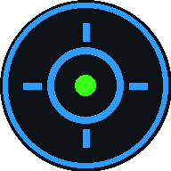

<!doctype html>
<html lang="es">
<head>
<meta charset="utf-8">
<title>Panel de Despacho — Control de flota</title>
<meta name="viewport" content="width=device-width, initial-scale=1">

<!-- PWA: el panel se instala como app fija en un celular o tablet -->
<link rel="manifest" href="manifest-despacho.json">
<meta name="theme-color" content="#F7FAFD">
<meta name="mobile-web-app-capable" content="yes">
<meta name="apple-mobile-web-app-capable" content="yes">
<meta name="apple-mobile-web-app-title" content="Despacho">
<!-- El ícono de la pestaña. Sin él el navegador pedía /favicon.ico (404) —
     más seguido desde que el título parpadea con un SOS—, y es lo que se ve
     en la pestaña que hay que encontrar entre otras -->
<link rel="icon" type="image/png" href="icon-despacho-192.png">

<!-- Leaflet: mapa de calles reales. Lo sirve ESTE servidor, no un CDN.
     Pasó en producción con el panel del creador: unpkg no entregó leaflet.js
     y la página quedaba en blanco sin un solo error visible, porque el mapa
     se inicializaba con `L` sin existir. Despacho es la pantalla que mira el
     que despacha durante ocho horas: no puede depender de la red de otro. -->
<link rel="stylesheet" href="vendor/leaflet/leaflet.css" />
<script src="vendor/leaflet/leaflet.js"></script>
<!-- La caída al CDN es para el caso en que este HTML se publique en un
     hosting estático sin el servidor Node al lado: ahí la copia local da 404.
     El navegador ejecuta este bloque recién después del <script> de arriba,
     así que `L` ya está definido o no lo estará nunca. -->
<script>
if (typeof L === 'undefined') {
  // Con integrity, como React y Babel: la caída al CDN iba sin, y un unpkg
  // comprometido podía meter código en el panel (auditoría 11/11). Los
  // hashes son los de la copia local, que es el mismo archivo.
  document.write('<link rel="stylesheet" href="https://unpkg.com/leaflet@1.9.4/dist/leaflet.css" integrity="sha256-p4NxAoJBhIIN+hmNHrzRCf9tD/miZyoHS5obTRR9BMY=" crossorigin="anonymous" />');
  document.write('<scr' + 'ipt src="https://unpkg.com/leaflet@1.9.4/dist/leaflet.js" integrity="sha256-20nQCchB9co0qIjJZRGuk2/Z9VM+kNiyxNV1lvTlZBo=" crossorigin="anonymous"><\/scr' + 'ipt>');
}
</script>

<link rel="preconnect" href="https://fonts.googleapis.com">
<link rel="preconnect" href="https://fonts.gstatic.com" crossorigin>
<link href="https://fonts.googleapis.com/css2?family=Archivo+Black&family=JetBrains+Mono:wght@700;800&display=swap" rel="stylesheet">

<!-- Si el servidor Node sirve esta página, config.js apunta el tiempo
     real a este mismo origen; en hosting estático da 404 y no pasa nada -->
<script src="config.js"></script>
<style>
  *, *::before, *::after { box-sizing: border-box; }
  /* Las fija Root al aplicar el tema (día por defecto) */
  :root { --bg: #F7FAFD; --fg: #0B2239; }
  html, body {
    margin: 0; padding: 0; height: 100%;
    background: var(--bg); color: var(--fg);
    font-family: system-ui, -apple-system, "Helvetica Neue", sans-serif;
    overflow: hidden;
  }
  #root { height: 100%; }
  /* El banner de SOS ocupa el ancho entero: el anillo de sombra que servía
     para un punto no se ve en una franja. Late en opacidad. */
  @keyframes sosPulse {
    0%, 100% { opacity: 1; }
    50%      { opacity: .82; }
  }
  @media (prefers-reduced-motion: reduce) {
    [style*="sosPulse"] { animation: none !important; }
  }
  ::-webkit-scrollbar { width: 8px; height: 8px; }
  ::-webkit-scrollbar-thumb { background: var(--line, #C3D4E4); border-radius: 4px; }
  ::-webkit-scrollbar-track { background: transparent; }

  /* ─── Movimiento: 150–200 ms, nunca más. Todo lo de acá se apaga con
     prefers-reduced-motion (abajo). Los colores salen de las variables que
     Root copia de HUD: acá no hay ni un color propio. */
  button, a, input, select, textarea, [data-tarjeta], [data-fila] {
    transition: background-color .16s ease, border-color .16s ease, color .16s ease,
                box-shadow .18s ease, opacity .16s ease, transform .16s ease, filter .16s ease;
  }
  button:not(:disabled):hover { filter: brightness(.95); }
  html[data-tema="night"] button:not(:disabled):hover { filter: brightness(1.18); }
  button:not(:disabled):active { transform: translateY(1px); }
  :focus { outline: none; }
  :focus-visible { outline: 2px solid var(--acento); outline-offset: 2px; }
  input:focus-visible, select:focus-visible, textarea:focus-visible {
    outline: none; border-color: var(--acento) !important; box-shadow: 0 0 0 3px var(--anillo);
  }
  [data-fila]:hover { background-color: var(--realce); }
  [data-tarjeta]:hover { background-color: var(--realce) !important; }
  [role="menuitem"]:hover { background-color: var(--realce) !important; filter: none !important; }
  summary { cursor: pointer; }
  summary::-webkit-details-marker { color: var(--acento); }

  @keyframes aparecer { from { opacity: 0; transform: translateY(6px); } to { opacity: 1; transform: none; } }
  @keyframes entrarMsg { from { opacity: 0; transform: translateY(8px) scale(.98); } to { opacity: 1; transform: none; } }
  @keyframes velo { from { opacity: 0; } to { opacity: 1; } }
  @keyframes cambio { from { transform: scale(1.12); } to { transform: none; } }
  @keyframes latido { 0%, 100% { opacity: 1; } 50% { opacity: .35; } }
  @keyframes cargando { 0%, 100% { opacity: .6; } 50% { opacity: 1; } }

  /* «Guardar como evidencia» aparece al pasar por el mensaje; en pantallas
     táctiles (sin hover) queda siempre a la vista. */
  .r14-msg .r14-evid { opacity: 0; }
  .r14-msg:hover .r14-evid, .r14-msg:focus-within .r14-evid { opacity: 1; }
  @media (hover: none) { .r14-msg .r14-evid { opacity: 1; } }

  /* Leaflet con el mismo vocabulario que el panel */
  .leaflet-container { font-family: inherit; background: var(--hueco); }
  .leaflet-bar { border: none !important; border-radius: 12px !important; overflow: hidden;
                 box-shadow: var(--sombra) !important; }
  .leaflet-bar a, .leaflet-bar a:hover {
    width: 38px !important; height: 38px !important; line-height: 38px !important;
    font: 600 19px/38px system-ui, sans-serif !important;
    background: var(--surface) !important; color: var(--fg) !important;
    border-bottom: 1px solid var(--divider) !important;
  }
  .leaflet-bar a:hover { background: var(--realce) !important; }
  .leaflet-control-attribution { background: var(--flotante) !important; color: var(--dim) !important;
                                 border-radius: 8px 0 0 0; padding: 2px 8px !important; }
  .leaflet-control-attribution a { color: var(--dim) !important; }
  @media (max-width: 899px) { .leaflet-control-attribution { font-size: 9px; line-height: 1.35; } }

  @media (prefers-reduced-motion: reduce) {
    *, *::before, *::after {
      animation-duration: .01ms !important; animation-iteration-count: 1 !important;
      transition-duration: .01ms !important;
    }
  }
</style>
</head>
<body>

<div id="root"></div>

<!-- Producción, no desarrollo: react-dom pasa de 1054 kB a 128. -->
<script src="https://unpkg.com/react@18.3.1/umd/react.production.min.js" integrity="sha384-DGyLxAyjq0f9SPpVevD6IgztCFlnMF6oW/XQGmfe+IsZ8TqEiDrcHkMLKI6fiB/Z" crossorigin="anonymous"></script>
<script src="https://unpkg.com/react-dom@18.3.1/umd/react-dom.production.min.js" integrity="sha384-gTGxhz21lVGYNMcdJOyq01Edg0jhn/c22nsx0kyqP0TxaV5WVdsSH1fSDUf5YJj1" crossorigin="anonymous"></script>
<script src="https://unpkg.com/@babel/standalone@7.29.0/babel.min.js" integrity="sha384-m08KidiNqLdpJqLq95G/LEi8Qvjl/xUYll3QILypMoQ65QorJ9Lvtp2RXYGBFj1y" crossorigin="anonymous"></script>

<!-- Si React o Babel no llegan del CDN, la página quedaba en blanco sin un
     solo error: Despacho ciego y sin saber por qué (auditoría 11/11). El
     creador ya lo tenía. Espera un rato y, si el panel sigue sin dibujarse,
     lo dice en HTML pelado; si el panel carga después, React lo pisa. -->
<script>
setTimeout(function () {
  var root = document.getElementById('root');
  if (root && !root.children.length) {
    root.innerHTML =
      '<div data-sin-librerias style="max-width:560px;margin:80px auto;padding:24px;' +
      'font-family:system-ui,sans-serif;font-size:15px;line-height:1.6;' +
      'background:#FCEBEE;border:1px solid #E6BFC6;border-left:3px solid #C2001D;' +
      'border-radius:14px;color:#5C0010;">' +
      '<strong>El panel no pudo cargar.</strong><br>' +
      'Sus librerías no llegaron desde internet (unpkg.com). Suele ser un corte ' +
      'de un momento: recargá con Ctrl+Shift+R. Mientras tanto <strong>no ves ' +
      'el mapa ni los SOS</strong>: si hay una emergencia, la central atiende por teléfono.' +
      '<br><button onclick="location.reload()" style="margin-top:12px;padding:10px 18px;' +
      'font-size:14px;background:#C2001D;color:#fff;border:none;border-radius:9px;cursor:pointer">' +
      'Recargar</button></div>';
  }
}, 8000);
</script>

<script type="text/babel" data-presets="react">

// Mismo servidor que la app del chofer
const SERVER_URL = window.REALTIME_SERVER_URL ||
  'wss://prototipo-celular-rastreo-01-production.up.railway.app';
const HTTP_URL = SERVER_URL.replace(/^ws/, 'http');

// El fondo del mapa: Geoapify, mismo diseño que las tiles de CARTO de antes
// (`positron` = light_all, `dark-matter` = dark_all) pero con licencia que
// permite uso comercial. La clave la pone el servidor en /config.js desde su
// variable de entorno GEOAPIFY_API_KEY; acá nunca hay una clave escrita.
//
// Este panel usa el proveedor DIRECTO, a propósito, y no la cascada del mapa
// propio que usan las pantallas del chofer: el mapa propio (v1) no tiene
// nombres de calles, y acá se trazan rutas — los nombres valen. Son ~30
// paneles contra 2000 choferes: la cuota del proveedor ni se entera.
// Decisión de Gerson, 2026-08.
const TILES_KEY = window.TILES_KEY || '';
const tilesUrl = (estilo) =>
  `https://maps.geoapify.com/v1/tile/${estilo}/{z}/{x}/{y}{r}.png?apiKey=${TILES_KEY}`;
// OSM la exige (ODbL) y Geoapify la pide en su plan gratuito. Se muestra.
const TILES_ATRIB = 'Powered by <a href="https://www.geoapify.com/">Geoapify</a> · © OpenMapTiles · © <a href="https://www.openstreetmap.org/copyright">OpenStreetMap</a> contributors';

// Tokens HUD compartidos con la app
// Dos temas. DÍA es el de fábrica: el encargado puede estar en la calle o en
// el paradero con el celular en la mano, no en una oficina con luz tenue.
// NOCHE es el diseño oscuro original, para turnos de madrugada.
const TEMAS = {
  day: {
    bg: '#F7FAFD', surface: '#FFFFFF', line: '#C3D4E4', divider: '#E1E9F2',
    green: '#1F8A4F', amber: '#A67300', red: '#C2001D',
    fg: '#0B2239', fg2: '#2A4864', dim: '#41627F', dim2: '#496A86', dim3: '#5A7591',
    bright: '#1668C4', sky: '#1668C4',
    hueco: '#EDF2F8',       // cajas de alta, fondos hundidos
    campo: '#FFFFFF',       // inputs
    campoLinea: '#C3D4E4',
    boton: '#E3EDF7',       // botones secundarios
    apagado: '#B9C9D8',     // punto de "desconectado"
    burbuja: '#FFFFFF',      burbujaInk: '#0B2239',
    burbujaPropia: '#DCEBFB', burbujaPropiaInk: '#0A2E52',
    burbujaSos: '#FFE1E7',   burbujaSosInk: '#68001A',
    okFondo: '#E4F7EA', okClave: '#0B6B33',
    cargando: '#7FA8D4',
    // Superficies de estado: fondo + borde + tinta que se lee encima. Son
    // derivados del juego de arriba, no una paleta nueva; existen para que
    // un aviso se distinga sin bajar el contraste del texto.
    verdeFondo: '#E9F7EF', verdeBorde: '#BEE3CD', verdeTinta: '#0B6B33',
    ambarFondo: '#FDF6E4', ambarBorde: '#E4C88A', ambarTinta: '#4A3200', ambarTinta2: '#6B4A00',
    rojoFondo: '#FCEBEE',  rojoBorde: '#E6BFC6',  rojoTinta: '#5C0010',
    azulFondo: '#E7F0FB',  azulBorde: '#C9DDF4',  azulTinta: '#0A2E52',
    filaCritica: '#FDF3F5', // fila de unidad en rojo
    filaActiva: '#F7FBFF',  // tarjeta de la ruta que se está mirando
    celda: '#F4F8FC',       // fondo de las celdas de brecha
    tinta: '#0B2239',       // botón principal del creador, segmentado activo
    flotante: 'rgba(255,255,255,.94)', // tarjetas sobre el mapa
    velo: 'rgba(11,34,57,.42)',        // overlay de modal
    // Login: el halo detrás de la tarjeta (era un #0a1626 fijo en los dos temas)
    fondoLogin: '#E3EEF9',
    realce: '#F1F6FB',      // hover de filas y tarjetas
    anillo: 'rgba(22,104,196,.22)', // foco de los campos
    sombra: '0 1px 2px rgba(11,34,57,.06), 0 6px 18px -10px rgba(11,34,57,.22)',
    sombraAlta: '0 2px 6px rgba(11,34,57,.06), 0 24px 48px -20px rgba(11,34,57,.35)',
    // Avatares: [fondo, iniciales]. Derivados de la paleta; ninguno es rojo.
    avatares: [['#DCEBFB', '#0A2E52'], ['#DDF2E5', '#0B5A2C'], ['#F8EBCB', '#4A3200'],
               ['#E8E3F8', '#3A2A78'], ['#D7EFEF', '#0B4F52'], ['#E3E9F0', '#22384F']],
    tiles: tilesUrl('positron'),
    oscuro: false,
  },
  night: {
    bg: '#03060a', surface: '#0d1116', line: '#1c2836', divider: '#16222f',
    green: '#39FF14', amber: '#FFD400', red: '#FF2D55',
    fg: '#EAF4FF', fg2: '#C6D6E6', dim: '#8FA8C0', dim2: '#6E88A2', dim3: '#63809D',
    bright: '#2E9DFF', sky: '#71BCFF',
    hueco: '#0a0f15',
    campo: '#10161d',
    campoLinea: '#232b36',
    boton: '#1a222c',
    apagado: '#2a3644',
    burbuja: '#141a21',      burbujaInk: '#DCE8F5',
    burbujaPropia: '#0e2a45', burbujaPropiaInk: '#D8ECFF',
    burbujaSos: '#2b0812',   burbujaSosInk: '#FFD9E0',
    okFondo: '#08251a', okClave: '#7DF06A',
    cargando: '#1D598F',
    // Mismos papeles que en día, resueltos para fondo oscuro
    verdeFondo: '#08251a', verdeBorde: '#14512f', verdeTinta: '#7DF06A',
    ambarFondo: '#221900', ambarBorde: '#4a3800', ambarTinta: '#FFD400', ambarTinta2: '#C9A83A',
    rojoFondo: '#2b0812',  rojoBorde: '#5a1122',  rojoTinta: '#FFD9E0',
    azulFondo: '#0e2a45',  azulBorde: '#1d4570',  azulTinta: '#D8ECFF',
    filaCritica: '#1a0810',
    filaActiva: '#0b1620',
    celda: '#0a0f15',
    tinta: '#EAF4FF',
    flotante: 'rgba(13,17,22,.94)',
    velo: 'rgba(0,0,0,.6)',
    fondoLogin: '#0a1626',
    realce: '#111a24',
    anillo: 'rgba(46,157,255,.32)',
    sombra: '0 1px 2px rgba(0,0,0,.4), 0 6px 18px -10px rgba(0,0,0,.7)',
    sombraAlta: '0 2px 6px rgba(0,0,0,.4), 0 24px 48px -20px rgba(0,0,0,.8)',
    avatares: [['#0e2a45', '#D8ECFF'], ['#08251a', '#9BF08A'], ['#2a2000', '#FFE07A'],
               ['#211a3d', '#D9CCFF'], ['#06282a', '#9EEFEF'], ['#1a222c', '#C6D6E6']],
    tiles: tilesUrl('dark-matter'),
    oscuro: true,
  },
};

// Se muta en vez de reemplazarse: así las referencias HUD.* de todo el panel
// siguen valiendo sin pasar el tema por props.
const HUD = { ...TEMAS.day };
function aplicarTema(modo) {
  Object.assign(HUD, TEMAS[modo] || TEMAS.day);
}

// Cualquier dato que se meta en HTML crudo (los pines del mapa se arman así,
// que es como los pide Leaflet) pasa por acá. El servidor ya limita los
// identificadores a caracteres seguros; esto es la segunda pared, para las
// bases que ya tuvieran algo raro cargado de antes.
function escaparHtml(v) {
  return String(v ?? '').replace(/[&<>"']/g, c => (
    { '&': '&amp;', '<': '&lt;', '>': '&gt;', '"': '&quot;', "'": '&#39;' }[c]
  ));
}

const JULIACA_CENTER = [-15.4904, -70.1333];
// Objetivo de brecha por defecto; cada ruta manda el suyo en el estado
const TARGET_GAP_DEFAULT = 2;

// Los tipos de emergencia. El chofer los elige DESPUÉS de deslizar el SOS
// —la alerta ya llegó acá—; llegan como mensaje `sos_tipo` y actualizan la
// emergencia ya mostrada. Sin tipo, es el SOS genérico de siempre.
const TIPOS_SOS = { mecanica: 'Falla mecánica', accidente: 'Accidente', policia: 'Policía' };

// ─── LA ALARMA DEL SOS (31/10) ──────────────────────────────────
// Un SOS entraba como cartel y línea de chat, en silencio: con otra pestaña o
// ventana adelante, Despacho no se enteraba. Ahora suena —dos tonos cada
// 2,5 s, hasta que alguien marque ATENDIDO—, avisa con una notificación del
// navegador y hace parpadear el título de la pestaña.
//
// Sin archivo de sonido (Web Audio: cero bytes). El navegador no deja sonar
// hasta el primer gesto en la página: el clic en INGRESAR ya cuenta, y al
// retomar una sesión guardada se ofrece «Activar alarma» hasta el primer clic.
const alarmaSos = (() => {
  let ctx = null, reloj = null;
  const oyentes = new Set();
  const avisar = () => oyentes.forEach(fn => { try { fn(); } catch {} });
  const crear = () => {
    if (ctx) return ctx;
    const AC = window.AudioContext || window.webkitAudioContext;
    if (!AC) return null;
    try { ctx = new AC(); ctx.onstatechange = avisar; } catch { ctx = null; }
    return ctx;
  };
  const tonos = () => {
    if (!ctx || ctx.state !== 'running') return;
    const t0 = ctx.currentTime;
    [880, 660, 880, 660].forEach((f, i) => {
      const o = ctx.createOscillator(), g = ctx.createGain(), t = t0 + i * 0.25;
      o.type = 'square'; o.frequency.value = f;
      g.gain.setValueAtTime(0.0001, t);
      g.gain.exponentialRampToValueAtTime(0.2, t + 0.02);
      g.gain.exponentialRampToValueAtTime(0.0001, t + 0.22);
      o.connect(g); g.connect(ctx.destination);
      o.start(t); o.stop(t + 0.24);
    });
  };
  return {
    desbloquear() {
      const c = crear();
      if (c && c.state === 'suspended') c.resume().then(avisar, () => {});
      avisar();
    },
    lista: () => !!ctx && ctx.state === 'running',
    soportada: () => !!(window.AudioContext || window.webkitAudioContext),
    sonar() { if (reloj) return; tonos(); reloj = setInterval(tonos, 2500); },
    callar() { clearInterval(reloj); reloj = null; },
    suscribir(fn) { oyentes.add(fn); return () => oyentes.delete(fn); },
  };
})();
['pointerdown', 'keydown'].forEach(ev =>
  document.addEventListener(ev, () => alarmaSos.desbloquear(), { capture: true }));

// La notificación del navegador: se ve aunque el panel esté tapado por otra
// ventana. Queda hasta que se la toca (`requireInteraction`).
function notificarSos(s) {
  if (!('Notification' in window) || Notification.permission !== 'granted') return;
  try {
    const n = new Notification(`SOS · ${(s.vehicleId || s.unitId || 'Unidad').toUpperCase()}`, {
      body: `${s.driverName || s.unitId || 'Un chofer'} pide ayuda` +
        (s.routeId ? ` · ruta ${s.routeId}` : '') + '. Abrí el panel y marcá ATENDIDO.',
      tag: 'sos-' + (s.sosId ?? s.timestamp), requireInteraction: true,
    });
    n.onclick = () => { try { window.focus(); } catch {} n.close(); };
  } catch {}
}

function parseMin(s) {
  if (!s) return null;
  const [m, sec] = String(s).split(':').map(Number);
  return m + (sec || 0) / 60;
}

// Minutos con decimales → "2:00". El objetivo se guarda como número y se
// lee al lado de las brechas, que vienen en m:ss: mostrarlo como "2 min"
// obligaría a convertir de cabeza cada vez que se compara.
function fmtMin(min) {
  if (min === null || min === undefined || isNaN(min)) return '—';
  const total = Math.round(min * 60);
  return `${Math.floor(total / 60)}:${String(total % 60).padStart(2, '0')}`;
}

function gapColor(gapStr, target = TARGET_GAP_DEFAULT) {
  const v = parseMin(gapStr);
  if (v === null || isNaN(v)) return HUD.dim3;
  const dev = Math.abs(v - target) / target;
  if (dev <= 0.15) return HUD.green;
  if (dev <= 0.30) return HUD.amber;
  return HUD.red;
}

// El mismo juicio que `gapColor`, en palabras.
//
// Verde y ámbar son EL MISMO COLOR para un daltónico rojo-verde: medido con el
// validador de paletas, el par queda en ΔE 5,4 bajo protanopia, por debajo del
// piso aceptable. Y no se arregla moviendo el color — corriendo el ámbar hacia
// el naranja se despega del verde pero se pega al rojo. La salida es no
// depender del color: el número de la brecha ya estaba, pero *si esa brecha
// está bien o se está yendo* lo decía únicamente el color, así que un
// despachador daltónico veía el dato y no veía el juicio.
//
// Las palabras son las de la leyenda que ya está en el mapa, para que la fila
// y la leyenda no digan lo mismo de dos maneras distintas. Sin dato no hay
// palabra: el "—" del valor ya dice todo lo que se sabe.
function gapWord(gapStr, target = TARGET_GAP_DEFAULT) {
  const c = gapColor(gapStr, target);
  if (c === HUD.green) return 'EN OBJETIVO';
  if (c === HUD.amber) return 'AL LÍMITE';
  if (c === HUD.red) return 'CRÍTICA';
  return null;
}

function nowTime(ts) {
  const d = ts ? new Date(ts) : new Date();
  return `${String(d.getHours()).padStart(2, '0')}:${String(d.getMinutes()).padStart(2, '0')}`;
}

// La hora de un mensaje del chat. El historial guarda 30 días (los SOS, un
// año): un SOS de hace seis días salía con «04:18» a secas y se leía como de
// esta mañana. Si no es de hoy, lleva el día.
function horaChat(ts) {
  if (!ts) return nowTime();
  const d = new Date(ts);
  if (d.toDateString() === new Date().toDateString()) return nowTime(ts);
  return `${String(d.getDate()).padStart(2, '0')}/${String(d.getMonth() + 1).padStart(2, '0')} ${nowTime(ts)}`;
}

// Los roles que una persona tuvo en un período, para leer de un vistazo. El
// servidor manda `roles` (lista) y `role` (en el que puso más horas); con una
// pantalla vieja o un turno sin rol, se cae al `role` de siempre.
const ROL_ES = { driver: 'chofer', collector: 'cobrador' };
function rolesTexto(p) {
  const lista = (p.roles && p.roles.length ? p.roles : [p.role]).filter(Boolean);
  if (!lista.length) return '—';
  return lista.map(r => ROL_ES[r] || r).join(' · ');
}
// Si en todo el período manejó alguna vez. Lo que decide si las vueltas y
// las salidas de ruta de la fila son suyas o son un «—».
function manejo(p) {
  return (p.roles && p.roles.length ? p.roles : [p.role]).includes('driver');
}

// "hoy 14:05" / "ayer 09:12" / "12/07 18:40" — para la última conexión
// La etiqueta de una actualización de la app ('20261104-1530') como se lee:
// '04/11 15:30' (PENDIENTES 0.11)
function fechaActualizacion(a) {
  const m = /^(\d{4})(\d{2})(\d{2})-(\d{2})(\d{2})$/.exec(String(a || ''));
  return m ? `${m[3]}/${m[2]} ${m[4]}:${m[5]}` : '';
}

function fmtWhen(ts) {
  if (!ts) return '—';
  const d = new Date(ts);
  const hoy = new Date(); hoy.setHours(0, 0, 0, 0);
  const dias = Math.floor((hoy - new Date(d).setHours(0, 0, 0, 0)) / 86400000);
  const hora = nowTime(ts);
  if (dias <= 0) return `hoy ${hora}`;
  if (dias === 1) return `ayer ${hora}`;
  return `${String(d.getDate()).padStart(2, '0')}/${String(d.getMonth() + 1).padStart(2, '0')} ${hora}`;
}

// Los tres diccionarios de Números, para no repetir literales sueltos por la
// pantalla. El servidor manda el slug; acá se dice en castellano.
const MODO_OBJETIVO = {
  auto: 'automático',
  esperando: 'automático (esperando vueltas)',
  manual: 'fijado a mano',
};
const TIPOS_SOS_ES = { mecanica: 'Falla mecánica', accidente: 'Accidente', policia: 'Policía' };
// Cómo terminó una salida del recorrido. `trazado` no es que volviera: es que
// cambió el recorrido con el que se medía, así que de esa salida ya no se
// puede afirmar nada.
// Cómo terminó una parada, y qué vio el servidor de raro. Los slugs son los
// del servidor; acá se dicen en castellano. Lo que significa cada anomalía
// va en QUE_ES_ANOMALIA, a la vista (el detalle técnico, en
// TRUCOS-2026-09-10.md).
const CIERRE_PARADA = {
  movio: 'VOLVIÓ A ANDAR',
  ausente: 'SE DECLARÓ AUSENTE',
  chofer: 'LO APAGÓ EL CHOFER',
  corte: 'SE CORTÓ LA SEÑAL',
  trazado: 'CAMBIÓ EL TRAZADO MEDIDO',
};
const ANOMALIA_ES = {
  salto: 'salto imposible',
  ausente_en_marcha: 'ausente y en marcha',
  reloj: 'reloj del teléfono',
  descartadas: 'posiciones con hora imposible',
  gps_simulado: 'GPS falso (lo dijo Android)',
  gps_sospechoso: 'GPS sospechoso',
  gps_impreciso: 'GPS impreciso',
};
const QUE_ES_ANOMALIA = [
  ['salto', 'dos posiciones seguidas que pedirían una velocidad que una combi no tiene.'],
  ['ausente_en_marcha', 'la combi se movía mientras estaba declarada AUSENTE.'],
  ['reloj', 'el reloj del teléfono está atrasado; el servidor lo corrige y sigue.'],
  ['descartadas', 'llegaron posiciones con una hora que no puede ser (del futuro o de horas atrás) y no se usaron.'],
  ['gps_simulado', 'el propio teléfono marcó la ubicación como simulada.'],
  ['gps_sospechoso', 'posiciones sin el ruido de un GPS de verdad: clavadas sobre el trazado o con una velocidad que no varía.'],
  ['gps_impreciso', 'el teléfono declaró mucho error en su ubicación; mientras dura no se juzgan desvíos ni paradas.'],
];

const CIERRE_DESVIO = {
  regreso: 'VOLVIÓ AL RECORRIDO',
  corte: 'SE CORTÓ LA SEÑAL',
  trazado: 'CAMBIÓ EL TRAZADO MEDIDO',
};

const mono = 'JetBrains Mono, ui-monospace, monospace';
const black = '"Archivo Black", system-ui, sans-serif';

// ─── Piezas que se repiten en todo el panel.
// Se calculan al llamarlas, no una sola vez: HUD se muta al cambiar de tema
// y una constante congelaría los colores del tema con el que arrancó.
const btnPrimario = (alto = 36) => ({
  height: alto, padding: '0 14px', background: HUD.bright, color: '#fff',
  border: 'none', borderRadius: 10, fontSize: 13, fontWeight: 700,
  fontFamily: 'inherit', cursor: 'pointer', whiteSpace: 'nowrap',
  display: 'inline-flex', alignItems: 'center', justifyContent: 'center', gap: 6,
});
const btnSecundario = (alto = 36) => ({
  height: alto, padding: '0 12px', background: HUD.surface, color: HUD.fg2,
  border: `1px solid ${HUD.line}`, borderRadius: 10, fontSize: 13, fontWeight: 700,
  fontFamily: 'inherit', cursor: 'pointer', whiteSpace: 'nowrap',
  display: 'inline-flex', alignItems: 'center', justifyContent: 'center', gap: 6,
});
// Sin caja: para lo que acompaña (cabecera, acciones de fila, menús). La caja
// con borde queda para lo que de verdad es un botón al lado de otros.
const btnFantasma = (alto = 36) => ({
  height: alto, padding: '0 10px', background: 'transparent', color: HUD.fg2,
  border: 'none', borderRadius: 10, fontSize: 13, fontWeight: 700,
  fontFamily: 'inherit', cursor: 'pointer', whiteSpace: 'nowrap',
  display: 'inline-flex', alignItems: 'center', justifyContent: 'center', gap: 6,
});
// Botón de fila: el de las acciones dentro de una tabla o una tarjeta
const btnChico = (tinta, borde) => ({
  padding: '5px 9px', background: HUD.surface, color: tinta || HUD.fg2,
  border: `1px solid ${borde || HUD.line}`, borderRadius: 8,
  fontSize: 12, fontWeight: 700, fontFamily: 'inherit', cursor: 'pointer',
  whiteSpace: 'nowrap', display: 'inline-flex', alignItems: 'center', gap: 5,
});
// Botón de un solo ícono (mensajes de la tarjeta, tema). 36 px: se toca con el
// dedo en el celular sin errarle al de al lado.
const btnIcono = (activo, tam = 36) => ({
  width: tam, height: tam, padding: 0, position: 'relative', flexShrink: 0,
  display: 'inline-flex', alignItems: 'center', justifyContent: 'center',
  background: activo ? HUD.bright : 'transparent', color: activo ? '#fff' : HUD.fg2,
  border: 'none', borderRadius: 10, cursor: 'pointer', fontFamily: 'inherit',
});
// Etiqueta: encabezado de columna, label de campo, kicker. Era mono en
// mayúscula con tracking; ahora es la sans del cuerpo en caja normal. La
// mono queda para los DATOS (horas, brechas, placas, códigos): `dato()`.
const rotulo = (tam = 9, tinta) => ({
  fontSize: tam + 3, fontWeight: 600, color: tinta || HUD.dim2, letterSpacing: 0,
});
const dato = (tam = 12, tinta) => ({
  fontFamily: mono, fontSize: tam, fontWeight: 700, color: tinta || HUD.fg2,
  fontVariantNumeric: 'tabular-nums',
});
const tarjeta = (relleno = 14) => ({
  border: `1px solid ${HUD.divider}`, borderRadius: 14, padding: relleno,
  background: HUD.surface,
});
const campo = (alto = 40) => ({
  height: alto, padding: '0 12px', background: HUD.campo, color: HUD.fg,
  border: `1px solid ${HUD.campoLinea}`, borderRadius: 10,
  fontSize: 14, fontFamily: 'inherit', outline: 'none', minWidth: 0,
});
// Texto que sigue en el DOM (lo leen los lectores de pantalla y las pruebas
// con `has-text`) pero no ocupa lugar: el ícono dice lo mismo a la vista.
const ocultoVisual = {
  position: 'absolute', width: 1, height: 1, padding: 0, margin: -1,
  overflow: 'hidden', clip: 'rect(0 0 0 0)', whiteSpace: 'nowrap', border: 0,
};

// ─── Íconos de trazo, SVG en línea (cero archivos, cero bytes de red). 24×24,
// trazo de 1,8, `currentColor`: toman el color del texto que acompañan.
const ICONOS = {
  personas: '<circle cx="9" cy="8" r="3.5"/><path d="M2.5 20c.8-3.6 3.4-5.5 6.5-5.5s5.7 1.9 6.5 5.5"/><path d="M16 4.6a3.5 3.5 0 0 1 0 6.8M18.6 14.8c1.5.8 2.5 2.5 2.9 5.2"/>',
  persona: '<circle cx="12" cy="8" r="3.6"/><path d="M5 20.5c.9-3.7 3.6-5.7 7-5.7s6.1 2 7 5.7"/>',
  vehiculo: '<rect x="4" y="3.5" width="16" height="14" rx="3"/><path d="M4 11h16M8 20.5v-3M16 20.5v-3"/><path d="M7.5 14.3h.01M16.5 14.3h.01" stroke-width="2.6"/>',
  reloj: '<circle cx="12" cy="12" r="8.5"/><path d="M12 7.5V12l3 2"/>',
  ruta: '<circle cx="6" cy="18" r="2.5"/><circle cx="18" cy="6" r="2.5"/><path d="M8.5 18H15a3 3 0 0 0 0-6H9a3 3 0 0 1 0-6h6.5"/>',
  vueltas: '<path d="M4 12a8 8 0 0 1 13.7-5.6L20 8.5M20 4v4.5h-4.5M20 12a8 8 0 0 1-13.7 5.6L4 15.5M4 20v-4.5h4.5"/>',
  traba: '<path d="M12 21s-6.5-5.8-6.5-11a6.5 6.5 0 0 1 13 0c0 5.2-6.5 11-6.5 11z"/><path d="M10.5 7.5v4.5M13.5 7.5v4.5"/>',
  informe: '<path d="M14 3H7a2 2 0 0 0-2 2v14a2 2 0 0 0 2 2h10a2 2 0 0 0 2-2V8z"/><path d="M14 3v5h5M9 13h6M9 17h4"/>',
  empresa: '<path d="M4 20.5V8.5l8-5 8 5v12"/><path d="M9.5 20.5v-6h5v6M2.5 20.5h19"/>',
  numeros: '<path d="M5 20v-8M11 20V5M17 20v-5M2.5 20.5h19"/>',
  actividad: '<path d="M3 12h4l3-7.5 4 15 3-7.5h4"/>',
  mapa: '<path d="M9 4.5 3.5 6.5v13l5.5-2 6 2 5.5-2v-13l-5.5 2z"/><path d="M9 4.5v13M15 6.5v13"/>',
  chat: '<path d="M20 11.5a8 8 0 0 1-11.7 7.1L4 19.8l1.2-4A8 8 0 1 1 20 11.5z"/>',
  lista: '<path d="M9 6h11M9 12h11M9 18h11"/><path d="M4.5 6h.01M4.5 12h.01M4.5 18h.01" stroke-width="2.6"/>',
  sol: '<circle cx="12" cy="12" r="4"/><path d="M12 2.5v2M12 19.5v2M2.5 12h2M19.5 12h2M5.3 5.3l1.4 1.4M17.3 17.3l1.4 1.4M5.3 18.7l1.4-1.4M17.3 6.7l1.4-1.4"/>',
  luna: '<path d="M19.5 14.5A8 8 0 1 1 9.5 4.5a6.5 6.5 0 0 0 10 10z"/>',
  mas: '<path d="M5 12h.01M12 12h.01M19 12h.01" stroke-width="3"/>',
  llave: '<circle cx="8" cy="15" r="4"/><path d="m11 12 8.5-8.5M16.5 6.5l2.5 2.5M14 9l2 2"/>',
  editar: '<path d="M4 20h4L19 9l-4-4L4 16z"/><path d="m13.5 6.5 4 4"/>',
  baja: '<path d="M4 7h16M10 11v6M14 11v6M6 7l1 13h10l1-13M9 7V4h6v3"/>',
  vivo: '<circle cx="12" cy="12" r="2.5"/><path d="M8 8a5.7 5.7 0 0 0 0 8M16 8a5.7 5.7 0 0 1 0 8M5 5a10 10 0 0 0 0 14M19 5a10 10 0 0 1 0 14"/>',
  sinSenal: '<path d="M3 3l18 18"/><path d="M8.5 16.5a5 5 0 0 1 6-.8M5.2 13a10 10 0 0 1 4.3-2.5M18.8 13a10 10 0 0 0-2-1.4M2 9.5a15 15 0 0 1 4.2-2.6M22 9.5A15 15 0 0 0 11.5 5"/><path d="M12 20h.01" stroke-width="2.6"/>',
  alerta: '<path d="M12 3.5 2.5 20h19z"/><path d="M12 10v4.5M12 17.2h.01"/>',
  campana: '<path d="M6 16v-5a6 6 0 0 1 12 0v5l1.5 2h-15z"/><path d="M10 20.5a2 2 0 0 0 4 0"/>',
  campanaNo: '<path d="M6 16v-5a6 6 0 0 1 9.4-4.9M18 11v5l1.5 2H8"/><path d="M10 20.5a2 2 0 0 0 4 0M3 3l18 18"/>',
  salir: '<path d="M14 4h4a2 2 0 0 1 2 2v12a2 2 0 0 1-2 2h-4M9.5 16l-4-4 4-4M5.5 12H15"/>',
  atras: '<path d="M15 5l-7 7 7 7"/>',
  enviar: '<path d="M4 12 20 4l-6.5 16-2.5-6.5z"/><path d="m11 13.5 9-9.5"/>',
  descargar: '<path d="M12 4v11M7 10l5 5 5-5M5 20h14"/>',
  abajo: '<path d="m6 9 6 6 6-6"/>',
  info: '<circle cx="12" cy="12" r="8.5"/><path d="M12 11v5M12 8h.01"/>',
  gestion: '<rect x="4" y="4" width="6.5" height="6.5" rx="1.5"/><rect x="13.5" y="4" width="6.5" height="6.5" rx="1.5"/><rect x="4" y="13.5" width="6.5" height="6.5" rx="1.5"/><rect x="13.5" y="13.5" width="6.5" height="6.5" rx="1.5"/>',
  marcador: '<path d="M6.5 3.5h11v17L12 16.5l-5.5 4z"/>',
  gps: '<circle cx="12" cy="12" r="7"/><circle cx="12" cy="12" r="2.5"/><path d="M12 2v3M12 19v3M2 12h3M19 12h3"/>',
  candado: '<rect x="5" y="10.5" width="14" height="10" rx="2.5"/><path d="M8 10.5V8a4 4 0 0 1 8 0v2.5"/>',
  ojo: '<path d="M2.5 12S6 5.5 12 5.5 21.5 12 21.5 12 18 18.5 12 18.5 2.5 12 2.5 12z"/><circle cx="12" cy="12" r="3"/>',
  ojoNo: '<path d="M2.5 12S6 5.5 12 5.5 21.5 12 21.5 12 18 18.5 12 18.5 2.5 12 2.5 12z"/><circle cx="12" cy="12" r="3"/><path d="M4 4l16 16"/>',
  flecha: '<path d="M5 12h14M13 6l6 6-6 6"/>',
  mic: '<rect x="9" y="3" width="6" height="11" rx="3"/><path d="M5.5 11a6.5 6.5 0 0 0 13 0M12 17.5V21"/>',
  camara: '<path d="M4 8h3l2-2.5h6L17 8h3v11H4z"/><circle cx="12" cy="13" r="3.5"/>',
  check: '<path d="m5 12.5 4.5 4.5L19 7.5"/>',
  buscar: '<circle cx="11" cy="11" r="6.5"/><path d="m16 16 4.5 4.5"/>',
  vacio: '<path d="M3.5 13.5 6 5h12l2.5 8.5V19H3.5z"/><path d="M3.5 13.5H9a3 3 0 0 0 6 0h5.5"/>',
  sumar: '<path d="M12 5v14M5 12h14"/>',
};
function Icono({ n, tam = 18, grosor = 1.8, style }) {
  return <svg width={tam} height={tam} viewBox="0 0 24 24" fill="none" stroke="currentColor"
    strokeWidth={grosor} strokeLinecap="round" strokeLinejoin="round" aria-hidden="true" focusable="false"
    style={{ flexShrink: 0, display: 'block', ...style }}
    dangerouslySetInnerHTML={{ __html: ICONOS[n] || '' }} />;
}

// ─── Personas antes que placas. Las iniciales del nombre sobre un color que
// sale del nombre: siempre el mismo para la misma persona, en la tarjeta, en
// el chat y en las tablas. Los colores son tokens (`avatares`) y ninguno es
// rojo: el rojo es del SOS.
function iniciales(nombre) {
  const p = String(nombre || '').trim().split(/\s+/)
    .map(w => w.replace(/[^\p{L}\p{N}]/gu, '')).filter(Boolean);
  if (!p.length) return '·';
  const dos = p.length > 1 ? p[0][0] + p[p.length - 1][0] : p[0].slice(0, 2);
  return dos.toUpperCase();
}
function colorDe(nombre) {
  let h = 0;
  for (const c of String(nombre || '')) h = (h * 31 + c.charCodeAt(0)) >>> 0;
  return HUD.avatares[h % HUD.avatares.length];
}
function Avatar({ nombre, tam = 32 }) {
  const [fondo, tinta] = colorDe(nombre);
  return (
    <span aria-hidden="true" style={{
      width: tam, height: tam, borderRadius: '50%', flexShrink: 0,
      display: 'inline-flex', alignItems: 'center', justifyContent: 'center',
      background: fondo, color: tinta, fontSize: Math.round(tam * 0.38), fontWeight: 800,
      letterSpacing: 0.2, userSelect: 'none', lineHeight: 1,
    }}>{iniciales(nombre)}</span>
  );
}

// "SIN SEÑAL DESDE 10:32" → "Sin señal desde 10:32". Los estados se escriben
// en mayúscula en el código (las suites los buscan así); se MUESTRAN en caja
// normal. Quedan en mayúscula las siglas y los códigos (M-05, R-14).
function oracion(s) {
  let primera = true;
  return String(s).replace(/[A-Za-zÁÉÍÓÚÑÜáéíóúñü]+/g, (w, i, todo) => {
    let r = w;
    if (w === 'GPS' || w === 'SOS') r = w;
    else if (w === 'ANDROID') r = 'Android';
    else if (todo[i + w.length] === '-' && /\d/.test(todo[i + w.length + 1] || '')) r = w;
    else if (w === w.toUpperCase()) r = w.toLowerCase();
    if (primera) { primera = false; r = r.charAt(0).toUpperCase() + r.slice(1); }
    return r;
  });
}
// Una línea de estado de la tarjeta: ícono + texto. `mayus` la deja en
// mayúscula y más pesada: es para los avisos que no se suavizan.
function Estado({ icono, tinta, fondo, borde, mayus, title, mt = 8, children }) {
  const partes = React.Children.toArray(children);
  const plano = partes.every(c => typeof c === 'string' || typeof c === 'number');
  const texto = plano ? (mayus ? partes.join('') : oracion(partes.join(''))) : children;
  return (
    <div title={title} style={{
      display: 'flex', alignItems: 'flex-start', gap: 6, marginTop: mt,
      fontSize: 12, fontWeight: mayus ? 800 : 600, letterSpacing: mayus ? 0.4 : 0,
      lineHeight: 1.35, color: tinta || HUD.dim2,
      ...(fondo ? { background: fondo, border: `1px solid ${borde || fondo}`, borderRadius: 8, padding: '5px 8px' } : {}),
    }}>
      {icono && <Icono n={icono} tam={14} grosor={2} style={{ marginTop: 1 }} />}
      <span style={{ minWidth: 0 }}>{texto}</span>
    </div>
  );
}
// Contador de no leídos sobre un ícono
function Insignia({ n }) {
  return (
    <span style={{
      position: 'absolute', top: 1, right: 1, minWidth: 17, height: 17, padding: '0 4px',
      borderRadius: 9, background: HUD.amber, color: HUD.oscuro ? '#000' : '#fff',
      fontFamily: mono, fontSize: 10, fontWeight: 800, lineHeight: '17px', textAlign: 'center',
      boxShadow: `0 0 0 2px ${HUD.surface}`,
    }}>{n}</span>
  );
}
// Un menú desplegable (el «⋯» de las filas, el «Descargar ▾» de Números). Se
// dibuja con position: fixed para que una tabla con overflow no lo corte.
function Menu({ etiqueta, icono = 'mas', items, titulo, data, estilo }) {
  const [pos, setPos] = React.useState(null);
  const boton = React.useRef(null);
  const caja = React.useRef(null);
  React.useEffect(() => {
    if (!pos) return;
    const fuera = (e) => {
      if (caja.current?.contains(e.target) || boton.current?.contains(e.target)) return;
      setPos(null);
    };
    const tecla = (e) => { if (e.key === 'Escape') { setPos(null); boton.current?.focus(); } };
    const cerrar = () => setPos(null);
    document.addEventListener('pointerdown', fuera);
    document.addEventListener('keydown', tecla);
    window.addEventListener('resize', cerrar);
    window.addEventListener('scroll', cerrar, true);
    return () => {
      document.removeEventListener('pointerdown', fuera);
      document.removeEventListener('keydown', tecla);
      window.removeEventListener('resize', cerrar);
      window.removeEventListener('scroll', cerrar, true);
    };
  }, [pos]);
  const visibles = (items || []).filter(Boolean);
  if (!visibles.length) return null;
  const abrir = () => {
    if (pos) { setPos(null); return; }
    const r = boton.current.getBoundingClientRect();
    const arriba = r.bottom + 44 * visibles.length + 24 > window.innerHeight;
    setPos({
      right: Math.max(8, window.innerWidth - r.right),
      ...(arriba ? { bottom: window.innerHeight - r.top + 6 } : { top: r.bottom + 6 }),
    });
  };
  return (
    <>
      <button ref={boton} type="button" {...(data || {})} aria-haspopup="menu" aria-expanded={!!pos}
        title={titulo} onClick={(e) => { e.stopPropagation(); abrir(); }}
        style={estilo || (etiqueta ? btnSecundario(36) : { ...btnIcono(false, 32), color: HUD.dim })}>
        {icono && <Icono n={icono} tam={16} />}
        {etiqueta}
        {etiqueta && <Icono n="abajo" tam={14} />}
        {!etiqueta && <span style={ocultoVisual}>Más acciones</span>}
      </button>
      {pos && (
        <div ref={caja} role="menu" onClick={e => e.stopPropagation()} style={{
          position: 'fixed', ...pos, zIndex: 5000, minWidth: 210, padding: 6,
          background: HUD.surface, border: `1px solid ${HUD.divider}`, borderRadius: 12,
          boxShadow: HUD.sombraAlta, display: 'grid', gap: 2, animation: 'aparecer .16s ease-out',
        }}>
          {visibles.map((it, i) => (
            <button key={i} type="button" role="menuitem" {...(it.data || {})} disabled={it.disabled}
              onClick={() => { setPos(null); it.onClick(); }}
              style={{
                display: 'flex', alignItems: 'center', gap: 10, width: '100%', padding: '9px 10px',
                border: 'none', borderRadius: 8, background: 'transparent', cursor: 'pointer',
                textAlign: 'left', fontFamily: 'inherit', fontSize: 13, fontWeight: 600,
                color: it.tono === 'rojo' ? HUD.red : HUD.fg2, whiteSpace: 'nowrap',
              }}>
              {it.icono && <Icono n={it.icono} tam={16} />}{it.label}
            </button>
          ))}
        </div>
      )}
    </>
  );
}

// ═══════════════════════════════════════════════════════════════
// LOGIN
// ═══════════════════════════════════════════════════════════════
// El nombre de la cooperativa sobrevive al cierre de sesión: al volver a
// entrar, el encargado ve el suyo y no una marca fija que puede no ser la
// de su empresa. En una máquina recién instalada no hay ninguno todavía.
function coopRecordada() {
  try { return localStorage.getItem('r14_coop_panel') || null; } catch { return null; }
}

function Login({ onSuccess, notice }) {
  const [user, setUser] = React.useState('DESPACHO');
  const [pass, setPass] = React.useState('');
  // Ver lo tipeado a pedido: las claves acá las dicta una persona a otra
  // por teléfono, y un error de tipeo a ciegas cuesta un bloqueo por
  // intentos. El de la app del chofer ya lo tiene; este es el mismo gesto.
  const [verPass, setVerPass] = React.useState(false);
  const [error, setError] = React.useState(null);
  const [loading, setLoading] = React.useState(false);
  const coop = coopRecordada();

  const submit = async () => {
    if (!user.trim() || pass.length < 4) {
      setError('Completá usuario y contraseña (mínimo 4 caracteres)');
      return;
    }
    setLoading(true);
    setError(null);
    try {
      const res = await fetch(HTTP_URL + '/auth/login', {
        method: 'POST',
        headers: { 'Content-Type': 'application/json' },
        body: JSON.stringify({ user: user.trim(), password: pass }),
      });
      const data = await res.json().catch(() => ({}));
      if (!res.ok) throw new Error(data.error || 'Error de autenticación');
      // Despacho y gerencia comparten este panel: el gerente es la cuenta
      // de arriba, con más permisos (vehículos, datos de la empresa, logo).
      if (data.role !== 'dispatch' && data.role !== 'manager') {
        throw new Error('Esta cuenta no es de Despacho ni de gerencia');
      }
      try {
        localStorage.setItem('r14_dispatch_session', JSON.stringify(data));
        if (data.companyName) localStorage.setItem('r14_coop_panel', data.companyName);
      } catch {}
      onSuccess(data);
    } catch (e) {
      setLoading(false);
      setError(e.message === 'Failed to fetch' ? 'No se pudo conectar con el servidor' : e.message);
    }
  };

  const inputStyle = {
    width: '100%', height: 50, padding: '0 16px', fontSize: 17, fontWeight: 600,
    background: HUD.campo, border: `1px solid ${HUD.campoLinea}`, borderRadius: 12,
    color: HUD.fg, outline: 'none', fontFamily: 'inherit',
  };
  const etiqueta = { display: 'block', fontSize: 13, fontWeight: 700, color: HUD.fg2, marginBottom: 6 };
  const hora = new Date().getHours();
  const saludo = hora < 12 ? 'Buen día' : hora < 19 ? 'Buenas tardes' : 'Buenas noches';

  // El fondo es un token por tema (`fondoLogin`): antes era un #0a1626 fijo,
  // y en el tema día dejaba una mancha oscura enorme detrás de la tarjeta.
  return (
    <div style={{
      height: '100%', overflowY: 'auto', padding: 16,
      display: 'flex', alignItems: 'center', justifyContent: 'center',
      background: `radial-gradient(90% 70% at 50% 0%, ${HUD.fondoLogin} 0%, ${HUD.bg} 72%)`,
    }}>
      <div style={{ width: 400, maxWidth: '100%', animation: 'aparecer .22s ease-out' }}>
        <div style={{ display: 'flex', alignItems: 'center', gap: 12, margin: '0 4px 18px' }}>
          
          <div style={{ minWidth: 0 }}>
            <div style={{
              fontFamily: black, fontSize: 19, lineHeight: 1.2,
              overflow: 'hidden', textOverflow: 'ellipsis', whiteSpace: 'nowrap',
            }}>{coop || 'Control de flota'}</div>
            <div style={{ fontSize: 13, fontWeight: 600, color: HUD.dim2 }}>Panel de Despacho</div>
          </div>
        </div>

        <form onSubmit={e => { e.preventDefault(); submit(); }} style={{
          background: HUD.surface, border: `1px solid ${HUD.divider}`, borderRadius: 20,
          padding: 28, boxShadow: HUD.sombraAlta,
        }}>
          <div style={{ fontFamily: black, fontSize: 26, letterSpacing: -0.3, lineHeight: 1.15 }}>{saludo}</div>
          <div style={{ fontSize: 14, color: HUD.dim2, lineHeight: 1.5, margin: '6px 0 22px' }}>
            Entrá con tu usuario para ver la flota en vivo.
          </div>

          <label htmlFor="r14-usuario" style={etiqueta}>Usuario</label>
          <input id="r14-usuario" value={user} autoComplete="username" autoCapitalize="characters"
            spellCheck={false} onChange={e => setUser(e.target.value)}
            style={{ ...inputStyle, marginBottom: 16 }} />
          <label htmlFor="r14-clave" style={etiqueta}>Contraseña</label>
          <div style={{ position: 'relative', marginBottom: 18 }}>
            <input id="r14-clave" type={verPass ? 'text' : 'password'} value={pass} autoFocus
              autoComplete="current-password"
              onChange={e => setPass(e.target.value)} style={{ ...inputStyle, paddingRight: 104 }} />
            <button type="button" onClick={() => setVerPass(v => !v)}
              aria-label={verPass ? 'Ocultar la contraseña' : 'Ver la contraseña'}
              style={{
                ...btnFantasma(38), position: 'absolute', right: 6, top: '50%',
                transform: 'translateY(-50%)', color: HUD.dim2,
              }}>
              <Icono n={verPass ? 'ojoNo' : 'ojo'} tam={18} />{verPass ? 'Ocultar' : 'Ver'}
            </button>
          </div>

          {(error || notice) && (
            <div role="alert" style={{
              display: 'flex', gap: 8, alignItems: 'flex-start',
              background: HUD.rojoFondo, border: `1px solid ${HUD.rojoBorde}`,
              borderRadius: 12, padding: '10px 12px', marginBottom: 16,
              fontSize: 14, fontWeight: 600, color: HUD.rojoTinta, lineHeight: 1.4,
            }}><Icono n="alerta" tam={17} style={{ marginTop: 1 }} />{error || notice}</div>
          )}

          <button type="submit" disabled={loading} style={{
            ...btnPrimario(50), width: '100%', fontSize: 16, fontWeight: 800, borderRadius: 12,
            background: loading ? HUD.cargando : HUD.bright, cursor: loading ? 'wait' : 'pointer',
          }}>
            {loading ? 'Verificando…' : 'Ingresar'}
            {!loading && <Icono n="flecha" tam={18} grosor={2.2} />}
          </button>

          <details style={{ marginTop: 16 }}>
            <summary style={{ fontSize: 13, fontWeight: 700, color: HUD.bright }}>¿Olvidaste la clave?</summary>
            <div style={{ marginTop: 8, fontSize: 13, color: HUD.fg2, lineHeight: 1.55 }}>
              La de un chofer o un cobrador la cambia Despacho, en Gestión → Personas.
              La de Despacho y la de gerencia, quien les entregó el sistema.
            </div>
          </details>
        </form>
      </div>
    </div>
  );
}

// ═══════════════════════════════════════════════════════════════
// CHAT (columna derecha)
// ═══════════════════════════════════════════════════════════════
// Una clave por mensaje, puesta al recibirlo. La lista se recorta a 150 y
// con el índice como key cada mensaje nuevo corría a todos un lugar: la nota
// de voz que se estaba escuchando cambiaba de audio a mitad (barrido 22/9).
let SEQ_MSG = 0;

// Los privados son de dos clases (31/10), y la clave del hilo lo dice:
//   'M-05'      Despacho ↔ esa COMBI (los que van arriba hoy y después)
//   'p:pedro'   Despacho ↔ esa PERSONA (la sigue a cualquier combi; no lo
//               ve nadie más)
const esPrivadoPersona = (clave) => typeof clave === 'string' && clave.startsWith('p:');

// Guardar un mensaje como evidencia (PENDIENTES 0.8): la foto del choque, la
// nota de voz de un pasajero agresivo. No se borra con el resto (queda lo
// mismo que un SOS). Con motivo; el que lo marcó y por qué se ven en la burbuja.
function Evidencia({ m, onEvidencia }) {
  const [abierto, setAbierto] = React.useState(false);
  const [motivo, setMotivo] = React.useState('');
  const [error, setError] = React.useState(null);
  if (!onEvidencia || m.msgId == null || m.tone === 'sos') return null;
  const mandar = async (marcar) => {
    setError(null);
    try { await onEvidencia(m.msgId, marcar, motivo); setAbierto(false); setMotivo(''); }
    catch (e) { setError(e.message); }
  };
  if (m.evidencia) {
    return (
      <div data-evidencia={m.msgId} style={{ marginTop: 6, fontSize: 12, color: HUD.ambarTinta, background: HUD.ambarFondo,
        border: `1px solid ${HUD.ambarBorde}`, borderRadius: 10, padding: '6px 9px', lineHeight: 1.4,
        display: 'flex', gap: 6, alignItems: 'flex-start', maxWidth: 320 }}>
        <Icono n="marcador" tam={14} grosor={2} style={{ marginTop: 1 }} />
        <span><b>EVIDENCIA</b> · {m.evidencia.por || 'Despacho'}: {m.evidencia.motivo}
        {' '}<button onClick={() => mandar(false)} style={{ background: 'none', border: 'none', padding: 0, cursor: 'pointer',
          color: HUD.ambarTinta, textDecoration: 'underline', fontSize: 12, fontFamily: 'inherit' }}>quitar</button>
        {error && <span style={{ display: 'block' }}>{error}</span>}</span>
      </div>
    );
  }
  if (!abierto) {
    // Aparece al pasar por el mensaje (en el táctil, siempre): estaba fijo
    // debajo de cada burbuja y el chat se leía como un formulario.
    return (
      <button className="r14-evid" data-marcar-evidencia={m.msgId} onClick={() => setAbierto(true)}
        title="Queda guardado aunque el resto del chat se borre"
        style={{ ...btnFantasma(26), padding: '0 6px', marginTop: 2, fontSize: 12, fontWeight: 600, color: HUD.dim2 }}>
        <Icono n="marcador" tam={13} />Guardar como evidencia
      </button>
    );
  }
  return (
    <div style={{ marginTop: 6, display: 'grid', gap: 6, width: 280, maxWidth: '100%' }}>
      <input data-motivo-evidencia={m.msgId} value={motivo} maxLength={200} autoFocus
        placeholder="Por qué (queda registrado): choque en la Av. Circunvalación"
        onChange={e => setMotivo(e.target.value)} onKeyDown={e => { if (e.key === 'Enter') mandar(true); }}
        style={{ ...campo(34), fontSize: 13 }} />
      <div style={{ display: 'flex', gap: 6 }}>
        <button data-guardar-evidencia={m.msgId} onClick={() => mandar(true)} style={btnChico(HUD.fg2)}>Guardar</button>
        <button onClick={() => { setAbierto(false); setError(null); }} style={{ ...btnFantasma(28), fontSize: 12 }}>Cancelar</button>
      </div>
      {error && <div role="alert" style={{ fontSize: 12, color: HUD.ambarTinta }}>{error}</div>}
    </div>
  );
}

function ChatColumn({ messages, onSend, routeId, privadoCon, onCerrarPrivado, nombres = {}, noLeidos = {}, onAbrir, onEvidencia, onCargar }) {
  const nombreDe = (clave) => esPrivadoPersona(clave) ? (nombres[clave] || clave.slice(2)) : clave;
  // La bandeja: los privados con algo sin leer, para que lo de alguien que no
  // tiene tarjeta a la vista (un cobrador, el que está en la puerta) no se
  // pierda. Sólo en el canal de la ruta.
  const pendientes = Object.entries(noLeidos).filter(([, n]) => n > 0);
  const [draft, setDraft] = React.useState('');
  const [noSalio, setNoSalio] = React.useState(false);
  const scrollRef = React.useRef(null);
  React.useEffect(() => {
    if (scrollRef.current) scrollRef.current.scrollTop = scrollRef.current.scrollHeight;
  }, [messages]);

  const send = () => {
    const text = draft.trim();
    if (!text) return;
    // Sin conexión el mensaje no sale: el borrador se queda y se dice.
    // Antes se borraba igual y la instrucción se perdía (barrido del 22/9).
    if (onSend(text) === false) { setNoSalio(true); return; }
    setNoSalio(false);
    setDraft('');
  };

  const nombreVisible = (f) => f === 'DESPACHO' ? 'Despacho' : f === 'GERENCIA' ? 'Gerencia' : f;
  const hilo = messages.filter(m => (m.para || null) === (privadoCon || null));

  return (
    <div style={{
      display: 'flex', flexDirection: 'column', height: '100%', minHeight: 0,
      background: HUD.surface,
    }}>
      <div style={{
        padding: '10px 14px', minHeight: 62, borderBottom: `1px solid ${HUD.divider}`,
        display: 'flex', alignItems: 'center', gap: 10,
      }}>
        {privadoCon ? (
          <>
            <button onClick={onCerrarPrivado} title="Volver al grupo de la ruta"
              style={{ ...btnFantasma(34), padding: '0 8px', flexShrink: 0 }}>← Grupo</button>
            {esPrivadoPersona(privadoCon)
              ? <Avatar nombre={nombreDe(privadoCon)} tam={34} />
              : <span style={{ width: 34, height: 34, borderRadius: 10, flexShrink: 0, background: HUD.hueco, color: HUD.fg2,
                  display: 'inline-flex', alignItems: 'center', justifyContent: 'center' }}><Icono n="vehiculo" tam={18} /></span>}
            <div style={{ minWidth: 0, flex: 1 }}>
              <div style={{
                fontWeight: 800, fontSize: 14, overflow: 'hidden', textOverflow: 'ellipsis', whiteSpace: 'nowrap',
                ...(esPrivadoPersona(privadoCon) ? {} : { fontFamily: black, fontWeight: 400 }),
              }}>{nombreDe(privadoCon)}</div>
              <div title={esPrivadoPersona(privadoCon)
                  ? 'Sólo esa persona, en la combi que esté. Su cobrador no lo ve.'
                  : 'Los que van arriba de esa combi hoy (chofer y cobrador), y los que la manejen después.'}
                style={{ display: 'flex', alignItems: 'center', gap: 4, fontSize: 12, fontWeight: 700, color: HUD.ambarTinta2 }}>
                <Icono n="candado" tam={12} grosor={2.2} />
                {esPrivadoPersona(privadoCon) ? 'Solo esa persona' : 'Toda esa combi'}
              </div>
            </div>
          </>
        ) : (
          <>
            <span style={{ width: 34, height: 34, borderRadius: 10, flexShrink: 0, background: HUD.azulFondo, color: HUD.azulTinta,
              display: 'inline-flex', alignItems: 'center', justifyContent: 'center' }}><Icono n="chat" tam={18} /></span>
            <div style={{ minWidth: 0 }}>
              <div style={{ fontWeight: 800, fontSize: 14 }}>
                Canal de ruta{routeId ? <span style={{ ...dato(12, HUD.dim2) }}> · {routeId}</span> : null}
              </div>
              <div style={{ fontSize: 12, color: HUD.dim2 }}>Lo leen todos los que van en la ruta</div>
            </div>
          </>
        )}
      </div>

      {!privadoCon && pendientes.length > 0 && (
        <div data-bandeja style={{
          padding: '8px 14px', borderBottom: `1px solid ${HUD.divider}`, background: HUD.ambarFondo,
          display: 'flex', gap: 6, flexWrap: 'wrap', alignItems: 'center',
        }}>
          <span style={{ ...rotulo(9, HUD.ambarTinta) }}>Privados sin leer</span>
          {pendientes.map(([clave, n]) => (
            <button key={clave} onClick={() => onAbrir && onAbrir(clave)}
              title={esPrivadoPersona(clave) ? 'Privado con esa persona' : 'Privado con esa combi'}
              style={{ ...btnChico(HUD.ambarTinta, HUD.ambarBorde), borderRadius: 16, fontSize: 12 }}>
              <Icono n={esPrivadoPersona(clave) ? 'persona' : 'vehiculo'} tam={13} grosor={2} />{nombreDe(clave)} · {n}
            </button>
          ))}
        </div>
      )}

      <div ref={scrollRef} style={{
        flex: 1, overflowY: 'auto', overflowX: 'hidden', padding: '14px 12px', background: HUD.bg,
        display: 'flex', flexDirection: 'column', gap: 10, minHeight: 0,
      }}>
        {hilo.length === 0 && (
          <Vacio icono="chat" titulo={privadoCon ? 'Todavía no se escribieron' : 'El canal está tranquilo'}>
            {privadoCon
              ? `Lo que escribas acá le llega solo a ${nombreDe(privadoCon)}.`
              : 'Lo que escriban los choferes y cobradores de la ruta aparece acá.'}
          </Vacio>
        )}
        {hilo.map((m, i) => {
          const own = m.role === 'dispatch-self';
          const sos = m.tone === 'sos';
          const quien = nombreVisible(m.from);
          return (
            <div key={m.k ?? i} className="r14-msg" style={{
              display: 'flex', gap: 8, alignItems: 'flex-end',
              justifyContent: own ? 'flex-end' : 'flex-start', animation: 'entrarMsg .2s ease-out',
            }}>
              {!own && (sos
                ? <span aria-hidden="true" style={{ width: 28, height: 28, borderRadius: '50%', flexShrink: 0, background: HUD.red, color: '#fff',
                    display: 'inline-flex', alignItems: 'center', justifyContent: 'center', marginBottom: 2 }}><Icono n="alerta" tam={15} grosor={2.2} /></span>
                : <span style={{ marginBottom: 2 }}><Avatar nombre={quien} tam={28} /></span>)}
              <div style={{ maxWidth: '80%', minWidth: 0, display: 'flex', flexDirection: 'column', alignItems: own ? 'flex-end' : 'flex-start' }}>
                <div style={{
                  maxWidth: '100%', padding: '7px 12px 5px', borderRadius: 16,
                  [own ? 'borderBottomRightRadius' : 'borderBottomLeftRadius']: 6,
                  background: sos ? HUD.burbujaSos : own ? HUD.burbujaPropia : HUD.burbuja,
                  color: sos ? HUD.burbujaSosInk : own ? HUD.burbujaPropiaInk : HUD.burbujaInk,
                  border: `1px solid ${sos ? HUD.rojoBorde : own ? HUD.burbujaPropia : HUD.divider}`,
                }}>
                  {/* Quién habla y desde qué combi: con cobradores a bordo el
                      nombre ya no alcanza para saber de qué unidad viene */}
                  {!own && (
                    <div style={{ fontSize: 12, fontWeight: 800, marginBottom: 2, color: sos ? HUD.burbujaSosInk : HUD.fg2 }}>
                      {quien}
                      {m.unit && m.unit !== m.from && <span style={{ ...dato(11, sos ? HUD.burbujaSosInk : HUD.dim2) }}> · {m.unit}</span>}
                    </div>
                  )}
                  <div style={{ fontSize: 14, lineHeight: 1.45, overflowWrap: 'anywhere' }}>
                    {m.voice
                      ? (m.audio
                          ? <audio controls src={m.audio} style={{ width: 220, height: 36, display: 'block' }} />
                          : m.aparte && onCargar
                          // Vino sin contenido para no hacer pesado el
                          // historial: se pide al tocarla
                          ? <button data-cargar={m.msgId} onClick={() => onCargar(m.msgId)} style={btnChico(HUD.fg2)}><Icono n="mic" tam={14} />Cargar nota de voz ({m.voice}s)</button>
                          : <span style={{ color: HUD.dim2, display: 'inline-flex', alignItems: 'center', gap: 5 }}><Icono n="mic" tam={14} />Nota de voz ({m.voice}s{m.expired ? ' · expirada' : ''})</span>)
                      : m.photo
                      ? (m.image
                          // Se abre en pestaña nueva: lo que mandan —una chapa,
                          // un desperfecto— hay que poder mirarlo en grande.
                          ? <div>
                              <a href={m.image} target="_blank" rel="noreferrer">
                                
                              </a>
                              {m.text && m.text !== 'Foto' && <div style={{ marginTop: 4 }}>{m.text}</div>}
                            </div>
                          : m.aparte && onCargar
                          ? <button data-cargar={m.msgId} onClick={() => onCargar(m.msgId)} style={btnChico(HUD.fg2)}><Icono n="camara" tam={14} />Cargar foto{m.text && m.text !== 'Foto' ? ` · ${m.text}` : ''}</button>
                          : <span style={{ color: HUD.dim2, display: 'inline-flex', alignItems: 'center', gap: 5 }}><Icono n="camara" tam={14} />{m.text} · ya no disponible</span>)
                      : m.text}
                  </div>
                  <div style={{
                    fontSize: 11, marginTop: 2, textAlign: 'right', fontVariantNumeric: 'tabular-nums',
                    color: sos ? HUD.burbujaSosInk : own ? HUD.burbujaPropiaInk : HUD.dim3,
                  }}>{m.time}</div>
                </div>
                {sos && m.atendido && (
                  <div style={{ ...rotulo(9, HUD.dim2), marginTop: 4, display: 'flex', alignItems: 'center', gap: 4 }}>
                    <Icono n="check" tam={13} grosor={2.2} />{m.atendido}
                  </div>
                )}
                <Evidencia m={m} onEvidencia={onEvidencia} />
              </div>
            </div>
          );
        })}
      </div>

      {noSalio && (
        <div role="alert" style={{ padding: '8px 14px 0', fontSize: 13, fontWeight: 700, color: HUD.ambarTinta2, display: 'flex', gap: 6, alignItems: 'flex-start' }}>
          <Icono n="sinSenal" tam={15} style={{ marginTop: 1 }} />
          Sin conexión: el mensaje no salió. Queda escrito para mandarlo cuando vuelva.
        </div>
      )}
      <div style={{ padding: '10px 12px', borderTop: `1px solid ${HUD.divider}`, display: 'flex', gap: 8, alignItems: 'center' }}>
        <input
          value={draft}
          onChange={e => { setDraft(e.target.value); setNoSalio(false); }}
          onKeyDown={e => { if (e.key === 'Enter') send(); }}
          placeholder={privadoCon ? `Mensaje solo para ${nombreDe(privadoCon)}…` : 'Escribí al canal de la ruta…'}
          style={{ ...campo(44), flex: 1, borderRadius: 22, padding: '0 16px' }}
        />
        <button onClick={send} aria-label="Enviar" title="Enviar" style={{
          width: 44, height: 44, borderRadius: '50%', border: 'none', flexShrink: 0,
          background: HUD.bright, color: '#fff', cursor: 'pointer',
          display: 'inline-flex', alignItems: 'center', justifyContent: 'center',
        }}><Icono n="enviar" tam={19} /></button>
      </div>
    </div>
  );
}

// ═══════════════════════════════════════════════════════════════
// TRAZADOR DE RECORRIDO
// Carga la geometría real de una ruta. Sin esto el progreso es una
// proyección lineal entre dos puntos y las brechas son aproximaciones.
//
// La forma de cargarlo es tocar el mapa en el orden en que maneja la combi:
// es lo que se entiende sin que nadie lo explique, y funciona igual en PC
// con el mouse que en un celular con el dedo. Para quien quiera precisión
// de verdad, se puede importar el GPX de una vuelta grabada manejando.
// ═══════════════════════════════════════════════════════════════

// Metros entre dos puntos GPS (la misma cuenta que hace el servidor)
const METROS_POR_GRADO = 111320;
function metrosEntre(a, b) {
  const kLng = Math.cos((a[0] + b[0]) / 2 * Math.PI / 180);
  return Math.hypot((b[0] - a[0]) * METROS_POR_GRADO, (b[1] - a[1]) * METROS_POR_GRADO * kLng);
}
function largoDe(puntos) {
  let m = 0;
  for (let i = 1; i < puntos.length; i++) m += metrosEntre(puntos[i - 1], puntos[i]);
  return m;
}

// Douglas-Peucker: saca los puntos que no cambian la forma del trazado.
// Un GPX de una vuelta trae miles de puntos y no hacen falta: con tolerancia
// de ~10 m el recorrido queda igual con una fracción de los puntos.
function simplificar(puntos, toleranciaM = 10) {
  if (puntos.length < 3) return puntos;
  const distAlSegmento = (p, a, b) => {
    const kLng = Math.cos(a[0] * Math.PI / 180);
    const px = (p[1] - a[1]) * METROS_POR_GRADO * kLng, py = (p[0] - a[0]) * METROS_POR_GRADO;
    const bx = (b[1] - a[1]) * METROS_POR_GRADO * kLng, by = (b[0] - a[0]) * METROS_POR_GRADO;
    const largo2 = bx * bx + by * by;
    const t = largo2 === 0 ? 0 : Math.max(0, Math.min(1, (px * bx + py * by) / largo2));
    return Math.hypot(px - t * bx, py - t * by);
  };
  const conservar = new Array(puntos.length).fill(false);
  conservar[0] = conservar[puntos.length - 1] = true;
  const pila = [[0, puntos.length - 1]];
  while (pila.length) {
    const [ini, fin] = pila.pop();
    let peor = 0, idx = -1;
    for (let i = ini + 1; i < fin; i++) {
      const d = distAlSegmento(puntos[i], puntos[ini], puntos[fin]);
      if (d > peor) { peor = d; idx = i; }
    }
    if (idx !== -1 && peor > toleranciaM) {
      conservar[idx] = true;
      pila.push([ini, idx], [idx, fin]);
    }
  }
  return puntos.filter((_, i) => conservar[i]);
}

// GPX (<trkpt lat lon>) y GeoJSON (LineString). Es lo que exporta cualquier
// app de grabar recorridos.
function leerRecorrido(texto) {
  const t = texto.trim();
  if (t.startsWith('{')) {
    const j = JSON.parse(t);
    const busca = (o) => {
      if (!o || typeof o !== 'object') return null;
      if (o.type === 'LineString' && Array.isArray(o.coordinates)) {
        return o.coordinates.map(c => [Number(c[1]), Number(c[0])]);  // GeoJSON va [lng, lat]
      }
      for (const v of Object.values(o)) {
        const r = Array.isArray(v) ? v.map(busca).find(Boolean) : busca(v);
        if (r) return r;
      }
      return null;
    };
    const p = busca(j);
    if (!p) throw new Error('El GeoJSON no tiene un LineString');
    return p;
  }
  // El track y la ruta (<trkpt>, <rtept>) en el orden del archivo, y los
  // waypoints sólo si no hay otra cosa: un GPX trae sus <wpt> —marcadores
  // sueltos— al principio, y mezclarlos pegaba puntos ajenos al comienzo del
  // trazado. Y `lat` y `lon` se leen cada uno por su lado: con
  // `lon="…" lat="…"`, en ese orden, no se encontraba ningún punto
  // (barrido del 22/9).
  const leer = (etiqueta) => {
    const ps = [];
    const re = new RegExp('<(?:' + etiqueta + ')\\s([^>]*)>', 'gi');
    let m;
    while ((m = re.exec(t))) {
      const la = /\blat\s*=\s*["']([-\d.]+)["']/i.exec(m[1]);
      const lo = /\blon\s*=\s*["']([-\d.]+)["']/i.exec(m[1]);
      if (la && lo) ps.push([Number(la[1]), Number(lo[1])]);
    }
    return ps;
  };
  let puntos = leer('trkpt|rtept');
  if (!puntos.length) puntos = leer('wpt');
  if (!puntos.length) throw new Error('No se encontraron puntos en el archivo');
  return puntos;
}

// Arriba de este tope los puntos dejan de ser arrastrables (miles de
// marcadores hacen inusable el mapa): se ve la línea y se puede deshacer.
const TOPE_ARRASTRABLES = 200;

function Trazador({ routeId, routeName, variantes, api, onClose, onGuardado }) {
  // Sobre cuál de los trazados se está dibujando. Arranca en el que está
  // midiendo, que es el caso normal; dibujar uno guardado no le mueve el
  // mapa a nadie hasta que Despacho lo active.
  const lista = variantes && variantes.length ? variantes : [];
  const [variantId, setVariantId] = React.useState(
    () => (lista.find(v => v.activa) || lista[0] || {}).variantId || null);
  const variante = lista.find(v => v.variantId === variantId) || null;

  // Los dos tramos del circuito. Se dibuja el activo; el otro queda de fondo
  // para poder calzarlos (la vuelta suele ir pegada a la ida).
  const [tramos, setTramos] = React.useState(null);   // null = cargando
  const [tramo, setTramo] = React.useState('ida');
  const [error, setError] = React.useState(null);
  const [aviso, setAviso] = React.useState(null);
  const [guardando, setGuardando] = React.useState(false);
  // Las grabaciones de la calle (3.4): null = todavía no se pidieron
  const [grabaciones, setGrabaciones] = React.useState(null);
  const [verGrabaciones, setVerGrabaciones] = React.useState(false);
  // Y los pedidos de grabación (4.5): Despacho le encarga una a una unidad,
  // la app la arranca sola en su próximo reporte. La flota de la ruta se
  // carga una vez para el selector; los pedidos se recargan con cada
  // apertura, porque su estado cambia solo (la app confirma, o termina).
  const [pedidos, setPedidos] = React.useState([]);
  const [flota, setFlota] = React.useState(null);
  const [unidadPedir, setUnidadPedir] = React.useState('');
  const cargarGrabaciones = () => {
    api('/admin/grabaciones')
      .then(d => { setGrabaciones(d.grabaciones || []); setPedidos(d.pedidos || []); })
      .catch(e => { setGrabaciones([]); setError(e.message); });
    if (!flota) {
      api('/admin/vehicles')
        .then(d => setFlota((d.vehicles || []).filter(v => v.routeId === routeId)))
        .catch(() => setFlota([]));
    }
  };
  const pedirGrabacion = () => {
    api('/admin/grabaciones/pedir', { method: 'POST', body: JSON.stringify({ vehicleId: unidadPedir }) })
      .then(d => {
        setPedidos(ps => [{ vehicleId: unidadPedir, estado: d.estado, pedidaEn: Date.now() },
                          ...ps.filter(p => p.vehicleId !== unidadPedir)]);
        setUnidadPedir('');
      })
      .catch(e => setError(e.message));
  };
  const cancelarPedido = (vehicleId) => {
    api(`/admin/grabaciones/pedir/${encodeURIComponent(vehicleId)}`, { method: 'DELETE' })
      .then(() => setPedidos(ps => ps.filter(p => p.vehicleId !== vehicleId)))
      .catch(e => setError(e.message));
  };
  const mapRef = React.useRef(null);
  const capaRef = React.useRef(null);
  const archivoRef = React.useRef(null);
  const encuadradoRef = React.useRef(false);
  const tramoRef = React.useRef('ida');
  // Bajo 900 px el panel se pone arriba del mapa en vez de al costado
  const [angosto, setAngosto] = React.useState(window.innerWidth < 900);
  React.useEffect(() => {
    const onResize = () => {
      setAngosto(window.innerWidth < 900);
      if (mapRef.current) setTimeout(() => mapRef.current.invalidateSize(), 60);
    };
    window.addEventListener('resize', onResize);
    return () => window.removeEventListener('resize', onResize);
  }, []);

  React.useEffect(() => { tramoRef.current = tramo; }, [tramo]);

  const puntos = tramos ? tramos[tramo] : null;
  // Sin tramos cargados no se dibuja: tocar el mapa mientras carga (o tras
  // cambiar de variante) tiraba un TypeError y dejaba la pantalla en blanco.
  const setPuntos = (fn) => setTramos(t => t ? ({ ...t, [tramoRef.current]:
    typeof fn === 'function' ? fn(t[tramoRef.current]) : fn }) : t);

  // El recorrido que ya tenía esa variante. Se recarga al cambiar de una a
  // otra: cada una tiene su propio dibujo.
  //
  // Dos cuidados (barrido del 22/9). Si la carga FALLA, `tramos` queda en
  // null —trabado—: antes quedaba vacío, y Guardar sobre eso borraba el
  // recorrido real. Y la respuesta de una variante que ya no es la elegida
  // se descarta: si la de A llegaba después que la de B, se guardaba el
  // dibujo de A dentro de B.
  React.useEffect(() => {
    let vigente = true;
    setTramos(null);
    capaRef.current && capaRef.current.clearLayers();
    const q = variantId ? `?variantId=${variantId}` : '';
    api(`/admin/routes/${encodeURIComponent(routeId)}/points${q}`)
      .then(d => { if (vigente) setTramos({
        ida: (d.tramos?.ida || []).map(p => [p.lat, p.lng]),
        vuelta: (d.tramos?.vuelta || []).map(p => [p.lat, p.lng]),
      }); })
      .catch(e => { if (vigente) setError(`No se pudo cargar el recorrido: ${e.message}. Cerrá y volvé a abrir antes de dibujar.`); });
    return () => { vigente = false; };
  }, [routeId, variantId]);

  // El mapa se libera al cerrar: Leaflet deja colgado su listener de resize
  // y con él el mapa entero, cada vez que se abría y cerraba el trazador.
  React.useEffect(() => () => { mapRef.current && mapRef.current.remove(); mapRef.current = null; }, []);

  const initMap = React.useCallback((node) => {
    if (!node || mapRef.current) return;
    const map = L.map(node, { center: JULIACA_CENTER, zoom: 14, zoomControl: true, attributionControl: true });
    map.attributionControl.setPrefix(false);
    L.tileLayer(HUD.tiles, { maxZoom: 19, attribution: TILES_ATRIB }).addTo(map);
    capaRef.current = L.layerGroup().addTo(map);
    // Tocar el mapa agrega un punto al final del tramo que se esté dibujando
    map.on('click', (e) => {
      setPuntos(p => [...(p || []), [e.latlng.lat, e.latlng.lng]]);
      setAviso(null);
    });
    mapRef.current = map;
    setTimeout(() => map.invalidateSize(), 80);
    setTimeout(() => map.invalidateSize(), 400);
  }, []);

  // Redibuja línea y puntos cada vez que cambian
  React.useEffect(() => {
    const map = mapRef.current, capa = capaRef.current;
    if (!map || !capa || !tramos) return;
    capa.clearLayers();

    // El tramo que NO se está editando, punteado y apagado de fondo: el
    // contraste dice cuál es cuál sin leer nada.
    const otro = tramo === 'ida' ? 'vuelta' : 'ida';
    if (tramos[otro].length > 1) {
      L.polyline(tramos[otro], {
        color: HUD.dim3, weight: 4, opacity: 0.55, dashArray: '6 6',
      }).addTo(capa);
    }

    // Ámbar cuando lo que se dibuja no es el trazado que mide hoy: el mismo
    // color que la franja de aviso de arriba.
    const tinta = variante && !variante.activa ? HUD.amber : HUD.bright;
    const activos = tramos[tramo];
    if (activos.length > 1) {
      L.polyline(activos, { color: tinta, weight: 5, opacity: 0.9 }).addTo(capa);
    }

    const arrastrables = activos.length <= TOPE_ARRASTRABLES;
    activos.forEach((p, i) => {
      const extremo = i === 0 || i === activos.length - 1;
      if (!arrastrables) {
        L.circleMarker(p, { radius: 4, color: tinta, weight: 2, fillColor: '#fff', fillOpacity: 1 }).addTo(capa);
        return;
      }
      // A y B se quedan: son lo único que dice en qué sentido se maneja.
      const etiqueta = i === 0 ? 'A' : i === activos.length - 1 ? 'B' : '';
      const marcador = L.marker(p, {
        draggable: true,
        icon: L.divIcon({
          className: '',
          iconSize: [extremo ? 22 : 12, extremo ? 22 : 12],
          iconAnchor: [extremo ? 11 : 6, extremo ? 11 : 6],
          html: `<div style="width:100%;height:100%;border-radius:50%;
            background:#fff; border:2px solid ${tinta}; color:${tinta};
            box-sizing:border-box;
            display:flex;align-items:center;justify-content:center;
            font:700 11px/1 system-ui,sans-serif;">${etiqueta}</div>`,
        }),
      }).addTo(capa);
      marcador.on('dragend', (e) => {
        const { lat, lng } = e.target.getLatLng();
        setPuntos(ps => ps.map((q, j) => (j === i ? [lat, lng] : q)));
      });
      // Tocar un punto lo borra (arrastrar no dispara click en Leaflet)
      marcador.on('click', (e) => {
        L.DomEvent.stopPropagation(e);
        setPuntos(ps => ps.filter((_, j) => j !== i));
      });
    });

    // Encuadrar una sola vez, cuando llega el recorrido que ya existía
    const todos = [...tramos.ida, ...tramos.vuelta];
    if (!encuadradoRef.current && todos.length > 1) {
      map.fitBounds(L.latLngBounds(todos).pad(0.15));
      encuadradoRef.current = true;
    }
  }, [tramos, tramo, variante]);

  const importar = (texto) => {
    try {
      const crudos = leerRecorrido(texto);
      const simple = simplificar(crudos, 10);
      const final = simple.slice(0, 2000);
      setPuntos(final);
      encuadradoRef.current = false;
      setError(null);
      setAviso(`Importados ${crudos.length} puntos a la ${tramo}, simplificados a ${final.length} sin cambiar la forma` +
        (simple.length > 2000 ? ' (recortado al tope de 2000)' : ''));
    } catch (e) {
      setError('No se pudo leer el archivo: ' + e.message);
    }
  };

  // Guardar sobre el trazado que ESTÁ MIDIENDO es cambiar el trazado con el
  // que se mide la ruta: el servidor descarta las vueltas en curso. Eso se
  // confirma nombrando qué pasa, igual que el cambio de variante; y guardar
  // un recorrido vacío es borrarlo, que también (barrido del 22/9).
  const [confirmarGuardar, setConfirmarGuardar] = React.useState(false);
  const midiendoEsta = !variantId || !!(variante && variante.activa);
  const pedirGuardar = () => {
    const vacio = tramos && !tramos.ida.length && !tramos.vuelta.length;
    if (midiendoEsta || vacio) setConfirmarGuardar(true);
    else guardar();
  };
  const guardar = async () => {
    setConfirmarGuardar(false);
    setGuardando(true); setError(null);
    try {
      const aPuntos = (ps) => ps.map(p => ({ lat: p[0], lng: p[1] }));
      const r = await api(`/admin/routes/${encodeURIComponent(routeId)}/points`, {
        method: 'PUT',
        body: JSON.stringify({
          variantId: variantId || undefined,
          tramos: { ida: aPuntos(tramos.ida), vuelta: aPuntos(tramos.vuelta) },
        }),
      });
      onGuardado && onGuardado(r);
      onClose();
    } catch (e) { setError(e.message); }
    setGuardando(false);
  };

  // La franja de aviso y los mensajes le cambian el alto al mapa; Leaflet
  // necesita que le avisen o queda con los mosaicos cortados.
  React.useEffect(() => {
    if (mapRef.current) setTimeout(() => mapRef.current.invalidateSize(), 60);
  }, [variante, error, aviso, angosto]);

  const kmDe = (ps) => (largoDe(ps || []) / 1000).toFixed(1);

  // Guardar con la vuelta a medias sería un circuito roto
  const vueltaIncompleta = tramos && tramos.vuelta.length === 1;
  const idaIncompleta = tramos && tramos.ida.length === 1;
  const sinIda = tramos && !tramos.ida.length && tramos.vuelta.length > 0;
  const trabado = guardando || !tramos || vueltaIncompleta || idaIncompleta || sinIda;
  const midiendo = lista.find(v => v.activa) || null;
  const desalineado = !!(variante && !variante.activa);

  const importarArchivo = () => archivoRef.current?.click();

  return (
    <div style={{
      position: 'fixed', inset: 0, zIndex: 4000, background: HUD.bg,
      display: 'flex', flexDirection: 'column',
    }}>
      {/* cabecera */}
      <div style={{
        height: 60, flexShrink: 0, padding: '0 18px', background: HUD.surface,
        borderBottom: `1px solid ${HUD.divider}`,
        display: 'flex', alignItems: 'center', gap: 12,
      }}>
        <span style={{ fontFamily: black, fontSize: 17 }}>Trazador</span>
        <span style={{
          ...rotulo(10, HUD.dim2), minWidth: 0,
          overflow: 'hidden', textOverflow: 'ellipsis', whiteSpace: 'nowrap',
        }}>{routeId}{routeName ? ` · ${routeName}` : ''}</span>
        <div style={{ flex: 1 }} />
        {(vueltaIncompleta || idaIncompleta || sinIda) && (
          <span style={{ fontSize: 12, color: HUD.amber, fontWeight: 700, textAlign: 'right' }}>
            {sinIda ? 'Falta la ida: el circuito arranca por ahí'
              : `La ${idaIncompleta ? 'ida' : 'vuelta'} tiene un solo punto`}
          </span>
        )}
        <button onClick={onClose} style={btnSecundario(36)}>Cancelar</button>
        <button onClick={pedirGuardar} disabled={trabado}
          style={{ ...btnPrimario(36), opacity: trabado ? .5 : 1, cursor: trabado ? 'not-allowed' : 'pointer' }}>
          {guardando ? 'Guardando…' : 'Guardar recorrido'}
        </button>
      </div>

      {confirmarGuardar && tramos && (
        <Confirmacion
          kicker="Confirmar recorrido"
          tono={!tramos.ida.length ? 'red' : 'amber'}
          titulo={!tramos.ida.length
            ? `Vas a BORRAR el recorrido de ${routeName || routeId}${variante ? ` («${variante.name}»)` : ''}`
            : `${routeName || routeId} va a medirse con este dibujo`}
          cuerpo={<>
            {!tramos.ida.length
              ? <>La ruta queda <strong>sin trazado</strong>: nadie se mide contra nada hasta que se cargue otro.</>
              : <>Es el trazado que está midiendo ahora: les cambia el mapa a las unidades en ruta.</>}
            {midiendoEsta && <>{' '}Y <strong>descarta las vueltas en curso</strong> — se venían midiendo con el dibujo anterior.</>}
          </>}
          aceptar={!tramos.ida.length ? 'Sí, borrar el recorrido' : 'Sí, guardar y medir con esto'}
          onAceptar={guardar}
          onCancelar={() => setConfirmarGuardar(false)}
        />
      )}

      {/* Dibujar un trazado guardado es lo normal cuando se prepara un desvío
          antes de que empiece la obra. Pero hay que decirlo, y decirlo acá:
          si no, se guarda creyendo que se corrigió el recorrido de hoy y no
          cambió nada. No es un toast, no se descarta y no se esconde. */}
      {desalineado && (
        <div style={{
          flexShrink: 0, padding: '14px 20px', background: HUD.ambarFondo,
          borderBottom: `2px solid ${HUD.amber}`,
          display: 'flex', gap: 13, alignItems: 'flex-start',
        }}>
          <span style={{ fontFamily: black, fontSize: 15, color: HUD.amber, flexShrink: 0 }}>ATENCIÓN</span>
          <span style={{ fontSize: 14, lineHeight: 1.55, color: HUD.ambarTinta }}>
            Estás dibujando <strong>«{variante.name}»</strong>, que <strong>no es el
            trazado con el que se está midiendo hoy</strong>
            {midiendo ? <> (hoy mide «{midiendo.name}»)</> : null}. Guardar acá no
            corrige el recorrido de las unidades que están en ruta: para eso hay que
            cambiar la medición en Gestión ▸ Rutas.
          </span>
        </div>
      )}

      {error && (
        <div style={{
          flexShrink: 0, padding: '10px 20px', background: HUD.rojoFondo,
          borderBottom: `1px solid ${HUD.rojoBorde}`,
          color: HUD.rojoTinta, fontSize: 13, fontWeight: 700,
        }}>{error}</div>
      )}
      {aviso && (
        <div style={{
          flexShrink: 0, padding: '10px 20px', background: HUD.verdeFondo,
          borderBottom: `1px solid ${HUD.verdeBorde}`,
          color: HUD.verdeTinta, fontSize: 13, fontWeight: 700,
        }}>{aviso}</div>
      )}

      <div style={{
        flex: 1, minHeight: 0, display: 'flex',
        flexDirection: angosto ? 'column' : 'row',
      }}>
        {/* panel */}
        <div style={{
          flexShrink: 0, width: angosto ? 'auto' : 300, background: HUD.bg,
          borderRight: angosto ? 'none' : `1px solid ${HUD.divider}`,
          borderBottom: angosto ? `1px solid ${HUD.divider}` : 'none',
          padding: 16, overflowY: 'auto',
          display: 'flex', flexDirection: 'column', gap: 16,
        }}>
          {/* Sobre cuál trazado se dibuja. Con uno solo no hay nada que elegir. */}
          <div>
            <div style={{ ...rotulo(9), marginBottom: 8 }}>Trazado que estás dibujando</div>
            {lista.length > 1 ? (
              <span style={{ position: 'relative', display: 'block' }}>
                <span style={{
                  display: 'flex', alignItems: 'center', gap: 8, height: 40, padding: '0 12px',
                  background: HUD.surface, border: `1px solid ${HUD.line}`, borderRadius: 10,
                }}>
                  <span style={{
                    fontFamily: black, fontSize: 14, flex: 1, minWidth: 0,
                    overflow: 'hidden', textOverflow: 'ellipsis', whiteSpace: 'nowrap',
                  }}>{variante ? variante.name : '—'}</span>
                  <span style={{ fontSize: 11, color: HUD.dim3 }}>▾</span>
                </span>
                <select value={variantId || ''} onChange={e => setVariantId(Number(e.target.value))}
                  title="Sobre cuál de los trazados de esta ruta estás dibujando"
                  style={{ position: 'absolute', inset: 0, width: '100%', opacity: 0, cursor: 'pointer' }}>
                  {lista.map(v => (
                    <option key={v.variantId} value={v.variantId}>
                      {v.name}{v.activa ? ' · midiendo' : ''}
                    </option>
                  ))}
                </select>
              </span>
            ) : (
              <div style={{
                height: 40, padding: '0 12px', display: 'flex', alignItems: 'center',
                background: HUD.surface, border: `1px solid ${HUD.line}`, borderRadius: 10,
                fontFamily: black, fontSize: 14,
              }}>{variante ? variante.name : (routeName || routeId)}</div>
            )}
            {desalineado && (
              <div style={{ ...rotulo(10, HUD.amber), marginTop: 8 }}>
                ◇ No es el que mide hoy
              </div>
            )}
          </div>

          <div style={{ height: 1, background: HUD.divider }} />

          {/* Tramo que se está dibujando. El circuito son dos: la combi va y
              vuelve, y no siempre por la misma calle. */}
          <div>
            <div style={{ ...rotulo(9), marginBottom: 8 }}>Tramo</div>
            <div style={{ display: 'flex', background: HUD.hueco, borderRadius: 10, padding: 3 }}>
              {[['ida', 'Ida'], ['vuelta', 'Vuelta']].map(([k, etiqueta]) => {
                const activo = tramo === k;
                return (
                  <button key={k} onClick={() => setTramo(k)} style={{
                    flex: 1, height: 34, borderRadius: 8, cursor: 'pointer',
                    fontSize: 13, fontWeight: 700, fontFamily: 'inherit',
                    background: activo ? HUD.surface : 'transparent',
                    border: `1px solid ${activo ? HUD.line : 'transparent'}`,
                    color: activo ? HUD.fg : HUD.dim2,
                  }}>{etiqueta}</button>
                );
              })}
            </div>
          </div>

          <div style={{ display: 'grid', gridTemplateColumns: '1fr 1fr', gap: 12 }}>
            <div style={{ padding: '12px 14px', borderRadius: 12, background: HUD.bg }}>
              <div style={rotulo(9)}>Puntos</div>
              <div style={{ fontFamily: black, fontSize: 22, marginTop: 4 }}>
                {puntos ? puntos.length : '—'}
              </div>
            </div>
            <div style={{ padding: '12px 14px', borderRadius: 12, background: HUD.bg }}>
              <div style={rotulo(9)}>Largo</div>
              <div style={{ fontFamily: black, fontSize: 22, marginTop: 4 }}>
                {puntos ? kmDe(puntos) : '—'}
                <span style={{ fontFamily: mono, fontSize: 11, fontWeight: 700, color: HUD.dim2, marginLeft: 4 }}>KM</span>
              </div>
            </div>
          </div>

          <div style={{ display: 'flex', flexDirection: 'column', gap: 8 }}>
            <button onClick={importarArchivo}
              title={`Un GPX o GeoJSON para la ${tramo}, por ejemplo de esa mitad grabada manejando`}
              style={{ ...btnSecundario(38), width: '100%', color: HUD.fg2 }}>
              Importar GPX o GeoJSON
            </button>
            {/* Las grabaciones de la calle (3.4): un chofer manejó la vuelta
                con el grabador de la app y el recorrido quedó en el servidor.
                Cargarlo acá lo pone como los puntos del tramo elegido — entra
                por el MISMO import (y su misma simplificación) que un GPX. */}
            <button onClick={() => {
              setVerGrabaciones(v => !v);
              if (!verGrabaciones) cargarGrabaciones();
            }} style={{ ...btnSecundario(38), width: '100%', color: HUD.fg2 }}>
              {verGrabaciones ? 'Ocultar grabaciones' : 'Grabaciones de la calle'}
            </button>
            {verGrabaciones && (
              <div style={{ display: 'flex', flexDirection: 'column', gap: 6 }}>
                {/* Pedir una a la calle (4.5): el pedido le llega a la app
                    en su próximo reporte de GPS y la grabación arranca sola,
                    con aviso al chofer — que la termina desde su Perfil. */}
                <div style={{ ...tarjeta('8px 10px'), borderRadius: 8 }}>
                  <div style={rotulo(9)}>Pedir una grabación</div>
                  <div style={{ display: 'flex', gap: 6, marginTop: 6 }}>
                    <select value={unidadPedir} onChange={e => setUnidadPedir(e.target.value)}
                      title="A qué unidad de esta ruta se le pide"
                      style={{ ...campo(32), flex: 1, minWidth: 0, fontSize: 12, cursor: 'pointer' }}>
                      <option value="">Unidad…</option>
                      {(flota || []).map(v => (
                        <option key={v.vehicleId} value={v.vehicleId}>
                          {v.vehicleId}{v.label ? ` · ${v.label}` : ''}{v.enLinea ? ' · en línea' : ''}
                        </option>
                      ))}
                    </select>
                    <button disabled={!unidadPedir} onClick={pedirGrabacion}
                      style={{ ...btnChico(HUD.fg2), flexShrink: 0, opacity: unidadPedir ? 1 : .5 }}>
                      Pedir
                    </button>
                  </div>
                  <div style={{ fontSize: 10, color: HUD.dim3, marginTop: 6, lineHeight: 1.5 }}>
                    Le llega a la app del chofer en su próximo reporte y la grabación
                    arranca sola, con aviso. Él la termina y envía desde su Perfil.
                    Necesita la app instalada; si nadie la levanta, el pedido se vence
                    a las 12 horas.
                  </div>
                </div>
                {pedidos.map(p => (
                  <div key={p.vehicleId} style={{
                    ...tarjeta('8px 10px'), borderRadius: 8, display: 'flex',
                    alignItems: 'center', gap: 8,
                  }}>
                    <div style={{ flex: 1, minWidth: 0 }}>
                      <div style={{ fontSize: 12, fontWeight: 700 }}>{p.vehicleId}</div>
                      <div style={{ fontFamily: mono, fontSize: 10,
                        color: p.estado === 'grabando' ? HUD.green : HUD.dim3 }}>
                        {p.estado === 'grabando' ? '● grabando' : 'esperando a la app'}
                        {' · pedida '}{nowTime(p.pedidaEn)}
                      </div>
                    </div>
                    <button onClick={() => cancelarPedido(p.vehicleId)}
                      title={p.estado === 'grabando'
                        ? 'Deja de esperarla. La grabación en curso no se corta: el chofer la termina o descarta desde su Perfil'
                        : 'La app no va a arrancar ninguna grabación'}
                      style={{ ...btnChico(HUD.fg2), flexShrink: 0 }}>
                      Cancelar
                    </button>
                  </div>
                ))}
                {!grabaciones && <span style={{ fontSize: 12, color: HUD.dim3 }}>Cargando…</span>}
                {grabaciones && grabaciones.length === 0 && (
                  <span style={{ fontSize: 12, color: HUD.dim3 }}>
                    No hay ninguna. Se graban desde la app del chofer: Perfil → Grabador de recorrido.
                  </span>
                )}
                {(grabaciones || []).map(g => (
                  <div key={g.id} style={{
                    ...tarjeta('8px 10px'), borderRadius: 8, display: 'flex',
                    alignItems: 'center', gap: 8,
                  }}>
                    <div style={{ flex: 1, minWidth: 0 }}>
                      <div style={{
                        fontSize: 12, fontWeight: 700, overflow: 'hidden',
                        textOverflow: 'ellipsis', whiteSpace: 'nowrap',
                      }}>{g.nombre || `Recorrido de ${g.quien}`}</div>
                      <div style={{ fontFamily: mono, fontSize: 10, color: HUD.dim3 }}>
                        {g.quien} · {(g.largoM / 1000).toFixed(1)} km · {g.puntos} pts
                        · {new Date(g.createdAt).toLocaleDateString()}
                      </div>
                    </div>
                    <button onClick={() => {
                      api(`/admin/grabaciones/${g.id}.geojson`)
                        .then(geo => { importar(JSON.stringify(geo)); setVerGrabaciones(false); })
                        .catch(e => setError(e.message));
                    }} style={{ ...btnChico(HUD.fg2), flexShrink: 0 }}
                      title={`Cargar estos puntos como la ${tramo} (después ajustás y guardás como siempre)`}>
                      Usar en la {tramo}
                    </button>
                  </div>
                ))}
              </div>
            )}
            <button onClick={() => setPuntos(p => p.slice(0, -1))}
              disabled={!puntos || !puntos.length}
              style={{ ...btnSecundario(38), width: '100%', color: HUD.fg2, opacity: puntos && puntos.length ? 1 : .5 }}>
              Deshacer último punto
            </button>
            <button onClick={() => { setPuntos([]); setAviso(null); }}
              disabled={!puntos || !puntos.length}
              style={{
                ...btnSecundario(38), width: '100%', color: HUD.red,
                borderColor: HUD.rojoBorde, opacity: puntos && puntos.length ? 1 : .5,
              }}>
              Borrar la {tramo}
            </button>
            <input ref={archivoRef} type="file" accept=".gpx,.geojson,.json,.xml,text/*"
              style={{ display: 'none' }}
              onChange={(e) => {
                const f = e.target.files?.[0];
                if (!f) return;
                const fr = new FileReader();
                fr.onload = () => importar(String(fr.result));
                fr.onerror = () => setError('No se pudo abrir el archivo');
                fr.readAsText(f);
                e.target.value = '';
              }} />
          </div>

          <div style={{ fontSize: 12, color: HUD.dim3, lineHeight: 1.55 }}>
            Marcá el recorrido tocando el mapa en el orden en que se maneja: el
            primer punto es la salida (<strong>A</strong>) y el último el final
            (<strong>B</strong>).
            {puntos && puntos.length > TOPE_ARRASTRABLES
              ? ` Con más de ${TOPE_ARRASTRABLES} puntos no se pueden arrastrar (serían miles de marcadores): usá Deshacer.`
              : ' Arrastrá un punto para corregirlo, tocalo para borrarlo.'}
            {' '}El tramo que no estás editando queda punteado de fondo.
          </div>
        </div>

        {/* mapa */}
        <div style={{ flex: 1, minHeight: angosto ? 320 : 0, position: 'relative' }}>
          <div ref={initMap} style={{ position: 'absolute', inset: 0, cursor: 'crosshair' }} />
        </div>
      </div>
    </div>
  );
}

// ═══════════════════════════════════════════════════════════════
// ADMINISTRACIÓN (fase 2)
// Personas, vehículos, rutas, vueltas y auditoría contra /admin/*.
//
// Ojo con la distinción, que es el corazón del modelo: una PERSONA
// (chofer o cobrador, con su nombre real y su alias) va arriba de un
// VEHÍCULO. Dos personas pueden compartir el mismo vehículo; el que
// reporta GPS es uno solo.
// ═══════════════════════════════════════════════════════════════
// ─── Piezas de Gestión ───────────────────────────────────────────
// Cada sección abre diciendo para qué sirve. La bajada no es decoración:
// es la diferencia entre que alguien toque un botón sabiendo qué hace y
// que lo toque a ver qué pasa.
function Seccion({ titulo, bajada, children }) {
  return (
    <div style={{ animation: 'aparecer .2s ease-out' }}>
      <div style={{ fontFamily: black, fontSize: 26, letterSpacing: -0.3, lineHeight: 1.15 }}>{titulo}</div>
      <div style={{
        fontSize: 14, color: HUD.fg2, lineHeight: 1.55, textWrap: 'pretty',
        maxWidth: 680, margin: '8px 0 22px',
      }}>{bajada}</div>
      {children}
    </div>
  );
}

// Cabecera y filas comparten la misma rejilla, así las columnas quedan
// alineadas sin una <table>. La última columna va a la derecha (siempre es
// acciones o el número que se lee de un vistazo). En pantallas angostas la
// tabla se desplaza en horizontal en vez de aplastar las columnas.
function Tabla({ cols, cabeceras, ancho, children }) {
  const rejilla = { display: 'grid', gridTemplateColumns: cols, gap: 12, alignItems: 'center' };
  return (
    <div style={{ overflowX: 'auto' }}>
      <div style={{
        border: `1px solid ${HUD.divider}`, borderRadius: 14, overflow: 'hidden',
        minWidth: ancho || 0, background: HUD.surface,
      }}>
        <div style={{
          ...rejilla, padding: '10px 14px', background: HUD.bg,
          borderBottom: `1px solid ${HUD.divider}`,
        }}>
          {cabeceras.map((c, i) => (
            <div key={i} style={{
              ...rotulo(9),
              textAlign: i === cabeceras.length - 1 && cabeceras.length > 1 ? 'right' : 'left',
            }}>{c}</div>
          ))}
        </div>
        {children}
      </div>
    </div>
  );
}

function FilaTabla({ cols, children }) {
  return (
    <div data-fila style={{
      display: 'grid', gridTemplateColumns: cols, gap: 12, alignItems: 'center',
      padding: '11px 14px', borderBottom: `1px solid ${HUD.hueco}`,
    }}>{children}</div>
  );
}

// Lo que hay que saber y no entra en la bajada. Era letra chica gris al pie;
// ahora es una nota con su ícono, en el tamaño del cuerpo.
function Pie({ children }) {
  return (
    <div style={{
      marginTop: 18, maxWidth: 780, display: 'flex', gap: 10, alignItems: 'flex-start',
      padding: '12px 14px', borderRadius: 12, background: HUD.hueco,
      fontSize: 13, color: HUD.fg2, lineHeight: 1.55,
    }}>
      <Icono n="info" tam={18} style={{ color: HUD.bright, marginTop: 1 }} />
      <div style={{ minWidth: 0, textWrap: 'pretty' }}>{children}</div>
    </div>
  );
}

// El consentimiento firmado de cada chofer y cobrador (Ley 29733,
// PENDIENTES 0.10). El papel lo guarda la cooperativa; acá se anota que
// existe, de qué fecha y de qué versión del formulario. Si el formulario
// cambia de versión, los que firmaron la vieja vuelven a figurar.
function PanelConsentimiento({ users, vigente, api, run, busy }) {
  const [abierto, setAbierto] = React.useState(false);
  const [fechas, setFechas] = React.useState({});
  const [retiro, setRetiro] = React.useState(null);      // { unitId, motivo }
  const hoyIso = () => { const d = new Date(); return `${d.getFullYear()}-${String(d.getMonth() + 1).padStart(2, '0')}-${String(d.getDate()).padStart(2, '0')}`; };
  const gente = (users || []).filter(u => u.role === 'driver' || u.role === 'collector' || !u.role);
  const estado = (u) => !u.consentimientoFecha ? 'falta' : (vigente && u.consentimientoVersion !== vigente) ? 'vieja' : 'ok';
  const faltan = gente.filter(u => estado(u) !== 'ok').length;
  const nombre = (u) => u.alias || u.name || u.driverName || u.unitId;
  const fecha = (iso) => iso ? iso.split('-').reverse().join('/') : '';
  if (!gente.length) return null;
  return (
    <div data-consentimiento style={{ marginBottom: 14, border: `1px solid ${faltan ? HUD.ambarBorde : HUD.line}`,
      background: faltan ? HUD.ambarFondo : HUD.surface, borderRadius: 10, padding: '10px 12px' }}>
      <button data-consentimiento-abrir onClick={() => setAbierto(a => !a)} aria-expanded={abierto}
        style={{ background: 'none', border: 'none', padding: 0, cursor: 'pointer', fontFamily: 'inherit',
          fontSize: 13, fontWeight: 700, color: faltan ? HUD.ambarTinta : HUD.fg2, textAlign: 'left' }}>
        Consentimiento de datos personales: {gente.length - faltan} de {gente.length} firmaron
        {faltan ? ` · faltan ${faltan}` : ''} {abierto ? '▴' : '▾'}
      </button>
      {abierto && (<div style={{ marginTop: 10 }}>
        <div style={{ fontSize: 12, color: HUD.fg2, lineHeight: 1.5, marginBottom: 10 }}>
          Cada chofer y cobrador firma en papel el formulario
          {' '}<a href={`${HTTP_URL}/consentimiento`} target="_blank" rel="noreferrer" style={{ color: HUD.bright }}>(abrir para imprimir)</a>.
          {' '}La cooperativa guarda el original y le da una copia. Acá se anota la fecha del papel.
          {vigente && <> Versión vigente del formulario: <strong>{vigente}</strong>.</>}
        </div>
        {gente.map(u => {
          const e = estado(u);
          return (
            <div key={u.unitId} data-consentimiento-de={u.unitId} style={{ display: 'flex', flexWrap: 'wrap', alignItems: 'center',
              gap: 8, padding: '6px 0', borderTop: `1px solid ${HUD.hueco}` }}>
              <span style={{ flex: '1 1 180px', fontSize: 13, color: HUD.fg, minWidth: 0 }}>
                <strong>{nombre(u)}</strong> <span style={{ color: HUD.dim3 }}>{u.unitId}</span>
              </span>
              <span data-estado={e} style={{ fontSize: 12, fontWeight: 700,
                color: e === 'ok' ? HUD.verdeTinta : HUD.ambarTinta }}>
                {e === 'ok' ? `firmó el ${fecha(u.consentimientoFecha)}`
                  : e === 'vieja' ? `firmó la versión ${u.consentimientoVersion}: falta firmar la nueva`
                  : 'falta firmar'}
              </span>
              {e !== 'ok' && (<>
                <input type="date" data-fecha-consentimiento={u.unitId} value={fechas[u.unitId] || hoyIso()} max={hoyIso()}
                  onChange={ev => setFechas(f => ({ ...f, [u.unitId]: ev.target.value }))}
                  aria-label={`Fecha en que firmó ${nombre(u)}`} style={{ ...campo(30), fontSize: 12, width: 150 }} />
                <button data-anotar-consentimiento={u.unitId} disabled={busy}
                  onClick={() => run(() => api(`/admin/users/${encodeURIComponent(u.unitId)}/consentimiento`, {
                    method: 'POST', body: JSON.stringify({ firmado: true, fecha: fechas[u.unitId] || hoyIso() }),
                  }), `Anotado: ${nombre(u)} firmó el consentimiento`)}
                  style={btnChico(HUD.fg2)}>Anotar firma</button>
              </>)}
              {e === 'ok' && retiro?.unitId !== u.unitId && (
                <button data-retiro-consentimiento={u.unitId} onClick={() => setRetiro({ unitId: u.unitId, motivo: '' })}
                  style={{ ...btnChico(HUD.dim2), fontWeight: 400 }}>Lo retiró</button>
              )}
              {retiro?.unitId === u.unitId && (
                <span style={{ display: 'flex', gap: 6, flexWrap: 'wrap', flexBasis: '100%' }}>
                  <input data-motivo-retiro={u.unitId} value={retiro.motivo} maxLength={200}
                    placeholder="Cómo lo pidió (queda registrado): carta del 05/11"
                    onChange={ev => setRetiro(r => ({ ...r, motivo: ev.target.value }))}
                    style={{ ...campo(30), fontSize: 12, flex: '1 1 240px' }} />
                  <button data-confirmar-retiro={u.unitId} disabled={busy}
                    onClick={() => run(async () => {
                      await api(`/admin/users/${encodeURIComponent(u.unitId)}/consentimiento`, {
                        method: 'POST', body: JSON.stringify({ firmado: false, motivo: retiro.motivo }),
                      });
                      setRetiro(null);
                    }, `Anotado: ${nombre(u)} retiró su consentimiento`)}
                    style={btnChico(HUD.ambarTinta, HUD.ambarBorde)}>Anotar que {nombre(u)} lo retiró</button>
                  <button onClick={() => setRetiro(null)} style={btnChico(HUD.dim2)}>Cancelar</button>
                </span>
              )}
            </div>
          );
        })}
      </div>)}
    </div>
  );
}

// Un estado vacío no es una línea gris en una pantalla vacía: dice qué pasa
// y, si hay, qué hacer. «Cargando…» es el único que va en una línea.
function Vacio({ children, icono, titulo, accion }) {
  if (children === 'Cargando…') {
    return (
      <div style={{
        padding: '18px 14px', display: 'flex', alignItems: 'center', gap: 10,
        fontSize: 14, color: HUD.dim2, animation: 'cargando 1.4s ease-in-out infinite',
      }}><Icono n="reloj" tam={16} />Cargando…</div>
    );
  }
  return (
    <div style={{
      padding: '26px 18px', display: 'flex', flexDirection: 'column', alignItems: 'center',
      textAlign: 'center', gap: 8, animation: 'aparecer .2s ease-out',
    }}>
      <span style={{
        width: 48, height: 48, borderRadius: '50%', marginBottom: 4,
        background: HUD.hueco, color: HUD.dim,
        display: 'inline-flex', alignItems: 'center', justifyContent: 'center',
      }}><Icono n={icono || 'vacio'} tam={22} /></span>
      {titulo && <div style={{ fontSize: 15, fontWeight: 800, color: HUD.fg }}>{titulo}</div>}
      <div style={{ fontSize: 14, color: HUD.dim2, lineHeight: 1.5, maxWidth: 420, textWrap: 'pretty' }}>{children}</div>
      {accion && <div style={{ marginTop: 6 }}>{accion}</div>}
    </div>
  );
}

// Punto de conexión
function Punto({ on, title }) {
  return <span title={title} style={{
    width: 8, height: 8, borderRadius: '50%', flexShrink: 0,
    background: on ? HUD.green : HUD.apagado,
  }} />;
}

// Confirmación que nombra sobre qué. Se usa en los dos únicos lugares donde
// una acción de Despacho le cambia el día a gente que está manejando.
//
// El botón de aceptar se arma recién a los 700 ms de abrir: un doble clic
// sobre el botón que la abrió no puede pasar de largo y aceptar (auditoría
// 11/11). Ni Escape ni el clic afuera aceptan nunca; cancelan.
function Confirmacion({ kicker, tono, titulo, cuerpo, aceptar, onAceptar, onCancelar }) {
  const [armado, setArmado] = React.useState(false);
  React.useEffect(() => {
    const t = setTimeout(() => setArmado(true), 700);
    const esc = (e) => { if (e.key === 'Escape') onCancelar && onCancelar(); };
    window.addEventListener('keydown', esc);
    return () => { clearTimeout(t); window.removeEventListener('keydown', esc); };
  }, []);
  const fondo = tono === 'red' ? HUD.rojoFondo : HUD.ambarFondo;
  const borde = tono === 'red' ? HUD.rojoBorde : HUD.ambarBorde;
  const tinta = tono === 'red' ? HUD.rojoTinta : HUD.ambarTinta;
  const fuerte = tono === 'red' ? HUD.red : HUD.amber;
  return (
    <div style={{
      position: 'fixed', inset: 0, zIndex: 4000, background: HUD.velo,
      display: 'flex', alignItems: 'center', justifyContent: 'center', padding: 16,
      animation: 'velo .18s ease-out',
    }} onClick={onCancelar}>
      <div role="dialog" aria-modal="true" onClick={e => e.stopPropagation()} style={{
        width: 520, maxWidth: '100%', background: HUD.surface,
        border: `1px solid ${HUD.line}`, borderRadius: 18, padding: 24,
        boxShadow: HUD.sombraAlta, animation: 'aparecer .2s ease-out',
      }}>
        <div style={{ ...rotulo(10, tono === 'red' ? HUD.rojoTinta : HUD.ambarTinta), fontWeight: 800,
          marginBottom: 10, display: 'flex', alignItems: 'center', gap: 6 }}>
          <Icono n="alerta" tam={16} grosor={2} style={{ color: fuerte }} />{kicker}
        </div>
        <div style={{ fontFamily: black, fontSize: 21, lineHeight: 1.25 }}>{titulo}</div>
        <div style={{
          background: fondo, border: `1px solid ${borde}`,
          borderRadius: 12, padding: 14, margin: '16px 0 20px',
          fontSize: 14, lineHeight: 1.6, color: tinta,
        }}>{cuerpo}</div>
        <div style={{ display: 'flex', gap: 10, flexWrap: 'wrap' }}>
          <button data-confirmar-aceptar onClick={() => { if (armado) onAceptar(); }} disabled={!armado} style={{
            ...btnPrimario(42), background: fuerte, borderRadius: 10,
            opacity: armado ? 1 : 0.55, cursor: armado ? 'pointer' : 'default',
          }}>{aceptar}</button>
          <button onClick={onCancelar} style={{ ...btnSecundario(42), borderRadius: 10 }}>
            No cambiar nada
          </button>
        </div>
      </div>
    </div>
  );
}

// ─── ALTA DE MUCHAS PERSONAS DESDE UNA PLANILLA (PENDIENTES 0.7) ──────
// La planilla que la cooperativa ya tiene: Excel (.xlsx), LibreOffice o
// Google Sheets (.ods), CSV, o las celdas copiadas y pegadas. Dos pasos:
// REVISAR (no guarda nada: dice fila por fila qué se crearía y qué no) y
// CREAR (guarda las buenas y devuelve las claves, una sola vez).
function CargaMasiva({ api, onListo }) {
  const [archivo, setArchivo] = React.useState(null);     // { nombre, base64 }
  const [texto, setTexto] = React.useState('');
  const [revision, setRevision] = React.useState(null);
  const [hecho, setHecho] = React.useState(null);
  const [error, setError] = React.useState(null);
  const [ocupado, setOcupado] = React.useState(false);
  const elegir = (e) => {
    const f = e.target.files && e.target.files[0];
    setRevision(null); setHecho(null); setError(null);
    if (!f) { setArchivo(null); return; }
    const lector = new FileReader();
    lector.onload = () => setArchivo({ nombre: f.name, base64: String(lector.result) });
    lector.onerror = () => setError('No se pudo leer el archivo');
    lector.readAsDataURL(f);
  };
  const cuerpo = (confirmar) => JSON.stringify(texto.trim()
    ? { texto, confirmar } : { archivo: archivo && archivo.base64, nombre: archivo && archivo.nombre, confirmar });
  const pedir = async (confirmar) => {
    setOcupado(true); setError(null);
    try {
      const r = await api('/admin/users/importar', { method: 'POST', body: cuerpo(confirmar) });
      if (confirmar) { setHecho(r); setRevision(null); onListo && onListo(); } else setRevision(r);
    } catch (e) { setError(e.message); }
    setOcupado(false);
  };
  // Las claves, para repartir: un CSV que abre bien en Excel (con BOM)
  const bajarClaves = () => {
    const filas = [['Usuario', 'Nombre', 'Rol', 'Combi', 'Clave']]
      .concat(hecho.filas.filter(f => f.ok).map(f => [f.usuario, f.nombre, f.rol === 'collector' ? 'cobrador' : 'chofer', f.combi || '', f.clave]));
    // Un nombre de la planilla que empieza con = + - @ sería una FÓRMULA al
    // abrir este archivo en Excel, al lado de la clave: se le antepone un
    // apóstrofo, igual que en server/csv.js (revisión integral del 04/11)
    const celda = (c) => { let t = String(c ?? ''); if (/^[=+\-@\t\r]/.test(t)) t = "'" + t; return `"${t.replace(/"/g, '""')}"`; };
    const csv = '\uFEFF' + filas.map(f => f.map(celda).join(';')).join('\r\n');
    const a = document.createElement('a');
    a.href = URL.createObjectURL(new Blob([csv], { type: 'text/csv;charset=utf-8' }));
    a.download = 'claves-personas-nuevas.csv'; a.click();
    setTimeout(() => URL.revokeObjectURL(a.href), 1000);
  };
  const hayAlgo = !!archivo || !!texto.trim();
  const lista = (r) => (
    <div style={{ display: 'grid', gap: 4, marginTop: 10 }}>
      {r.filas.map(f => (
        <div key={f.fila} data-fila-planilla={f.fila} style={{
          display: 'grid', gridTemplateColumns: '54px 150px 1fr 90px 70px 1.3fr', gap: 8, alignItems: 'baseline',
          fontSize: 12, padding: '6px 8px', borderRadius: 8,
          background: f.ok ? HUD.surface : HUD.ambarFondo, border: `1px solid ${f.ok ? HUD.divider : HUD.ambarBorde}`,
        }}>
          <span style={{ fontFamily: mono, color: HUD.dim2 }}>fila {f.fila}</span>
          <span style={{ fontFamily: mono, fontWeight: 700, overflow: 'hidden', textOverflow: 'ellipsis' }}>
            {f.usuario || '—'}{f.usuarioGenerado && f.usuario ? <span style={{ color: HUD.dim3, fontWeight: 400 }}> (armado)</span> : null}
          </span>
          <span style={{ overflow: 'hidden', textOverflow: 'ellipsis' }}>{f.nombre || '—'}</span>
          <span>{f.rol === 'collector' ? 'cobrador' : f.rol === 'driver' ? 'chofer' : '¿?'}</span>
          <span style={{ fontFamily: mono }}>{f.combi || '—'}</span>
          <span style={{ color: f.ok ? HUD.verdeTinta : HUD.ambarTinta, fontWeight: 700 }}>
            {f.ok ? (r.confirmado ? `creado · clave ${f.clave}` : `se crea${f.claveGenerada ? ' (clave generada)' : ''}`) : f.motivo}
          </span>
        </div>
      ))}
    </div>
  );
  return (
    <div data-carga-masiva style={{
      background: HUD.bg, border: `1px solid ${HUD.divider}`, borderRadius: 12, padding: 14, marginBottom: 16,
    }}>
      <div style={{ ...rotulo(9), marginBottom: 8 }}>Cargar muchas personas desde una planilla</div>
      <div style={{ fontSize: 13, color: HUD.fg2, lineHeight: 1.55, marginBottom: 10 }}>
        Excel (.xlsx), LibreOffice o Google Sheets (.ods), CSV, o copiá las celdas y pegalas abajo.
        La primera fila tiene que decir qué es cada columna: <b>Nombre</b> y <b>Combi</b> (obligatorias, la
        combi tiene que existir), y si querés <b>Usuario</b>, <b>Rol</b> (chofer o cobrador), <b>Clave</b>, <b>Alias</b>, <b>Ruta</b>.
        Sin usuario se arma uno con el nombre; sin clave, se genera una.
        {' '}<a href="planilla-alta-ejemplo.xlsx" download style={{ color: HUD.bright, fontWeight: 700 }}>Bajar una planilla de ejemplo</a>
      </div>
      <div style={{ display: 'flex', gap: 10, flexWrap: 'wrap', alignItems: 'center', marginBottom: 8 }}>
        <input type="file" data-planilla-archivo accept=".xlsx,.ods,.csv,.tsv,.txt,.xls"
          onChange={elegir} style={{ fontSize: 13 }} />
      </div>
      <textarea data-planilla-texto value={texto} rows={3}
        placeholder="…o pegá acá las celdas copiadas de Excel o Google Sheets (con la fila de títulos)"
        onChange={e => { setTexto(e.target.value); setRevision(null); setHecho(null); }}
        style={{ ...campo(80), width: '100%', boxSizing: 'border-box', fontFamily: mono, fontSize: 12, padding: 8, resize: 'vertical' }} />
      {error && <div role="alert" style={{ marginTop: 8, fontSize: 13, color: HUD.ambarTinta, background: HUD.ambarFondo, border: `1px solid ${HUD.ambarBorde}`, borderRadius: 8, padding: '8px 10px' }}>{error}</div>}
      {!hecho && (
        <div style={{ display: 'flex', gap: 8, marginTop: 10, flexWrap: 'wrap', alignItems: 'center' }}>
          <button data-planilla-revisar disabled={!hayAlgo || ocupado} onClick={() => pedir(false)} style={btnSecundario(36)}>
            {ocupado && !revision ? 'Revisando…' : 'Revisar'}
          </button>
          {revision && (
            <button data-planilla-crear disabled={!revision.buenas || ocupado} onClick={() => pedir(true)} style={btnPrimario(36)}>
              Crear {revision.buenas} persona{revision.buenas === 1 ? '' : 's'}
            </button>
          )}
          {revision && (
            <span style={{ fontSize: 12, color: HUD.dim2 }}>
              {revision.buenas} se crean{revision.conError ? `, ${revision.conError} con algo que corregir (se saltan)` : ''}.
              {' '}Columnas: {Object.entries(revision.columnas).map(([k, t]) => `${t} → ${k}`).join(', ')}
              {revision.ignoradas.length ? `. No se usan: ${revision.ignoradas.join(', ')}` : ''}
            </span>
          )}
        </div>
      )}
      {revision && lista(revision)}
      {hecho && (
        <div style={{ marginTop: 10 }}>
          <div role="status" style={{
            fontSize: 13, color: HUD.verdeTinta, background: HUD.verdeFondo, border: `1px solid ${HUD.verdeBorde}`,
            borderRadius: 8, padding: '8px 10px', lineHeight: 1.5,
          }}>
            Se crearon {hecho.buenas} persona{hecho.buenas === 1 ? '' : 's'}{hecho.conError ? ` (${hecho.conError} se saltaron)` : ''}.
            {' '}<b>Las claves se ven ahora y no se vuelven a mostrar:</b> bajalas para repartirlas.
          </div>
          <div style={{ display: 'flex', gap: 8, marginTop: 8 }}>
            <button data-planilla-claves onClick={bajarClaves} style={btnPrimario(36)}>Bajar las claves (CSV)</button>
            <button onClick={() => { setHecho(null); setArchivo(null); setTexto(''); }} style={btnSecundario(36)}>Cargar otra</button>
          </div>
          {lista(hecho)}
        </div>
      )}
    </div>
  );
}

function AdminModal({ session, onClose, onAuthError, routes, currentRoute, marca, refrescarMarca, onEscribir }) {
  const [tab, setTab] = React.useState('users'); // users | vehicles | routes | metrics | audit
  const [users, setUsers] = React.useState(null);
  const [events, setEvents] = React.useState(null);
  const [consentVigente, setConsentVigente] = React.useState(null);
  // La Actividad por tipo (PENDIENTES 0.9): '' = todo
  const [claseAudit, setClaseAudit] = React.useState('');
  const [auditMas, setAuditMas] = React.useState(false);
  const [plazosAudit, setPlazosAudit] = React.useState(null);
  const [metrics, setMetrics] = React.useState(null);
  const [routeList, setRouteList] = React.useState(routes || []);
  const [vehicles, setVehicles] = React.useState(null);
  const [shifts, setShifts] = React.useState(null);
  const [masivaAbierta, setMasivaAbierta] = React.useState(false);
  // Corregir horas a mano (PENDIENTES 0.6): qué turno se está corrigiendo
  // (su id, o 'nuevo' para agregar uno que faltó), el formulario, su
  // historial y el paso de confirmar una anulación
  const [corrigiendo, setCorrigiendo] = React.useState(null);
  const [corrForm, setCorrForm] = React.useState({ inicio: '', fin: '', motivo: '', personId: '', vehicleId: '' });
  const [historialTurno, setHistorialTurno] = React.useState(null);
  const [confirmarAnular, setConfirmarAnular] = React.useState(false);
  const [rangoTurnos, setRangoTurnos] = React.useState('hoy'); // hoy | ayer | semana
  const [vueltas, setVueltas] = React.useState(null);
  // Alta de persona: cerrada de entrada. Ocho formularios abiertos a la vez
  // era lo que hacía que la pantalla se leyera como un tablero de controles.
  const [altaAbierta, setAltaAbierta] = React.useState(false);
  const [filtroRol, setFiltroRol] = React.useState('');
  // Rango de los informes, en fechas y no en botones de "últimos N días":
  // la cooperativa pide "del 1 al 15", no "los últimos 14 días".
  const [rangoInf, setRangoInf] = React.useState(() => {
    // Fecha LOCAL: `toISOString` es UTC, y después de las 19:00 en Juliaca
    // el «hasta» por defecto era mañana (barrido del 22/9).
    const iso = (t) => { const d = new Date(t);
      return `${d.getFullYear()}-${String(d.getMonth() + 1).padStart(2, '0')}-${String(d.getDate()).padStart(2, '0')}`; };
    return { desde: iso(Date.now() - 29 * 86400e3), hasta: iso(Date.now()) };
  });
  // Cambio del trazado con el que se mide: { ruta, v, actual }
  const [confirmVar, setConfirmVar] = React.useState(null);
  // Mover una combi a otra ruta de la cooperativa: { v, destino }
  const [confirmMover, setConfirmMover] = React.useState(null);
  // Bajo 900 px el riel no cabe al lado del contenido. No vuelve a ser una
  // fila de ocho pestañas: se convierte en un desplegable.
  const [angosto, setAngosto] = React.useState(window.innerWidth < 900);
  React.useEffect(() => {
    const onResize = () => setAngosto(window.innerWidth < 900);
    window.addEventListener('resize', onResize);
    return () => window.removeEventListener('resize', onResize);
  }, []);
  const [empresa, setEmpresa] = React.useState(null);
  const [empForm, setEmpForm] = React.useState({ name: '', ruc: '', contacto: '' });
  // Los números de gerencia (pestaña Números, solo del gerente)
  const [resumenGer, setResumenGer] = React.useState(null);
  // Dónde se traba la ruta (E9): las paradas, los cortes de señal y las
  // anomalías, que el servidor servía en `/admin/paradas`, `/admin/huecos` y
  // `/admin/anomalias` sin que ninguna pantalla los pidiera.
  const [trabas, setTrabas] = React.useState(null);
  const [diasTrabas, setDiasTrabas] = React.useState(7);
  const [diasGer, setDiasGer] = React.useState(7);
  // La ruta que mira el gerente de cooperativa en Números ('' = todas). El
  // gerente de ruta no elige: el servidor lo ata a la suya (`alcance.fijo`).
  const [rutaGer, setRutaGer] = React.useState('');
  const [nuevoVeh, setNuevoVeh] = React.useState({ vehicleId: '', label: '' });
  // Ruta cuyo recorrido se está trazando (null = trazador cerrado)
  const [trazando, setTrazando] = React.useState(null);
  const esSupervisor = !!session.supervisor;
  // El gerente usa este mismo panel con más permisos: los ACTIVOS (vehículos
  // con placa, datos de la empresa, logo) son suyos; la operación del día es
  // de los dos.
  const esGerente = session.role === 'manager';
  const [error, setError] = React.useState(null);
  const [okMsg, setOkMsg] = React.useState(null);
  // personRole: 'driver' (chofer, maneja y reporta GPS) | 'collector' (cobrador)
  // name es obligatorio; alias es opcional y es lo que se muestra en el chat.
  const [form, setForm] = React.useState({
    unitId: '', name: '', alias: '', personRole: 'driver', vehicleId: '', password: '',
    routeId: session.routeId || currentRoute || '',
  });
  const [resetFor, setResetFor] = React.useState(null);
  const [resetPass, setResetPass] = React.useState('');
  // Corregir nombre/alias de alguien ya cargado (las cuentas viejas quedaron
  // con el código de la unidad como nombre)
  const [editFor, setEditFor] = React.useState(null);
  const [editForm, setEditForm] = React.useState({ name: '', alias: '' });
  // Las combis que puede manejar cada uno (habilitaciones, 30/10): la lista,
  // la de hoy, y si es comodín de su ruta
  const [combisFor, setCombisFor] = React.useState(null);
  const [combisForm, setCombisForm] = React.useState({ combis: [], actual: null, todaLaRuta: false });
  const [confirmDel, setConfirmDel] = React.useState(null);
  const [busy, setBusy] = React.useState(false);
  const [filter, setFilter] = React.useState('');
  // Credenciales recién generadas: se muestran UNA vez, para dictarlas o
  // anotarlas. Después ya no hay forma de recuperar la clave (va cifrada).
  const [credential, setCredential] = React.useState(null);
  const [copied, setCopied] = React.useState(false);

  const api = async (path, opts = {}) => {
    const res = await fetch(HTTP_URL + path, {
      ...opts,
      headers: {
        'Content-Type': 'application/json',
        Authorization: 'Bearer ' + session.token,
        ...(opts.headers || {}),
      },
    });
    const data = await res.json().catch(() => ({}));
    if (res.status === 401) {
      const cuerpo = await res.clone().json().catch(() => ({}));
      onAuthError(cuerpo.error || null);
      throw new Error('Sesión expirada');
    }
    if (!res.ok) throw new Error(data.error || 'Error del servidor');
    return data;
  };

  const load = () => api('/admin/users')
    .then(d => { setUsers(d.users); setConsentVigente(d.consentimientoVigente || null); })
    .catch(e => setError(e.message));

  // `antes`: el id del último que se ve, para seguir hacia atrás
  const loadAudit = (clase = claseAudit, antes = null) => api(
      '/admin/audit?' + new URLSearchParams({ ...(clase ? { clase } : {}), ...(antes ? { antes } : {}) }))
    .then(d => {
      setEvents(ev => antes ? [...(ev || []), ...d.events] : d.events);
      setAuditMas(!!d.hayMas);
      if (d.plazos) setPlazosAudit(d.plazos);
    })
    .catch(e => setError(e.message));

  // El período del cuadro por unidad. Abre en 7 días como el resto del panel:
  // juntar todo el historial retenido costaba un segundo de servidor, y ese
  // segundo es la ingesta de GPS de toda la flota parada (`COSTOS.md` §3).
  // `null` = todo el historial, que sigue estando pero como elección expresa.
  const [diasMetrics, setDiasMetrics] = React.useState(7);
  // El período SERVIDO, que es con el que se rotula. No se rotula con
  // `diasMetrics` —lo que el panel creyó pedir— porque el servidor recorta el
  // pedido a [1, 365]: si alguna vez los dos no coinciden, gana el que trajo
  // los datos. Un rótulo tiene que describir lo que hay en la tabla.
  const [periodoMetrics, setPeriodoMetrics] = React.useState(null);
  // Con la MISMA ruta que la tabla de vueltas: el supervisor veía los
  // números de su ruta arriba y todas mezcladas abajo (barrido del 22/9).
  const loadMetrics = (dias = diasMetrics) => api(
    '/admin/metrics' + (dias === null ? '?todo=1' : `?dias=${dias}`) +
    (esSupervisor && currentRoute ? `&routeId=${encodeURIComponent(currentRoute)}` : ''))
    .then(d => { setMetrics(d.metrics); setPeriodoMetrics(d.periodo || null); })
    .catch(e => setError(e.message));

  const loadRoutes = () => api('/admin/routes')
    .then(d => { setRouteList(d.routes || []); })
    .catch(e => setError(e.message));

  const loadVehicles = () => api('/admin/vehicles')
    .then(d => { setVehicles(d.vehicles || []); })
    .catch(e => setError(e.message));

  // «Ayer» se pide con su `hasta` (la medianoche de hoy): sin él, el turno de
  // ayer 22:00 a hoy 02:00 sumaba las horas de hoy, y la lista de 500 más
  // nuevas podía dejar afuera los de ayer (barrido del 22/9).
  const inicioDeHoy = () => { const d = new Date(); d.setHours(0, 0, 0, 0); return d.getTime(); };
  const loadShifts = (rango = rangoTurnos) => {
    const hoy = inicioDeHoy();
    const desde = rango === 'hoy' ? hoy : rango === 'ayer' ? hoy - 86400e3 : hoy - 6 * 86400e3;
    return api(`/admin/shifts?desde=${desde}${rango === 'ayer' ? `&hasta=${hoy}` : ''}`)
      .then(d => setShifts({ ...d, rango }))
      .catch(e => setError(e.message));
  };

  // <input type="datetime-local"> habla en hora local, sin zona
  const aLocal = (ts) => {
    if (!ts) return '';
    const d = new Date(ts), p = (n) => String(n).padStart(2, '0');
    return `${d.getFullYear()}-${p(d.getMonth() + 1)}-${p(d.getDate())}T${p(d.getHours())}:${p(d.getMinutes())}`;
  };
  const deLocal = (v) => (v ? new Date(v).getTime() : NaN);
  const abrirCorreccion = (t) => {
    setCorrigiendo(t.id); setConfirmarAnular(false); setHistorialTurno(null);
    setCorrForm({ inicio: aLocal(t.startedAt), fin: aLocal(t.endedAt || t.lastSeenAt), motivo: '', personId: '', vehicleId: '' });
    api(`/admin/shifts/${t.id}/correcciones`).then(d => setHistorialTurno(d.correcciones || [])).catch(() => setHistorialTurno([]));
  };
  const guardarCorreccion = (t, anular = false) => run(async () => {
    if (corrigiendo === 'nuevo') {
      await api('/admin/shifts', { method: 'POST', body: JSON.stringify({
        personId: corrForm.personId, vehicleId: corrForm.vehicleId || undefined,
        startedAt: deLocal(corrForm.inicio), endedAt: deLocal(corrForm.fin), motivo: corrForm.motivo,
      }) });
    } else {
      await api(`/admin/shifts/${t.id}/correccion`, { method: 'POST', body: JSON.stringify(anular
        ? { anular: true, motivo: corrForm.motivo }
        : { startedAt: deLocal(corrForm.inicio), endedAt: deLocal(corrForm.fin), motivo: corrForm.motivo }) });
    }
    setCorrigiendo(null); setConfirmarAnular(false);
    await loadShifts();
  }, corrigiendo === 'nuevo' ? 'Turno agregado' : anular ? 'Turno anulado' : 'Turno corregido');

  const loadVueltas = () => {
    const ruta = esSupervisor && currentRoute ? `?routeId=${encodeURIComponent(currentRoute)}` : '';
    return api('/admin/vueltas' + ruta)
      .then(d => setVueltas(d))
      .catch(e => setError(e.message));
  };

  // Días de CALENDARIO, no rodantes (revisión del 10/9, E14). Con
  // `hasta - dias × 86400000` el período arrancaba a la hora en que se abrió
  // la pantalla: a las 15:00, «7 días» empezaba el lunes a las 15:00, y la
  // tendencia por día abría con una barra de nueve horas comparada contra
  // seis días enteros. El único día parcial tiene que ser hoy.
  // Dónde empieza un período de N días, en días de CALENDARIO contando hoy.
  // Lo usan el resumen y los CSV de Números, que antes no coincidían: el
  // resumen contaba una cosa y el archivo que el gerente bajaba al lado,
  // otra (REVISION-2026-09-10.md, E19).
  const inicioDePeriodo = (dias) => {
    const d = new Date(inicioDeHoy());
    d.setDate(d.getDate() - (Math.max(1, dias) - 1));
    return d.getTime();
  };
  const loadGerencia = (dias = diasGer, ruta = rutaGer) => {
    const hasta = Date.now();
    const desde = inicioDePeriodo(dias);
    return api(`/gerencia/resumen?desde=${desde}&hasta=${hasta}${ruta ? `&routeId=${encodeURIComponent(ruta)}` : ''}`)
      .then(setResumenGer).catch(e => setError(e.message));
  };
  // Los tres en una sola pasada: se miran juntos o no se miran. Un tramo que
  // aparece en las tres listas —se para, se corta la señal y saltan
  // anomalías— es un lugar, no tres problemas.
  const loadTrabas = (dias = diasTrabas) => {
    const q = `?dias=${dias}`;
    return Promise.all([
      api('/admin/paradas' + q), api('/admin/huecos' + q), api('/admin/anomalias' + q),
    ]).then(([p, h, a]) => setTrabas({
      dias, paradas: p.paradas || [], huecos: h.huecos || [], anomalias: a.anomalias || [],
    })).catch(e => setError(e.message));
  };

  const loadEmpresa = () => api('/admin/company')
    .then(d => {
      setEmpresa(d);
      setEmpForm({
        name: d.empresa.name || '', ruc: d.empresa.ruc || '',
        contacto: d.empresa.contacto || '', telefonoCentral: d.empresa.telefonoCentral || '',
      });
    })
    .catch(e => setError(e.message));

  React.useEffect(() => { load(); loadRoutes(); loadVehicles(); }, []);
  React.useEffect(() => {
    if (tab === 'audit') loadAudit();
    if (tab === 'metrics') { loadMetrics(); loadVueltas(); }
    if (tab === 'routes') loadRoutes();
    if (tab === 'vehicles') loadVehicles();
    if (tab === 'shifts') loadShifts();
    if (tab === 'empresa') loadEmpresa();
    if (tab === 'gerencia') loadGerencia();
    if (tab === 'trabas') loadTrabas();
  }, [tab]);

  const run = async (fn, ok) => {
    setBusy(true); setError(null); setOkMsg(null); setCredential(null); setCopied(false);
    try { await fn(); if (ok) setOkMsg(ok); await load(); }
    catch (e) { setError(e.message); }
    setBusy(false);
  };

  // Cambiar el trazado con el que se mide una ruta le cambia el mapa a todos
  // los que están manejando en ese momento y descarta las vueltas en curso.
  // Por eso se confirma, y el cartel dice qué se pierde.
  const pedirCambioDeTrazado = (ruta, variantId) => {
    const v = (ruta.variantes || []).find(x => x.variantId === variantId);
    if (!v || v.activa) return;
    if (!v.puntos) {
      setError(`"${v.name}" todavía no tiene recorrido dibujado. Cargalo antes de activarla.`);
      return;
    }
    setConfirmVar({ ruta, v, actual: (ruta.variantes || []).find(x => x.activa) || null });
  };

  const confirmarCambioDeTrazado = () => {
    const { ruta, v } = confirmVar;
    setConfirmVar(null);
    run(async () => {
      await api(`/admin/routes/${encodeURIComponent(ruta.routeId)}/variantes/${v.variantId}/activar`,
        { method: 'POST' });
      await loadRoutes();
    }, `${ruta.routeId} ahora mide con "${v.name}"`);
  };

  const cambiarObjetivo = (routeId, cambio) => run(async () => {
    await api(`/admin/routes/${encodeURIComponent(routeId)}/target`, {
      method: 'POST', body: JSON.stringify(cambio),
    });
    await loadRoutes();
  }, 'Objetivo actualizado');

  // La 18A y la 18B rotan combis: el supervisor la pasa de una a otra. La
  // gente asignada va con ella, y si está en ruta sale de un mapa y entra al
  // otro (ver `moverCombiDeRuta` en el servidor).
  const moverCombi = () => {
    const { v, destino } = confirmMover;
    setConfirmMover(null);
    return run(async () => {
      await api(`/admin/vehicles/${encodeURIComponent(v.vehicleId)}/ruta`, {
        method: 'POST', body: JSON.stringify({ routeId: destino }),
      });
      await Promise.all([loadVehicles(), load()]);
    }, `${v.vehicleId} ahora trabaja en ${destino}`);
  };

  const crearVehiculo = () => run(async () => {
    await api('/admin/vehicles', {
      method: 'POST',
      body: JSON.stringify({ ...nuevoVeh, routeId: form.routeId || undefined }),
    });
    setNuevoVeh({ vehicleId: '', label: '' });
    await loadVehicles();
  }, 'Vehículo creado');

  // Clave fácil de dictar por teléfono: sin caracteres ambiguos
  // Dos palabras y cuatro números, con el azar del navegador para claves
  // (no Math.random). La misma lista que el servidor (`claveGenerada`): era
  // una de ocho palabras y 72 000 claves posibles (auditoría 11/11).
  const suggestPassword = () => {
    const words = [
      'lago', 'cerro', 'puno', 'andes', 'combi', 'ruta', 'sol', 'luna', 'rio', 'pampa', 'nube', 'viento',
      'piedra', 'llama', 'alpaca', 'vicuna', 'condor', 'puma', 'quinua', 'papa', 'maiz', 'trigo', 'ichu', 'totora',
      'balsa', 'isla', 'playa', 'puerto', 'puente', 'camino', 'plaza', 'mercado', 'feria', 'fiesta', 'danza', 'banda',
      'zampona', 'charango', 'tambor', 'poncho', 'chullo', 'manta', 'lana', 'hilo', 'nevado', 'helada', 'lluvia', 'granizo',
      'rayo', 'trueno', 'estrella', 'cielo', 'campo', 'chacra', 'surco', 'semilla', 'cosecha', 'molino', 'horno', 'pan',
      'queso', 'leche', 'miel', 'sal',
    ];
    const azar = new Uint32Array(3);
    crypto.getRandomValues(azar);
    return `${words[azar[0] % words.length]}-${words[azar[1] % words.length]}-${1000 + (azar[2] % 9000)}`;
  };

  const create = () => run(async () => {
    const payload = { ...form, password: form.password || suggestPassword() };
    const r = await api('/admin/users', { method: 'POST', body: JSON.stringify(payload) });
    setCredential({
      unitId: payload.unitId, password: payload.password, routeId: r.routeId,
      isNew: true, name: payload.name, alias: payload.alias,
      role: r.role, vehicleId: r.vehicleId,
    });
    setForm(f => ({
      unitId: '', name: '', alias: '', personRole: f.personRole,
      vehicleId: '', password: '', routeId: f.routeId,
    }));
    // Un alta de chofer puede haber creado su vehículo sola
    await loadVehicles();
  }, null);

  const editarIdentidad = (unitId) => run(async () => {
    await api(`/admin/users/${encodeURIComponent(unitId)}/identity`, {
      method: 'POST', body: JSON.stringify(editForm),
    });
    setEditFor(null);
    await loadVehicles();
  }, 'Identidad actualizada');

  const guardarCombis = (unitId) => run(async () => {
    await api(`/admin/users/${encodeURIComponent(unitId)}/combis`, {
      method: 'POST', body: JSON.stringify(combisForm),
    });
    setCombisFor(null);
    await loadVehicles();
  }, 'Combis actualizadas');

  const resetPassword = (unitId) => run(async () => {
    const password = resetPass || suggestPassword();
    await api(`/admin/users/${encodeURIComponent(unitId)}/password`, {
      method: 'POST', body: JSON.stringify({ password }),
    });
    setCredential({ unitId, password, isNew: false });
    setResetFor(null); setResetPass('');
  }, null);

  const remove = (unitId) => run(async () => {
    await api(`/admin/users/${encodeURIComponent(unitId)}`, { method: 'DELETE' });
    setConfirmDel(null);
  }, `${unitId} dado de baja`);

  // Buscar por cualquiera de sus datos: quien atiende despacho puede saber
  // el alias y no el nombre, o tener a mano solo el número de la combi.
  const coincide = (u, q) =>
    [u.unitId, u.name, u.alias, u.driverName, u.vehicleId, u.routeId]
      .filter(Boolean).join(' ').toLowerCase().includes(q);

  if (trazando) {
    return (
      <Trazador
        routeId={trazando.routeId}
        routeName={trazando.name}
        variantes={trazando.variantes}
        api={api}
        onClose={() => setTrazando(null)}
        onGuardado={() => loadRoutes()}
      />
    );
  }

  // El riel en tres grupos. Nombra para qué es cada cosa antes de nombrar la
  // cosa: "operación del día" y "ruta y medición" no se mezclan aunque las
  // ocho secciones vivan en el mismo lugar.
  const GRUPOS = [
    ['Operación del día', [
      ['users', 'Personas', users ? users.length : null],
      ['vehicles', 'Vehículos', vehicles ? vehicles.length : null],
      ['shifts', 'Turnos', null],
    ]],
    ['Ruta y medición', [
      ['routes', 'Rutas', routeList.length || null],
      ['metrics', 'Vueltas', vueltas ? vueltas.resumen.cerradas : null],
      ['trabas', 'Dónde se traba', trabas ? trabas.paradas.filter(p => p.medida).length || null : null],
      ['informes', 'Informes', null],
    ]],
    ['La cooperativa', [
      ['empresa', 'Empresa', null],
      // Los números del período — la vieja pantalla de gerencia.html, ahora
      // adentro del panel. Solo la ve la cuenta de gerencia: nadie audita su
      // propio trabajo.
      ...(esGerente ? [['gerencia', 'Números', null]] : []),
      ['audit', 'Actividad', null],
    ]],
  ];
  const TITULOS = {
    users: ['Personas', 'Choferes, cobradores y encargados de la cooperativa. Acá se dan de alta, se corrigen los datos, se resetean claves y se dan de baja.'],
    vehicles: ['Vehículos', 'Las combis físicas de la cooperativa y quién va arriba de cada una hoy.'],
    routes: ['Rutas', 'Objetivo de brecha, recorrido cargado y con cuál de los trazados se está midiendo. Los trazados los crea el nivel de arriba; acá se elige.'],
    shifts: ['Turnos', 'Entradas y salidas de la jornada, por unidad.'],
    metrics: ['Vueltas', 'Cada vuelta cerrada con su duración y la brecha promedio que mantuvo.'],
    trabas: ['Dónde se traba', 'En qué punto del recorrido y a qué hora se detienen las combis, y en qué tramo se corta siempre la señal. Es de la RUTA, no de un chofer.'],
    informes: ['Informes', 'Descargas para la cooperativa: vueltas, brechas y turnos en un rango de fechas.'],
    empresa: ['Empresa', 'Datos de la cooperativa que se muestran en el panel y en la app del chofer.'],
    audit: ['Actividad', 'Todo lo que se hizo en el panel de esta cooperativa. Solo la de ustedes.'],
    gerencia: ['Números', 'Cumplimiento, vueltas, horas y SOS del período, por unidad. Cada vuelta se juzga contra el objetivo que regía cuando se cerró.'],
  };

  const fmtSeg = (s) => s == null ? '—'
    : `${Math.floor(s / 60)}:${String(Math.round(s % 60)).padStart(2, '0')}`;
  const hhmm = (ts) => {
    const d = new Date(ts);
    return `${String(d.getHours()).padStart(2, '0')}:${String(d.getMinutes()).padStart(2, '0')}`;
  };

  const ICONO_TAB = {
    users: 'personas', vehicles: 'vehiculo', shifts: 'reloj', routes: 'ruta', metrics: 'vueltas',
    trabas: 'traba', informes: 'informe', empresa: 'empresa', gerencia: 'numeros', audit: 'actividad',
  };
  const rielItem = (key, etiqueta, cuenta) => (
    <button key={key} onClick={() => setTab(key)} aria-current={tab === key ? 'page' : undefined} style={{
      display: 'flex', alignItems: 'center', gap: 10, width: '100%', height: 38,
      padding: '0 10px', borderRadius: 10, border: 'none', cursor: 'pointer',
      textAlign: 'left', fontSize: 14, fontWeight: tab === key ? 700 : 600, fontFamily: 'inherit',
      background: tab === key ? HUD.azulFondo : 'transparent',
      color: tab === key ? HUD.azulTinta : HUD.fg2,
    }}>
      <Icono n={ICONO_TAB[key]} tam={18} style={{ color: tab === key ? HUD.bright : HUD.dim }} />
      <span style={{ flex: 1, minWidth: 0 }}>{etiqueta}</span>
      {cuenta !== null && cuenta !== undefined && (
        <span style={{
          ...dato(11, tab === key ? HUD.azulTinta : HUD.dim2),
          background: tab === key ? HUD.surface : HUD.hueco, borderRadius: 10, padding: '1px 7px',
        }}>{cuenta}</span>
      )}
    </button>
  );

  const [tituloSec, bajadaSec] = TITULOS[tab] || ['', ''];

  // Gestión es una vista del mismo panel: la cabecera de arriba sigue (con
  // su botón para volver al mapa), y esto ocupa el resto. Antes era un
  // overlay a pantalla completa con su propia cabecera y una «✕ Volver al
  // mapa» que la hacía parecer otra aplicación.
  return (
    <div style={{
      flex: 1, minHeight: 0, background: HUD.bg,
      display: 'flex', flexDirection: 'column',
    }}>
      <div style={{
        flex: 1, minHeight: 0,
        display: 'grid', gridTemplateColumns: angosto ? '1fr' : '250px 1fr',
      }}>
        {!angosto && (
          <nav aria-label="Secciones de Gestión" style={{
            background: HUD.surface, borderRight: `1px solid ${HUD.divider}`,
            padding: '14px 12px', overflowY: 'auto', overflowX: 'hidden',
          }}>
            <button onClick={onClose} style={{
              ...btnFantasma(36), width: '100%', justifyContent: 'flex-start', marginBottom: 14, color: HUD.bright,
            }}><Icono n="atras" tam={16} grosor={2.2} />Volver al mapa</button>
            {GRUPOS.map(([titulo, items]) => (
              <div key={titulo} style={{ marginBottom: 16 }}>
                <div style={{ ...rotulo(9), padding: '0 10px 6px' }}>{titulo}</div>
                <div style={{ display: 'grid', gap: 2 }}>{items.map(([k, e, c]) => rielItem(k, e, c))}</div>
              </div>
            ))}
            <div style={{ padding: '4px 10px', fontSize: 12, color: HUD.dim2, lineHeight: 1.45 }}>
              {session.companyName || session.companyId || ''}{currentRoute ? <span style={dato(11, HUD.dim2)}> · {currentRoute}</span> : null}
            </div>
          </nav>
        )}

        {/* contenido: aprovecha el ancho (antes 940 px fijos y vacío a la derecha) */}
        <div style={{ overflowY: 'auto', overflowX: 'hidden', minWidth: 0, padding: angosto ? '16px 14px 40px' : '28px 36px 48px' }}>
          <div style={{ maxWidth: tab === 'gerencia' ? 1440 : 1200 }}>
            {angosto && (
              <select value={tab} onChange={e => setTab(e.target.value)}
                style={{ ...campo(44), width: '100%', marginBottom: 18, fontWeight: 700, cursor: 'pointer' }}>
                {GRUPOS.map(([titulo, items]) => (
                  <optgroup key={titulo} label={titulo}>
                    {items.map(([k, e2, c]) => (
                      <option key={k} value={k}>{e2}{c !== null && c !== undefined ? ` (${c})` : ''}</option>
                    ))}
                  </optgroup>
                ))}
              </select>
            )}
            {error && (
              <div role="alert" style={{
                display: 'flex', gap: 8, alignItems: 'flex-start',
                background: HUD.rojoFondo, border: `1px solid ${HUD.rojoBorde}`,
                borderRadius: 12, padding: '11px 13px', marginBottom: 16,
                fontSize: 13, fontWeight: 700, color: HUD.rojoTinta, animation: 'aparecer .18s ease-out',
              }}><Icono n="alerta" tam={16} style={{ marginTop: 1 }} />{error}</div>
            )}
            {okMsg && (
              <div style={{
                display: 'flex', gap: 8, alignItems: 'flex-start',
                background: HUD.verdeFondo, border: `1px solid ${HUD.verdeBorde}`,
                borderRadius: 12, padding: '11px 13px', marginBottom: 16,
                fontSize: 13, fontWeight: 700, color: HUD.verdeTinta, animation: 'aparecer .18s ease-out',
              }}><Icono n="check" tam={16} grosor={2.2} style={{ marginTop: 1 }} />{okMsg}</div>
            )}

            <Seccion key={tab} titulo={tituloSec} bajada={bajadaSec}>

            {/* ─── PERSONAS ─────────────────────────────────────── */}
            {tab === 'users' && (<div>
              <div style={{ display: 'flex', gap: 8, flexWrap: 'wrap', marginBottom: 14 }}>
                <input placeholder="Buscar por nombre, alias o unidad" value={filter}
                  onChange={e => setFilter(e.target.value)}
                  style={{ ...campo(40), flex: '1 1 260px' }} />
                <span style={{ position: 'relative', display: 'inline-flex' }}>
                  <span style={{
                    display: 'flex', alignItems: 'center', gap: 8, height: 40, padding: '0 12px',
                    background: HUD.surface, border: `1px solid ${HUD.line}`, borderRadius: 10,
                    fontSize: 13, fontWeight: 700, color: HUD.fg2, whiteSpace: 'nowrap',
                  }}>
                    {{ '': 'Todos los roles', driver: 'Choferes', collector: 'Cobradores', dispatch: 'Despacho', manager: 'Gerencia' }[filtroRol]}
                    <span style={{ fontSize: 11, color: HUD.dim3 }}>▾</span>
                  </span>
                  <select value={filtroRol} onChange={e => setFiltroRol(e.target.value)}
                    style={{ position: 'absolute', inset: 0, opacity: 0, cursor: 'pointer', width: '100%' }}>
                    <option value="">Todos los roles</option>
                    <option value="driver">Choferes</option>
                    <option value="collector">Cobradores</option>
                    <option value="dispatch">Despacho</option>
                    <option value="manager">Gerencia</option>
                  </select>
                </span>
                <button onClick={() => setAltaAbierta(a => !a)} style={btnPrimario(40)}>
                  {altaAbierta ? '✕ Cerrar' : '+ Persona'}
                </button>
                {/* Muchas de una vez, desde la planilla que ya tienen (0.7) */}
                <button data-abrir-planilla onClick={() => setMasivaAbierta(a => !a)} style={btnSecundario(40)}>
                  {masivaAbierta ? '✕ Cerrar' : 'Cargar una planilla'}
                </button>
              </div>

              {masivaAbierta && <CargaMasiva api={api} onListo={() => load()} />}

              {/* alta de PERSONA: nombre obligatorio, alias opcional, rol y vehículo */}
              {altaAbierta && (
                <div style={{
                  background: HUD.bg, border: `1px solid ${HUD.divider}`,
                  borderRadius: 12, padding: 14, marginBottom: 16,
                }}>
                  <div style={{ ...rotulo(9), marginBottom: 10 }}>Alta de persona</div>
                  <div style={{ display: 'flex', flexWrap: 'wrap', gap: 8, marginBottom: 8 }}>
                    <span style={{ display: 'flex', flex: '0 0 auto', borderRadius: 10, overflow: 'hidden', border: `1px solid ${HUD.line}` }}>
                      {[['driver', 'CHOFER'], ['collector', 'COBRADOR']].map(([k, l]) => (
                        <button key={k} onClick={() => setForm(f => ({ ...f, personRole: k }))}
                          title={k === 'driver'
                            ? 'Maneja y su celular reporta la posición de la unidad'
                            : 'Va arriba, ve brechas y chat, pero no reporta posición'}
                          style={{
                            border: 'none', padding: '0 14px', height: 40, cursor: 'pointer',
                            fontFamily: mono, fontSize: 11, fontWeight: 700, letterSpacing: 1,
                            background: form.personRole === k ? HUD.bright : HUD.surface,
                            color: form.personRole === k ? '#fff' : HUD.dim2,
                          }}>{l}</button>
                      ))}
                    </span>
                    <input placeholder="Nombre y apellido *" value={form.name}
                      onChange={e => setForm(f => ({ ...f, name: e.target.value }))}
                      title="Obligatorio: es el nombre que queda en los registros de la empresa"
                      style={{ ...campo(40), flex: '2 1 180px' }} />
                    <input placeholder="Alias (opcional)" value={form.alias}
                      onChange={e => setForm(f => ({ ...f, alias: e.target.value }))}
                      title="Cómo lo llaman en la ruta. Si lo pones, es lo que se ve en el chat"
                      style={{ ...campo(40), flex: '1 1 130px' }} />
                  </div>
                  <div style={{ display: 'flex', flexWrap: 'wrap', gap: 8 }}>
                    {esSupervisor && routeList.length > 0 && (
                      <select value={form.routeId}
                        onChange={e => setForm(f => ({ ...f, routeId: e.target.value, vehicleId: '' }))}
                        title="Ruta en la que trabaja"
                        style={{ ...campo(40), flex: '0 1 110px', cursor: 'pointer' }}>
                        {routeList.map(r => <option key={r.routeId} value={r.routeId}>{r.routeId}</option>)}
                      </select>
                    )}
                    <input placeholder="Usuario para entrar *" value={form.unitId}
                      onChange={e => setForm(f => ({ ...f, unitId: e.target.value }))}
                      title="Con esto se identifica en la app (ej. M-21 para el chofer, M-21C para su cobrador)"
                      style={{ ...campo(40), flex: '1 1 140px' }} />
                    <select value={form.vehicleId}
                      onChange={e => setForm(f => ({ ...f, vehicleId: e.target.value }))}
                      title="Vehículo en el que va"
                      style={{ ...campo(40), flex: '1 1 150px', cursor: 'pointer' }}>
                      <option value="">
                        {form.personRole === 'driver' ? 'Vehículo: crear con su código' : 'Vehículo… (obligatorio)'}
                      </option>
                      {(vehicles || [])
                        .filter(v => !form.routeId || v.routeId === form.routeId)
                        .map(v => (
                          <option key={v.vehicleId} value={v.vehicleId}>
                            {v.vehicleId}{v.label ? ` · ${v.label}` : ''}
                          </option>
                        ))}
                    </select>
                    <span style={{ display: 'flex', flex: '1 1 150px', gap: 4, minWidth: 0 }}>
                      <input placeholder="Contraseña (o generar →)" value={form.password}
                        onChange={e => setForm(f => ({ ...f, password: e.target.value }))}
                        style={{ ...campo(40), flex: 1 }} />
                      <button title="Generar una clave fácil de dictar"
                        onClick={() => setForm(f => ({ ...f, password: suggestPassword() }))}
                        style={{ ...btnSecundario(40), width: 40, padding: 0 }}>⟳</button>
                    </span>
                    <button onClick={create} disabled={busy} style={btnPrimario(40)}>+ Alta</button>
                  </div>
                  <div style={{ fontSize: 12, color: HUD.dim3, marginTop: 10, lineHeight: 1.5 }}>
                    {form.personRole === 'driver'
                      // Crear la combi al vuelo es crear un ACTIVO: sólo la
                      // gerencia. A Despacho el servidor le contesta 403, y
                      // el texto le prometía lo contrario (recorrido del 28/10).
                      ? (esGerente
                        ? 'El chofer maneja: su celular es el que reporta la posición de la unidad. Si no elegís vehículo, se crea uno con el mismo código del usuario.'
                        : 'El chofer maneja: su celular es el que reporta la posición de la unidad. Elegí la combi en la que va: las combis las da de alta la cuenta de gerencia.')
                      : 'El cobrador necesita un vehículo ya creado. Ve brechas, mapa y chat, pero su GPS no se usa.'}
                  </div>
                </div>
              )}

              {/* credenciales para dictar — se ven una sola vez */}
              {credential && (
                <div style={{
                  background: HUD.verdeFondo, border: `1px solid ${HUD.verdeBorde}`,
                  borderLeft: `3px solid ${HUD.green}`,
                  borderRadius: 12, padding: 16, marginBottom: 16,
                }}>
                  <div style={{ fontSize: 13, fontWeight: 700, color: HUD.verdeTinta, marginBottom: 10 }}>
                    {credential.isNew
                      ? `✓ ${credential.role === 'collector' ? 'Cobrador' : 'Chofer'} dado de alta${
                          credential.vehicleId ? ' en ' + credential.vehicleId : ''}${
                          credential.routeId ? ' · ruta ' + credential.routeId : ''}`
                      : '✓ Contraseña reseteada — su sesión fue cerrada'}
                    {' '}· anotá o dictá estos datos ahora
                  </div>
                  {credential.isNew && credential.name && (
                    <div style={{ fontSize: 14, color: HUD.fg2, marginBottom: 10 }}>
                      {credential.name}{credential.alias ? ` — le dicen “${credential.alias}”` : ''}
                    </div>
                  )}
                  <div style={{ display: 'flex', gap: 24, flexWrap: 'wrap', alignItems: 'flex-end' }}>
                    <div>
                      <div style={rotulo(9)}>Usuario</div>
                      <div style={{ fontFamily: black, fontSize: 22 }}>{credential.unitId}</div>
                    </div>
                    <div>
                      <div style={rotulo(9)}>Contraseña</div>
                      <div style={{ fontFamily: black, fontSize: 22, color: HUD.okClave, userSelect: 'all' }}>{credential.password}</div>
                    </div>
                    <div style={{ flex: 1 }} />
                    <span style={{ display: 'flex', gap: 8 }}>
                      <button onClick={() => {
                        const txt = `Unidad: ${credential.unitId}\nContraseña: ${credential.password}`;
                        navigator.clipboard?.writeText(txt).then(() => setCopied(true)).catch(() => {});
                      }} style={btnChico(HUD.verdeTinta, HUD.verdeBorde)}>{copied ? '✓ Copiado' : 'Copiar'}</button>
                      <button onClick={() => setCredential(null)} style={btnChico(HUD.dim2)}>Ocultar</button>
                    </span>
                  </div>
                  <div style={{ fontSize: 12, color: HUD.dim2, marginTop: 10, lineHeight: 1.5 }}>
                    Las contraseñas se guardan cifradas y no se pueden volver a ver: si un
                    chofer la pierde, se le genera una nueva con <strong>Clave</strong>.
                  </div>
                </div>
              )}

              <PanelConsentimiento users={users} vigente={consentVigente} api={api} run={run} busy={busy} />
              {!users && <Vacio>Cargando…</Vacio>}
              {users && (() => {
                const q = filter.trim().toLowerCase();
                // La gerencia es su propio rol: se listaba como «Chofer» y con
                // Editar y Baja, que el servidor rechaza (barrido del 22/9).
                const rolDe = (u) => u.role === 'dispatch' ? 'dispatch'
                  : u.role === 'manager' ? 'manager'
                  : u.role === 'collector' ? 'collector' : 'driver';
                const lista = users.filter(u =>
                  (!q || coincide(u, q)) && (!filtroRol || rolDe(u) === filtroRol));
                const cols = '170px minmax(0, 1fr) 90px 100px 150px 230px';
                return (
                  <Tabla cols={cols} ancho={900}
                    cabeceras={['Persona', 'Identidad', 'Rol', 'Unidad', 'Última conexión', 'Acciones']}>
                    {lista.length === 0 && <Vacio>Nadie coincide con lo buscado.</Vacio>}
                    {lista.map(u => (
                      <React.Fragment key={u.unitId}>
                        <FilaTabla cols={cols}>
                          <span style={{ display: 'flex', alignItems: 'center', gap: 8, minWidth: 0 }}>
                            <Avatar nombre={u.name || u.driverName || u.unitId} tam={30} />
                            <Punto on={u.online} title={u.online ? 'Conectado' : 'Desconectado'} />
                            <span style={{
                              fontFamily: black, fontSize: 14, minWidth: 0,
                              overflow: 'hidden', textOverflow: 'ellipsis', whiteSpace: 'nowrap',
                            }}>{u.unitId}</span>
                          </span>
                          <span style={{
                            fontSize: 13, color: HUD.fg2, minWidth: 0,
                            overflow: 'hidden', textOverflow: 'ellipsis', whiteSpace: 'nowrap',
                          }}>
                            {u.alias
                              ? <>{u.name || u.driverName} <span style={{ color: HUD.dim3 }}>({u.alias})</span></>
                              : (u.name || u.driverName || '—')}
                          </span>
                          <span style={rotulo(10, HUD.dim2)}>
                            {u.role === 'dispatch' ? 'Despacho' : u.role === 'manager' ? 'Gerencia' : u.role === 'collector' ? 'Cobrador' : 'Chofer'}
                          </span>
                          {/* La de hoy, y cuántas más puede elegir en la puerta */}
                          <span title={(u.combis || []).length > 1 || u.todaLaRuta
                              ? `Puede manejar: ${(u.combis || []).join(', ')}${u.todaLaRuta ? ' y cualquiera de su ruta' : ''}` : undefined}
                            style={{ fontFamily: mono, fontSize: 12, fontWeight: 700, color: HUD.fg2 }}>
                            {u.vehicleId || '—'}
                            {(u.combis || []).length > 1 && (
                              <span style={{ color: HUD.dim3, fontWeight: 400 }}> +{u.combis.length - 1}</span>
                            )}
                            {u.todaLaRuta && <span style={{ color: HUD.dim3, fontWeight: 400 }}> · ruta</span>}
                          </span>
                          <span style={{ fontSize: 12, fontWeight: u.online ? 700 : 500, color: u.online ? HUD.verdeTinta : HUD.dim2 }}>
                            {u.online ? 'conectado' : u.lastLogin ? fmtWhen(u.lastLogin) : 'nunca entró'}
                            {/* Qué APK tiene (lo declara la app al entrar y en cada envío):
                                sin esto no se sabe quién tiene cuál cuando un APK cambia
                                lo que manda (REVISION-2026-09-10.md, P5) */}
                            {u.appVersionCode ? ` · app ${u.appVersionCode}` : ''}
                            {/* Y la actualización sin reinstalar que tomó (PENDIENTES 0.11) */}
                            {u.appVersionCode && u.appActualizacion ? ` · act. ${fechaActualizacion(u.appActualizacion)}` : ''}
                          </span>
                          <span style={{ display: 'flex', gap: 4, justifyContent: 'flex-end', alignItems: 'center' }}>
                            {(() => {
                              const deRuta = u.role !== 'dispatch' && u.role !== 'manager';
                              const abrirClave = () => { setResetFor(u.unitId); setConfirmDel(null); setEditFor(null); setCombisFor(null); setResetPass(''); };
                              // Una acción a la vista —la que más se usa— y el
                              // resto en «⋯». Antes eran cinco botones con borde
                              // por fila: un muro gris.
                              return (<>
                                {deRuta && onEscribir ? (
                                  <button title="Escribirle en privado, solo a esta persona (en la combi que esté)"
                                    onClick={() => onEscribir(u.unitId, u.alias || u.name || u.unitId, u.routeId)}
                                    style={btnChico(HUD.fg2)}><Icono n="chat" tam={14} />Escribir</button>
                                ) : u.role !== 'manager' && (u.role !== 'dispatch' || esGerente) ? (
                                  // La clave de una cuenta de Despacho la cambia la
                                  // gerencia (o su dueño, desde su perfil): entre
                                  // colegas no (auditoría 11/11; el servidor también
                                  // lo rechaza)
                                  <button onClick={abrirClave} style={btnChico(HUD.fg2)}><Icono n="llave" tam={14} />Clave</button>
                                ) : null}
                                <Menu titulo={`Más acciones para ${u.unitId}`} data={{ 'data-acciones': u.unitId }} items={[
                                  deRuta && onEscribir && { label: 'Clave nueva', icono: 'llave', onClick: abrirClave },
                                  deRuta && { label: 'Combis', icono: 'vehiculo', onClick: () => {
                                    setCombisFor(u.unitId);
                                    // Las habilitadas más la de hoy (que puede no estar entre
                                    // ellas), y «la de hoy» nunca vacía si hay alguna: con
                                    // `vehicleId` null el select mostraba la primera y se
                                    // guardaba nada (revisión previa a la APK)
                                    const combis = [...new Set([...(u.combis || []), u.vehicleId].filter(Boolean))];
                                    setCombisForm({
                                      combis, actual: u.vehicleId || combis[0] || null, todaLaRuta: !!u.todaLaRuta,
                                    });
                                    setEditFor(null); setResetFor(null); setConfirmDel(null);
                                  } },
                                  deRuta && { label: 'Editar', icono: 'editar', onClick: () => {
                                    setEditFor(u.unitId);
                                    setEditForm({ name: u.name || u.driverName || '', alias: u.alias || '' });
                                    setResetFor(null); setConfirmDel(null); setCombisFor(null);
                                  } },
                                  deRuta && { label: 'Baja', icono: 'baja', tono: 'rojo', onClick: () => {
                                    setConfirmDel(u.unitId); setResetFor(null); setEditFor(null); setCombisFor(null);
                                  } },
                                ]} />
                                {/* La baja no tiene vuelta atrás: se confirma en un
                                    diálogo que nombra a quién y qué se pierde, con el
                                    botón en otro lugar y armado un momento después
                                    (auditoría 11/11: un doble clic daba de baja) */}
                                {confirmDel === u.unitId && (
                                  <Confirmacion kicker="Dar de baja" tono="red"
                                    titulo={`¿Dar de baja a ${u.name || u.driverName || u.unitId} (${u.unitId})?`}
                                    cuerpo={<>No se puede deshacer. Se cierra su sesión en el acto
                                      {u.vehicleId ? ` y, si está manejando ${u.vehicleId}, sale de ruta` : ''}.
                                      Se borran sus mensajes privados que no se guardaron como evidencia.
                                      Sus horas y sus vueltas quedan en los informes.</>}
                                    aceptar={busy ? 'Dando de baja…' : 'Sí, dar de baja'}
                                    onAceptar={() => { if (!busy) remove(u.unitId); }}
                                    onCancelar={() => setConfirmDel(null)} />
                                )}
                              </>);
                            })()}
                          </span>
                        </FilaTabla>
                        {/* Las combis que puede manejar. Se marcan las que
                            puede elegir en la puerta y cuál es la de hoy;
                            la de hoy no se le cambia a alguien en ruta (el
                            servidor lo rechaza y lo dice). */}
                        {combisFor === u.unitId && (
                          <div data-combis-de={u.unitId} style={{
                            padding: '12px 14px', background: HUD.bg, borderBottom: `1px solid ${HUD.hueco}`,
                          }}>
                            <div style={{ ...rotulo(9), marginBottom: 8 }}>Combis que puede manejar {u.unitId}</div>
                            <div style={{ display: 'flex', gap: 6, flexWrap: 'wrap', marginBottom: 10 }}>
                              {(vehicles || []).map(v => {
                                const marcada = combisForm.combis.includes(v.vehicleId);
                                const hoy = combisForm.actual === v.vehicleId;
                                return (
                                  <button key={v.vehicleId} data-habilitar={v.vehicleId} aria-pressed={marcada}
                                    disabled={hoy}
                                    title={hoy ? 'Es la de hoy: para sacarla, elegí otra como la de hoy' : (v.label || undefined)}
                                    onClick={() => setCombisForm(f => ({
                                      ...f,
                                      combis: marcada ? f.combis.filter(c => c !== v.vehicleId) : [...f.combis, v.vehicleId],
                                    }))}
                                    style={{
                                      ...btnChico(marcada ? HUD.bright : HUD.dim2, marcada ? HUD.bright : HUD.line),
                                      fontFamily: mono, fontWeight: 700, cursor: hoy ? 'default' : 'pointer',
                                      borderWidth: marcada ? 2 : 1,
                                    }}>
                                    {marcada ? '✓ ' : ''}{v.vehicleId}{hoy ? ' · hoy' : ''}
                                  </button>
                                );
                              })}
                            </div>
                            <div style={{ display: 'flex', gap: 10, flexWrap: 'wrap', alignItems: 'center' }}>
                              <label style={{ fontSize: 13, color: HUD.fg2, display: 'flex', alignItems: 'center', gap: 6 }}>
                                La de hoy
                                <select value={combisForm.actual || ''}
                                  onChange={e => setCombisForm(f => ({ ...f, actual: e.target.value }))}
                                  style={{ ...campo(34), cursor: 'pointer' }}>
                                  {combisForm.combis.map(c => <option key={c} value={c}>{c}</option>)}
                                </select>
                              </label>
                              <label style={{ fontSize: 13, color: HUD.fg2, display: 'flex', alignItems: 'center', gap: 6, cursor: 'pointer' }}>
                                <input type="checkbox" checked={combisForm.todaLaRuta}
                                  onChange={e => setCombisForm(f => ({ ...f, todaLaRuta: e.target.checked }))} />
                                Cualquiera de su ruta (suplente)
                              </label>
                              <span style={{ flex: 1 }} />
                              <button onClick={() => guardarCombis(u.unitId)} disabled={busy} style={btnPrimario(34)}>Guardar</button>
                              <button onClick={() => setCombisFor(null)} style={btnSecundario(34)}>Cancelar</button>
                            </div>
                            <div style={{ fontSize: 12, color: HUD.dim2, marginTop: 8, lineHeight: 1.45 }}>
                              Entre éstas elige en la puerta, al salir a ruta. Si elige una que está manejando otro,
                              la app le pide confirmar el relevo.
                            </div>
                          </div>
                        )}
                        {/* El formulario abre debajo de su fila en vez de
                            exprimirse dentro de la columna de acciones */}
                        {editFor === u.unitId && (
                          <div style={{
                            display: 'flex', gap: 8, flexWrap: 'wrap', alignItems: 'center',
                            padding: '12px 14px', background: HUD.bg,
                            borderBottom: `1px solid ${HUD.hueco}`,
                          }}>
                            <span style={rotulo(9)}>Corregir</span>
                            <input autoFocus placeholder="Nombre y apellido *" value={editForm.name}
                              onChange={e => setEditForm(f => ({ ...f, name: e.target.value }))}
                              onKeyDown={e => { if (e.key === 'Enter') editarIdentidad(u.unitId); }}
                              style={{ ...campo(36), flex: '1 1 200px' }} />
                            <input placeholder="Alias" value={editForm.alias}
                              onChange={e => setEditForm(f => ({ ...f, alias: e.target.value }))}
                              onKeyDown={e => { if (e.key === 'Enter') editarIdentidad(u.unitId); }}
                              style={{ ...campo(36), flex: '1 1 140px' }} />
                            <button onClick={() => editarIdentidad(u.unitId)} disabled={busy}
                              style={btnPrimario(36)}>Guardar</button>
                            <button onClick={() => setEditFor(null)} style={btnSecundario(36)}>Cancelar</button>
                            {/* Todo lo que el sistema tiene de esta persona, para
                                entregárselo si lo pide (Ley 29733, PENDIENTES 0.14) */}
                            <div style={{ flexBasis: '100%', display: 'flex', gap: 8, alignItems: 'center', flexWrap: 'wrap',
                              marginTop: 4, fontSize: 12, color: HUD.dim2 }}>
                              <button data-bajar-datos={u.unitId} disabled={busy}
                                onClick={() => run(async () => {
                                  const r = await fetch(`${HTTP_URL}/admin/users/${encodeURIComponent(u.unitId)}/datos.zip`,
                                    { headers: { Authorization: 'Bearer ' + session.token } });
                                  if (!r.ok) throw new Error((await r.json().catch(() => ({}))).error || 'No se pudo armar el archivo');
                                  const url = URL.createObjectURL(await r.blob());
                                  const a = document.createElement('a');
                                  a.href = url;
                                  a.download = `datos-${u.unitId}.zip`;
                                  a.click();
                                  setTimeout(() => URL.revokeObjectURL(url), 5000);
                                }, `Bajados todos los datos de ${u.name || u.driverName || u.unitId}`)}
                                style={btnChico(HUD.fg2)}>Bajar todos sus datos (ZIP)</button>
                              <span>Lo que el sistema tiene de {u.name || u.driverName || u.unitId}, para entregárselo si lo pide. Queda en la Actividad.</span>
                            </div>
                          </div>
                        )}
                        {resetFor === u.unitId && (
                          <div style={{
                            display: 'flex', gap: 8, flexWrap: 'wrap', alignItems: 'center',
                            padding: '12px 14px', background: HUD.bg,
                            borderBottom: `1px solid ${HUD.hueco}`,
                          }}>
                            <span style={rotulo(9)}>Nueva clave de {u.unitId}</span>
                            <input autoFocus placeholder="Dejala vacía y se genera una" value={resetPass}
                              onChange={e => setResetPass(e.target.value)}
                              onKeyDown={e => { if (e.key === 'Enter') resetPassword(u.unitId); }}
                              style={{ ...campo(36), flex: '1 1 200px' }} />
                            <button onClick={() => resetPassword(u.unitId)} disabled={busy}
                              style={btnPrimario(36)}>Resetear</button>
                            <button onClick={() => { setResetFor(null); setResetPass(''); }}
                              style={btnSecundario(36)}>Cancelar</button>
                          </div>
                        )}
                      </React.Fragment>
                    ))}
                  </Tabla>
                );
              })()}
              <Pie>
                Cada persona tiene <strong>su propia cuenta</strong>: el alta se hace
                solo desde acá y el login de la app rechaza usuarios no registrados.
                Resetear la clave o dar de baja cierra su sesión al instante, y no
                toca a nadie más que vaya en el mismo vehículo.
              </Pie>
            </div>)}

            {/* ─── VEHÍCULOS ────────────────────────────────────── */}
            {tab === 'vehicles' && (<div>
              {!esGerente && (
                <div style={{
                  background: HUD.bg, border: `1px solid ${HUD.divider}`,
                  borderRadius: 12, padding: '12px 14px', marginBottom: 16,
                  fontSize: 13, color: HUD.dim2, lineHeight: 1.5,
                }}>
                  Los vehículos (con su placa) los da de alta la <strong>cuenta de
                  gerencia</strong>: son los activos de la cooperativa. Acá se ve la
                  flota y quién va arriba de cada una.
                </div>
              )}
              {esGerente && (
              <div style={{
                background: HUD.bg, border: `1px solid ${HUD.divider}`,
                borderRadius: 12, padding: 14, marginBottom: 16,
                display: 'flex', flexWrap: 'wrap', gap: 8,
              }}>
                <div style={{ ...rotulo(9), width: '100%' }}>Alta de vehículo</div>
                {esSupervisor && routeList.length > 0 && (
                  <select value={form.routeId}
                    onChange={e => setForm(f => ({ ...f, routeId: e.target.value }))}
                    title="Ruta en la que trabaja el vehículo"
                    style={{ ...campo(40), flex: '0 1 120px', cursor: 'pointer' }}>
                    {routeList.map(r => <option key={r.routeId} value={r.routeId}>{r.routeId}</option>)}
                  </select>
                )}
                <input placeholder="Código (ej. M-21)" value={nuevoVeh.vehicleId}
                  onChange={e => setNuevoVeh(v => ({ ...v, vehicleId: e.target.value }))}
                  style={{ ...campo(40), flex: '1 1 130px' }} />
                <input placeholder="Placa o descripción (opcional)" value={nuevoVeh.label}
                  onChange={e => setNuevoVeh(v => ({ ...v, label: e.target.value }))}
                  style={{ ...campo(40), flex: '1 1 180px' }} />
                <button onClick={crearVehiculo} disabled={busy} style={btnPrimario(40)}>+ Vehículo</button>
              </div>
              )}

              {!vehicles && <Vacio>Cargando…</Vacio>}
              {vehicles && vehicles.length === 0 && (
                <Vacio>Todavía no hay vehículos. Los da de alta la cuenta de gerencia (o se crean solos cuando la gerencia carga a un chofer con su combi).</Vacio>
              )}
              {vehicles && vehicles.length > 0 && (() => {
                const cols = '120px 84px 1fr 220px 96px';
                return (
                  <Tabla cols={cols} ancho={760}
                    cabeceras={['Vehículo', 'Ruta', 'Placa', 'Tripulación', 'Estado']}>
                    {vehicles.map(v => {
                      const asignados = (users || []).filter(u => u.vehicleId === v.vehicleId);
                      // Los que hoy van en otra pero también la pueden manejar
                      // (habilitaciones): se dicen aparte, después
                      const tambien = (v.habilitados || []).filter(h => !asignados.some(u => u.unitId === h.personId));
                      const arriba = (v.tripulacion || []).length;
                      return (
                        <FilaTabla key={v.vehicleId} cols={cols}>
                          <span style={{ display: 'flex', alignItems: 'center', gap: 8 }}>
                            <Punto on={v.enLinea} title={v.enLinea ? 'En ruta ahora' : 'Fuera de ruta'} />
                            <span style={{ fontFamily: black, fontSize: 14 }}>{v.vehicleId}</span>
                          </span>
                          {esSupervisor && routeList.length > 1 ? (
                            <select value={v.routeId || ''} disabled={busy}
                              title="Pasar esta combi a otra ruta de la cooperativa"
                              onChange={e => {
                                const destino = e.target.value;
                                if (destino && destino !== v.routeId) setConfirmMover({ v, destino });
                              }}
                              style={{
                                ...campo(30), width: '100%', padding: '0 4px', cursor: 'pointer',
                                fontFamily: mono, fontSize: 11, fontWeight: 700, color: HUD.bright,
                              }}>
                              {routeList.map(r => <option key={r.routeId} value={r.routeId}>{r.routeId}</option>)}
                            </select>
                          ) : (
                            <span style={{ fontFamily: mono, fontSize: 11, fontWeight: 700, color: HUD.bright }}>
                              {v.routeId || '—'}
                            </span>
                          )}
                          <span style={{
                            fontSize: 13, color: v.label ? HUD.fg2 : HUD.dim3, minWidth: 0,
                            overflow: 'hidden', textOverflow: 'ellipsis', whiteSpace: 'nowrap',
                          }}>{v.label || 'sin placa'}</span>
                          <span title={tambien.length ? `También la pueden manejar: ${tambien.map(h => h.nombre).join(', ')}` : undefined}
                            style={{
                              fontFamily: mono, fontSize: 11, color: HUD.dim2, minWidth: 0,
                              overflow: 'hidden', textOverflow: 'ellipsis', whiteSpace: 'nowrap',
                            }}>
                            {asignados.length === 0 ? 'sin asignar'
                              : asignados.map(u => `${u.alias || u.name}${u.role === 'collector' ? ' (cobr.)' : ''}`).join(' · ')}
                            {tambien.length > 0 && (
                              <span style={{ color: HUD.dim3 }}> · también {tambien.map(h => h.nombre).join(', ')}</span>
                            )}
                          </span>
                          <span style={{
                            ...rotulo(10, arriba ? HUD.green : v.enLinea ? HUD.amber : HUD.dim3),
                            textAlign: 'right',
                          }}>{arriba ? `${arriba} arriba` : v.enLinea ? 'en línea' : 'parada'}</span>
                        </FilaTabla>
                      );
                    })}
                  </Tabla>
                );
              })()}
              <Pie>
                El vehículo es la combi física; las personas se dan de alta en
                <strong> Personas</strong> y se le asignan. Pueden ir dos arriba
                (chofer y cobrador) pero <strong>solo el chofer reporta la
                posición</strong>: así la unidad no salta entre dos celulares.
                {esSupervisor && routeList.length > 1 && (
                  <> Para pasar una combi a otra ruta de la cooperativa —la que rota
                  entre la A y la B—, cambiá su ruta en la columna Ruta: va con su gente.</>
                )}
              </Pie>
            </div>)}

            {/* ─── RUTAS ────────────────────────────────────────── */}
            {tab === 'routes' && (<div>
              {routeList.length === 0 && <Vacio>Cargando…</Vacio>}
              {routeList.map(r => {
                const activa = (r.variantes || []).find(v => v.activa);
                const modo = r.objetivo ? r.objetivo.modo : null;
                const chip = !r.objetivo ? null
                  : modo === 'auto'
                    ? [`AUTO · ${r.objetivo.vueltas} vueltas`, HUD.verdeFondo, HUD.verdeTinta]
                    : modo === 'esperando'
                      ? [r.objetivo.motivo === 'unidades'
                          ? 'AUTO · sin unidades en ruta'
                          : `AUTO · faltan vueltas (${r.objetivo.vueltas}/3)`, HUD.ambarFondo, HUD.ambarTinta2]
                      : ['A MANO', HUD.hueco, HUD.dim2];
                return (
                  <div key={r.routeId} style={{
                    border: `1px solid ${r.routeId === currentRoute ? HUD.azulBorde : HUD.divider}`, borderRadius: 16, padding: 18, marginBottom: 14,
                    background: r.routeId === currentRoute ? HUD.filaActiva : HUD.surface,
                  }}>
                    <div style={{ display: 'flex', alignItems: 'baseline', gap: 10, flexWrap: 'wrap', marginBottom: 12 }}>
                      <span style={{ fontFamily: black, fontSize: 19 }}>{r.routeId}</span>
                      <span style={{ fontSize: 14, color: HUD.dim }}>{r.name}</span>
                      <div style={{ flex: 1 }} />
                      <span style={{
                        display: 'inline-flex', alignItems: 'center', gap: 6, fontSize: 13, fontWeight: 700,
                        color: r.enLinea > 0 ? HUD.verdeTinta : HUD.dim2,
                      }}><Punto on={r.enLinea > 0} />{r.unidades} {r.unidades === 1 ? 'unidad' : 'unidades'} · {r.enLinea} en línea</span>
                    </div>
                    <div style={{ display: 'grid', gridTemplateColumns: 'repeat(auto-fit, minmax(220px, 1fr))', gap: 12 }}>
                      <div style={{ padding: '12px 14px', borderRadius: 12, background: HUD.bg }}>
                        <div style={rotulo(9)}>Objetivo de brecha</div>
                        <div style={{ display: 'flex', alignItems: 'center', gap: 8, flexWrap: 'wrap', margin: '6px 0 10px' }}>
                          <span style={{ fontFamily: black, fontSize: 20 }}>
                            {fmtMin(r.objetivo ? r.objetivo.min : r.targetGapMin)}
                          </span>
                          {chip && (
                            <span title={
                              modo === 'auto'
                                ? `Vuelta promedio de ${r.objetivo.dia || 'todos los días'} sobre ${r.objetivo.unidades} unidades en ruta`
                                : modo === 'esperando'
                                  ? `Por ahora vale el manual de ${r.targetGapMin} min`
                                  : 'Fijado a mano'
                            } style={{
                              ...rotulo(10, chip[2]),
                              background: chip[1], borderRadius: 5, padding: '3px 7px',
                            }}>{chip[0]}</span>
                          )}
                        </div>
                        <button
                          onClick={() => cambiarObjetivo(r.routeId, { auto: !r.autoTarget })}
                          title={r.autoTarget
                            ? 'Volver al objetivo fijado a mano'
                            : 'Calcular el objetivo solo: vuelta promedio ÷ unidades en ruta'}
                          disabled={busy} style={btnChico(HUD.fg2)}>
                          {r.autoTarget ? 'Automático encendido' : 'Automático apagado'}
                        </button>
                      </div>

                      <div style={{ padding: '12px 14px', borderRadius: 12, background: HUD.bg }}>
                        <div style={rotulo(9)}>Recorrido cargado</div>
                        {/* Sin recorrido no es una alarma: es lo que falta hacer, y
                            el botón para hacerlo es lo que tiene que verse. */}
                        <div style={{
                          fontFamily: r.puntos ? black : 'inherit', fontSize: r.puntos ? 20 : 15,
                          fontWeight: r.puntos ? 400 : 700, margin: '6px 0 10px',
                          color: r.puntos ? HUD.fg : HUD.fg2,
                        }}>
                          {r.puntos ? `${r.puntos} pts · ${(r.largoM / 1000).toFixed(1)} km` : 'Todavía sin recorrido dibujado'}
                        </div>
                        <button onClick={() => setTrazando(r)}
                          title="Cargar o corregir el recorrido de esta ruta en el mapa"
                          style={r.puntos ? btnSecundario(34) : btnPrimario(36)}><Icono n="editar" tam={15} />Abrir trazador</button>
                      </div>

                      {/* Despacho ELIGE entre los trazados cargados; crearlos y
                          borrarlos es cartografía y se hace desde el nivel de
                          arriba. Con uno solo, elegir no es una decisión. */}
                      <div style={{ padding: '12px 14px', borderRadius: 12, background: HUD.bg }}>
                        <div style={rotulo(9)}>Se mide con</div>
                        <div style={{
                          fontFamily: black, fontSize: 20, margin: '6px 0 10px',
                          overflow: 'hidden', textOverflow: 'ellipsis', whiteSpace: 'nowrap',
                        }}>{activa ? activa.name : '—'}</div>
                        {r.variantes && r.variantes.length > 1 ? (
                          <span style={{ position: 'relative', display: 'inline-flex' }}>
                            <span style={btnChico(HUD.fg2)}>Cambiar trazado…</span>
                            <select value={activa ? activa.variantId : ''} disabled={busy}
                              onChange={e => pedirCambioDeTrazado(r, Number(e.target.value))}
                              title="Cambia el trazado con el que se miden progreso, brechas y desvíos"
                              style={{ position: 'absolute', inset: 0, opacity: 0, cursor: 'pointer', width: '100%' }}>
                              {r.variantes.map(v => (
                                <option key={v.variantId} value={v.variantId}>
                                  {v.name}{v.puntos ? '' : ' (sin dibujar)'}
                                </option>
                              ))}
                            </select>
                          </span>
                        ) : (
                          <span style={{ fontSize: 12, color: HUD.dim3 }}>Es el único cargado</span>
                        )}
                      </div>
                    </div>
                  </div>
                );
              })}
              <Pie>
                Despacho <strong>elige</strong> con cuál de los trazados cargados se
                mide. Crearlos y borrarlos es cartografía y se hace desde el nivel de
                arriba, igual que dar de alta una ruta nueva.
                {' '}El <strong>objetivo</strong> es la separación ideal entre unidades
                y el recorrido cuánto tarda de punta a punta: con esos dos números se
                convierte la distancia en minutos. Con <strong>Automático</strong> el
                objetivo se calcula solo — vuelta promedio ÷ unidades en ruta — y
                hasta juntar 3 vueltas sigue valiendo el número cargado a mano.
              </Pie>
            </div>)}

            {/* ─── TURNOS ───────────────────────────────────────── */}
            {tab === 'shifts' && (<div>
              <div style={{
                display: 'inline-flex', background: HUD.hueco, borderRadius: 10,
                padding: 3, marginBottom: 16,
              }}>
                {[['hoy', 'Hoy'], ['ayer', 'Ayer'], ['semana', 'Esta semana']].map(([k, l]) => (
                  <button key={k} onClick={() => { setRangoTurnos(k); setShifts(null); setCorrigiendo(null); loadShifts(k); }}
                    style={{
                      padding: '7px 14px', borderRadius: 8, border: 'none', cursor: 'pointer',
                      fontSize: 13, fontWeight: 700, fontFamily: 'inherit',
                      background: rangoTurnos === k ? HUD.tinta : 'transparent',
                      color: rangoTurnos === k ? (HUD.oscuro ? HUD.bg : '#fff') : HUD.dim2,
                    }}>{l}</button>
                ))}
              </div>
              {/* El turno que no se registró (el teléfono se apagó, se cayó
                  el servidor): se agrega a mano, con motivo */}
              <button data-agregar-turno onClick={() => {
                setCorrigiendo(corrigiendo === 'nuevo' ? null : 'nuevo'); setConfirmarAnular(false);
                const ahora = Date.now();
                setCorrForm({ inicio: aLocal(ahora - 8 * 3600e3), fin: aLocal(ahora), motivo: '', personId: '', vehicleId: '' });
              }} style={{ ...btnSecundario(34), marginLeft: 12, verticalAlign: 'top' }}>
                {corrigiendo === 'nuevo' ? 'Cerrar' : 'Agregar un turno que faltó'}
              </button>

              {!shifts && <Vacio>Cargando…</Vacio>}
              {shifts && (() => {
                // "Ayer" se recorta acá: el endpoint toma desde, no hasta.
                const hoy = inicioDeHoy();
                const turnos = rangoTurnos === 'ayer'
                  ? shifts.turnos.filter(t => t.startedAt < hoy)
                  : shifts.turnos;
                const vacio = !turnos.length;
                const horas = (sec) => {
                  // Se redondea a minutos PRIMERO y después se parte en horas:
                  // al revés, 4 h 59 min 59 s salía como "4 h 60 min".
                  const min = Math.round(sec / 60);
                  const h = Math.floor(min / 60);
                  return h ? `${h} h ${String(min % 60).padStart(2, '0')} min` : `${min} min`;
                };
                const cols = '110px 1fr 110px 110px 120px 92px';
                // De qué día es cada fila. «Esta semana» son hasta 500 filas
                // con la hora sola: «08:12» no dice si fue hoy o el martes, y
                // sin eso la lista no se puede leer ni discutir con nadie
                // (REVISION-2026-09-10.md, E12). Se pone UN rótulo por día, no
                // una columna más en cada fila: los turnos ya vienen ordenados
                // del más nuevo al más viejo, así que el día cambia de a
                // bloques. En «Hoy» no se muestra —sobra— y en los otros
                // rangos sí, incluso si todo cayó el mismo día.
                const claveDia = (ts) => {
                  const d = new Date(ts);
                  return `${d.getFullYear()}-${d.getMonth()}-${d.getDate()}`;
                };
                const DIAS = ['DOM', 'LUN', 'MAR', 'MIÉ', 'JUE', 'VIE', 'SÁB'];
                const rotuloDia = (ts) => {
                  const d = new Date(ts);
                  const hoy0 = inicioDeHoy();
                  const delDia = new Date(ts); delDia.setHours(0, 0, 0, 0);
                  const dif = Math.round((hoy0 - delDia.getTime()) / 86400e3);
                  const fecha = `${String(d.getDate()).padStart(2, '0')}/${String(d.getMonth() + 1).padStart(2, '0')}`;
                  if (dif === 0) return `HOY · ${fecha}`;
                  if (dif === 1) return `AYER · ${fecha}`;
                  return `${DIAS[d.getDay()]} ${fecha}`;
                };
                const conDia = rangoTurnos !== 'hoy';
                const fila = (t) => (
                      <FilaTabla key={t.id} cols={cols}>
                        <span style={{ fontFamily: black, fontSize: 14 }}>{t.vehicleId}</span>
                        <span style={{
                          fontSize: 13, color: HUD.fg2, minWidth: 0,
                          overflow: 'hidden', textOverflow: 'ellipsis', whiteSpace: 'nowrap',
                        }}>
                          {t.alias || t.name || t.personId}
                          {t.role === 'collector' && <span style={{ color: HUD.dim3 }}> · cobrador</span>}
                        </span>
                        <span style={{ fontFamily: mono, fontSize: 12, fontWeight: 700, color: HUD.dim2 }}>
                          {hhmm(t.startedAt)}
                        </span>
                        <span style={{
                          fontFamily: mono, fontSize: 12, fontWeight: 700,
                          color: t.abierto ? HUD.green : HUD.dim2,
                        }}>
                          {t.abierto ? 'en ruta' : hhmm(t.endedAt)}
                          {/* El turno que cruza la medianoche cierra en el día
                              SIGUIENTE al del rótulo. Sin esta marca, «22:40 →
                              01:15» se lee como un turno de veintitrés horas. */}
                          {!t.abierto && t.endedAt && claveDia(t.endedAt) !== claveDia(t.startedAt) &&
                            <span style={{ color: HUD.dim3 }}> +1</span>}
                        </span>
                        <span style={{ fontFamily: black, fontSize: 14, textAlign: 'right' }}>
                          {t.anulado ? <span style={{ color: HUD.dim2 }}>anulado</span> : horas(t.duracionSec)}
                          {/* Corregido a mano: se dice en la fila, con quién y por
                              qué en el título. Nadie lee las horas de un turno
                              corregido como si las hubiera medido el sistema. */}
                          {t.correccion && (
                            <div title={`${t.correccion.tipo === 'agregar' ? 'Agregado' : t.correccion.tipo === 'anular' ? 'Anulado' : 'Corregido'} por ${t.correccion.quien}: ${t.correccion.motivo}`}
                              data-corregido={t.id}
                              style={{ fontFamily: mono, fontSize: 9, fontWeight: 700, letterSpacing: .6, color: HUD.amber, marginTop: 2 }}>
                              {t.correccion.tipo === 'agregar' ? 'AGREGADO A MANO' : t.correccion.tipo === 'anular' ? 'ANULADO A MANO' : 'CORREGIDO A MANO'}
                            </div>
                          )}
                        </span>
                        <span style={{ textAlign: 'right' }}>
                          <button data-corregir-turno={t.id} onClick={() => corrigiendo === t.id ? setCorrigiendo(null) : abrirCorreccion(t)}
                            style={btnChico(HUD.fg2)}>{corrigiendo === t.id ? 'Cerrar' : 'Corregir'}</button>
                        </span>
                      </FilaTabla>
                );
                // El formulario abre debajo de su fila. Corregir NO es editar a
                // escondidas: el motivo es obligatorio, y queda el antes y el
                // después con quién lo hizo.
                const editor = (t) => {
                  const nuevo = t === 'nuevo';
                  const personas = (users || []).filter(u => u.role === 'driver' || u.role === 'collector');
                  const quien = !nuevo && (t.alias || t.name || t.personId);
                  return (
                    <div key={'corr-' + (nuevo ? 'nuevo' : t.id)} data-editor-turno={nuevo ? 'nuevo' : t.id} style={{
                      ...tarjeta('14px 16px'), margin: '8px 0 12px', background: HUD.bg,
                      display: 'grid', gap: 10,
                    }}>
                      <div style={{ fontSize: 13, fontWeight: 700 }}>
                        {nuevo ? 'Agregar un turno que no se registró' : `Corregir el turno de ${quien} en ${t.vehicleId}`}
                      </div>
                      {nuevo && (
                        <div style={{ display: 'flex', gap: 10, flexWrap: 'wrap' }}>
                          <label style={{ fontSize: 12, color: HUD.fg2, display: 'grid', gap: 4 }}>Persona
                            <select data-turno-persona value={corrForm.personId}
                              onChange={e => setCorrForm(f => ({ ...f, personId: e.target.value }))}
                              style={{ ...campo(36), minWidth: 200 }}>
                              <option value="">Elegí…</option>
                              {personas.map(u => <option key={u.unitId} value={u.unitId}>{u.alias || u.name || u.unitId} ({u.unitId})</option>)}
                            </select>
                          </label>
                          <label style={{ fontSize: 12, color: HUD.fg2, display: 'grid', gap: 4 }}>Combi
                            <select data-turno-combi value={corrForm.vehicleId}
                              onChange={e => setCorrForm(f => ({ ...f, vehicleId: e.target.value }))}
                              style={{ ...campo(36), minWidth: 120 }}>
                              <option value="">La de hoy</option>
                              {(vehicles || []).map(v => <option key={v.vehicleId} value={v.vehicleId}>{v.vehicleId}</option>)}
                            </select>
                          </label>
                        </div>
                      )}
                      <div style={{ display: 'flex', gap: 10, flexWrap: 'wrap' }}>
                        <label style={{ fontSize: 12, color: HUD.fg2, display: 'grid', gap: 4 }}>Entrada
                          <input type="datetime-local" data-turno-inicio value={corrForm.inicio}
                            onChange={e => setCorrForm(f => ({ ...f, inicio: e.target.value }))} style={campo(36)} />
                        </label>
                        <label style={{ fontSize: 12, color: HUD.fg2, display: 'grid', gap: 4 }}>Salida
                          <input type="datetime-local" data-turno-fin value={corrForm.fin}
                            onChange={e => setCorrForm(f => ({ ...f, fin: e.target.value }))} style={campo(36)} />
                        </label>
                        <label style={{ fontSize: 12, color: HUD.fg2, display: 'grid', gap: 4, flex: '1 1 260px' }}>Motivo (obligatorio, queda registrado)
                          <input data-turno-motivo value={corrForm.motivo} maxLength={200}
                            placeholder="Ej.: se olvidó de salir de ruta; volvió a las 18:10"
                            onChange={e => setCorrForm(f => ({ ...f, motivo: e.target.value }))} style={campo(36)} />
                        </label>
                      </div>
                      {confirmarAnular && !nuevo ? (
                        <div role="alert" style={{
                          background: HUD.ambarFondo, border: `1px solid ${HUD.ambarBorde}`, borderRadius: 10,
                          padding: '10px 12px', fontSize: 13, color: HUD.ambarTinta, lineHeight: 1.5,
                        }}>
                          ¿Anular el turno de <b>{quien}</b> en <b>{t.vehicleId}</b> del {new Date(t.startedAt).toLocaleDateString('es-PE', { day: '2-digit', month: '2-digit' })}, {hhmm(t.startedAt)}–{t.abierto ? 'ahora' : hhmm(t.endedAt)}?
                          {' '}Sus horas quedan en cero. El turno no se borra: queda anulado, con el motivo.
                          <div style={{ display: 'flex', gap: 8, marginTop: 8 }}>
                            <button data-turno-anular-si disabled={busy} onClick={() => guardarCorreccion(t, true)} style={btnPrimario(34)}>Sí, anular</button>
                            <button onClick={() => setConfirmarAnular(false)} style={btnSecundario(34)}>No</button>
                          </div>
                        </div>
                      ) : (
                        <div style={{ display: 'flex', gap: 8, flexWrap: 'wrap' }}>
                          <button data-turno-guardar disabled={busy} onClick={() => guardarCorreccion(t)} style={btnPrimario(34)}>
                            {nuevo ? 'Agregar turno' : 'Guardar corrección'}
                          </button>
                          {!nuevo && !t.anulado && (
                            <button data-turno-anular onClick={() => setConfirmarAnular(true)} style={btnSecundario(34)}>Anular este turno…</button>
                          )}
                          <button onClick={() => setCorrigiendo(null)} style={btnSecundario(34)}>Cancelar</button>
                        </div>
                      )}
                      {!nuevo && historialTurno && historialTurno.length > 0 && (
                        <div data-historial-turno style={{ fontSize: 12, color: HUD.dim2, lineHeight: 1.6 }}>
                          <div style={rotulo(9)}>Correcciones anteriores</div>
                          {historialTurno.map((c, i) => (
                            <div key={i}>
                              {hhmm(c.en)} · <b style={{ color: HUD.fg2 }}>{c.quienNombre}</b>:{' '}
                              {c.tipo === 'anular' ? 'lo anuló' : c.tipo === 'agregar' ? `lo agregó (${hhmm(c.despuesInicio)}–${hhmm(c.despuesFin)})`
                                : `${hhmm(c.antesInicio)}–${hhmm(c.antesFin)} → ${hhmm(c.despuesInicio)}–${hhmm(c.despuesFin)}`}
                              {' '}· «{c.motivo}»
                            </div>
                          ))}
                        </div>
                      )}
                    </div>
                  );
                };
                let diaImpreso = null;
                const filas = [];
                for (const t of turnos) {
                  const k = claveDia(t.startedAt);
                  if (conDia && k !== diaImpreso) {
                    diaImpreso = k;
                    filas.push(
                      <div key={'dia-' + k} style={{
                        ...rotulo(9, HUD.dim2),
                        padding: '8px 14px', background: HUD.hueco,
                        borderBottom: `1px solid ${HUD.divider}`,
                      }}>{rotuloDia(t.startedAt)}</div>
                    );
                  }
                  filas.push(fila(t));
                  if (corrigiendo === t.id) filas.push(editor(t));
                }
                return (
                  <div>
                    {corrigiendo === 'nuevo' && editor('nuevo')}
                    {vacio ? (
                      <Vacio>
                        {rangoTurnos === 'hoy'
                          ? 'Todavía nadie salió a ruta hoy. El turno se abre solo cuando alguien entra a su unidad.'
                          : 'No hay turnos en ese rango.'}
                      </Vacio>
                    ) : (
                      <Tabla cols={cols} ancho={800}
                        cabeceras={['Unidad', 'Tripulación', 'Entrada', 'Salida', 'En ruta', '']}>
                        {filas}
                      </Tabla>
                    )}
                  </div>
                );
              })()}
              <Pie>
                El turno se abre solo cuando alguien entra a su unidad y se cierra
                cuando se va. Un corte de señal <strong>no</strong> parte el turno: si
                vuelve dentro de los 15 minutos, se retoma el mismo. Si el servidor se
                reinicia, los turnos que quedaron abiertos se cierran con la última
                señal que se les vio.
                {' '}Cuando eso no refleja lo que pasó, <strong>Corregir</strong> cambia la
                entrada o la salida, o anula el turno, y <strong>Agregar un turno que faltó</strong>
                {' '}suma uno que no se registró. Siempre con motivo, hasta 31 días atrás:
                queda quién lo hizo, el antes y el después, y el informe de horas lo dice.
              </Pie>
            </div>)}

            {/* ─── VUELTAS ──────────────────────────────────────── */}
            {tab === 'metrics' && (<div>
              {!vueltas && <Vacio>Cargando…</Vacio>}
              {vueltas && (() => {
                const R = vueltas.resumen;
                const obj = vueltas.objetivoSec;
                const kpis = [
                  ['Vueltas cerradas hoy', R.cerradas,
                    `${R.unidades} unidad${R.unidades === 1 ? '' : 'es'}${vueltas.routeId ? ' · ' + vueltas.routeId : ''}`],
                  ['Vuelta promedio', fmtSeg(R.duracionProm),
                    R.duracionPromAyer ? `ayer ${fmtSeg(R.duracionPromAyer)}` : 'sin dato de ayer'],
                  ['Brecha promedio', fmtSeg(R.brechaProm),
                    obj ? `objetivo ${fmtSeg(obj)}` : 'mirando todas las rutas'],
                  ['Vueltas en pelotón', R.enPeloton === null ? '—' : R.enPeloton,
                    R.umbralPelotonSec ? `brecha bajo ${fmtSeg(R.umbralPelotonSec)}` : 'hace falta elegir una ruta'],
                  // Medias vueltas. Van al lado de las enteras porque el dato
                  // que importa es la DIFERENCIA: idas muy por encima de
                  // retornos es gente que salió y no volvió, y ese número no
                  // existía en ninguna pantalla.
                  ['Idas completadas', R.idas,
                    R.idaDurProm ? `${fmtSeg(R.idaDurProm)} promedio` : 'sin dato'],
                  ['Retornos completados', R.retornos,
                    R.idas > R.retornos ? `${R.idas - R.retornos} ida${R.idas - R.retornos === 1 ? '' : 's'} sin retorno`
                      : (R.retornoDurProm ? `${fmtSeg(R.retornoDurProm)} promedio` : 'sin dato')],
                ];
                const cols = '110px 130px 130px 1fr 120px';
                return (
                  <div>
                    <div style={{
                      display: 'grid', gridTemplateColumns: 'repeat(auto-fit, minmax(180px, 1fr))',
                      gap: 12, marginBottom: 18,
                    }}>
                      {kpis.map(([et, val, nota]) => (
                        <div key={et} style={{ ...tarjeta(14), background: HUD.bg }}>
                          <div style={rotulo(9)}>{et}</div>
                          <div style={{ fontFamily: black, fontSize: 26, margin: '6px 0 4px' }}>{val}</div>
                          <div style={{ fontSize: 11, color: HUD.dim2 }}>{nota}</div>
                        </div>
                      ))}
                    </div>

                    {R.sinBrecha > 0 && (
                      <div style={{
                        background: HUD.ambarFondo, border: `1px solid ${HUD.ambarBorde}`,
                        borderLeft: `3px solid ${HUD.amber}`, borderRadius: 11,
                        padding: '11px 13px', marginBottom: 16,
                        fontSize: 13, lineHeight: 1.55, color: HUD.ambarTinta,
                      }}>
                        {R.sinBrecha} de {R.cerradas} vueltas no tienen brecha guardada
                        —{' '}son de antes de que existiera el dato, o se dieron con una
                        sola unidad en ruta. No entran en el promedio: no cuentan como cero.
                      </div>
                    )}

                    {/* Las vueltas de unidades que entraron a la ruta empezada.
                        Se dicen en vez de esconderse: duran una fracción, no
                        entran en ningún promedio de arriba, y aparecen en la
                        lista marcadas para que nadie las lea como vueltas. */}
                    {R.parciales > 0 && (
                      <div style={{
                        background: HUD.ambarFondo, border: `1px solid ${HUD.ambarBorde}`,
                        borderLeft: `3px solid ${HUD.amber}`, borderRadius: 11,
                        padding: '11px 13px', marginBottom: 16,
                        fontSize: 13, lineHeight: 1.55, color: HUD.ambarTinta,
                      }}>
                        {R.parciales} {R.parciales === 1 ? 'vuelta no se midió entera' : 'vueltas no se midieron enteras'}:
                        la medición arrancó con la ruta ya avanzada. Puede ser que la unidad
                        se haya metido en el medio en vez de salir del paradero inicial, o que
                        haya estado sin señal más de tres minutos y la vuelta se partiera.
                        Están abajo marcadas como <strong>PARCIAL</strong> y no entran en
                        ninguno de los promedios de arriba — duran una fracción de una vuelta
                        y la bajarían sin que se note. Las que el sistema sí puede atribuir a
                        una entrada por el medio llevan <strong>↳ ENTRÓ</strong> en la unidad,
                        en vivo, y quedan en Actividad.
                      </div>
                    )}

                    {vueltas.vueltas.length === 0 && (
                      <Vacio>
                        Todavía no se cerró ninguna vuelta hoy. Se registran solas cuando
                        una unidad recorre la ruta de punta a punta.
                      </Vacio>
                    )}
                    {vueltas.vueltas.length > 0 && (
                      <Tabla cols={cols} ancho={760}
                        cabeceras={['Unidad', 'Salió', 'Volvió', 'Brecha promedio', 'Vuelta']}>
                        {vueltas.vueltas.map(l => {
                          // La barra se lee contra el objetivo: llena = en el
                          // objetivo, corta = pegada al de adelante. Contra el
                          // de ESA vuelta si lo tiene guardado: con objetivo
                          // automático el número se mueve dentro del mismo día,
                          // y esta lista abarca las últimas 24 horas.
                          const vara = l.objetivoSec || obj;
                          const color = l.brechaProm === null ? HUD.dim3
                            : gapColor(fmtSeg(l.brechaProm), vara ? vara / 60 : TARGET_GAP_DEFAULT);
                          const parte = l.brechaProm === null || !vara ? 0
                            : Math.max(0.04, Math.min(1, l.brechaProm / vara));
                          return (
                            <FilaTabla key={l.id} cols={cols}>
                              <span style={{ fontFamily: black, fontSize: 14 }}>{l.unitId}</span>
                              <span style={{ fontFamily: mono, fontSize: 12, fontWeight: 700, color: HUD.dim2 }}>
                                {hhmm(l.startedAt)}
                              </span>
                              <span style={{ fontFamily: mono, fontSize: 12, fontWeight: 700, color: HUD.dim2 }}>
                                {hhmm(l.finishedAt)}
                              </span>
                              <span style={{ display: 'flex', alignItems: 'center', gap: 10, minWidth: 0 }}>
                                <span style={{
                                  flex: 1, minWidth: 40, height: 6, borderRadius: 3,
                                  background: HUD.hueco, overflow: 'hidden',
                                }}>
                                  <span style={{
                                    display: 'block', height: '100%', width: `${parte * 100}%`,
                                    background: color, borderRadius: 3,
                                  }} />
                                </span>
                                <span style={{ fontFamily: mono, fontSize: 12, fontWeight: 700, color, flexShrink: 0 }}>
                                  {l.brechaProm === null ? '—' : fmtSeg(l.brechaProm)}
                                </span>
                              </span>
                              <span style={{ fontFamily: black, fontSize: 14, textAlign: 'right' }}>
                                {fmtSeg(l.durationSec)}
                                {!!l.parcial && (
                                  <span title={`Entró a la ruta al ${Math.round((l.progresoInicial || 0) * 100)} % del circuito: esto no es una vuelta entera`}
                                    style={{
                                      display: 'block', fontFamily: mono, fontSize: 9,
                                      fontWeight: 700, color: HUD.amber, marginTop: 2,
                                    }}>PARCIAL · {Math.round((l.progresoInicial || 0) * 100)}%</span>
                                )}
                              </span>
                            </FilaTabla>
                          );
                        })}
                      </Tabla>
                    )}
                  </div>
                );
              })()}

              {/* El cuadro por unidad sigue estando: es lo que se mira para
                  comparar entre combis, no vuelta por vuelta. Lo que cambió es
                  que ahora muestra UN PERÍODO y no todo el historial, y el
                  rótulo lo dice — decía "Acumulado" y eso ya no sería cierto.
                  Un despachador que lee "acumulado" y está viendo 7 días tiene
                  un número mal, y con estos números se toman decisiones sobre
                  personas. */}
              {metrics && (() => {
                const cols = '110px 70px 70px 90px 90px 1fr 100px 100px';
                const PERIODOS = [[7, '7 días'], [30, '30 días'], [90, '90 días'], [null, 'Todo']];
                // Del período que contestó el servidor; si todavía no
                // contestó, del pedido, que es lo único que se sabe.
                const p = periodoMetrics;
                const nombrePeriodo = (p ? p.todo : diasMetrics === null)
                  ? 'todo el historial retenido'
                  : `últimos ${p ? p.dias : diasMetrics} días`;
                return (
                  <div style={{ marginTop: 26 }}>
                    <div style={{ display: 'flex', gap: 8, alignItems: 'baseline', flexWrap: 'wrap', marginBottom: 10 }}>
                      <div style={rotulo(9)}>Por unidad · {nombrePeriodo}</div>
                      <div style={{ flex: 1 }} />
                      {PERIODOS.map(([d, etiqueta]) => (
                        <button key={etiqueta} disabled={busy}
                          title={d === null
                            ? 'Todo lo que la base retiene. Es la consulta más cara del panel: mientras se arma, las combis no reportan posición.'
                            : undefined}
                          onClick={() => { setDiasMetrics(d); setMetrics(null); loadMetrics(d); }}
                          style={{
                            ...btnSecundario(30),
                            background: diasMetrics === d ? HUD.bright : 'transparent',
                            color: diasMetrics === d ? '#fff' : HUD.dim,
                          }}>{etiqueta}</button>
                      ))}
                    </div>
                    {metrics.length === 0 && (
                      <Vacio>Ninguna unidad cerró vueltas en {nombrePeriodo}.</Vacio>
                    )}
                    {/* IDAS y RETORNOS al lado de las vueltas enteras: son las
                        medias vueltas, y la comparación entre las dos columnas
                        es la que muestra al que sale y no vuelve. Una unidad
                        puede tener 0 vueltas y 6 idas, y antes de esto se veía
                        como una combi que no trabajó.
                        La columna decía "Total" cuando traía todo el historial;
                        ahora dice "Vueltas" y el período está en el rótulo de
                        arriba: nada afirma un período que no sea el que se
                        está mostrando. */}
                    {metrics.length > 0 && (
                    <Tabla cols={cols} ancho={860}
                      cabeceras={['Unidad', 'Hoy', 'Vueltas', 'Idas', 'Retornos', 'Última', 'Promedio', 'Mejor']}>
                      {metrics.map(m => (
                        <FilaTabla key={m.unitId} cols={cols}>
                          <span style={{ fontFamily: black, fontSize: 14 }}>
                            {m.unitId}
                            {m.parciales > 0 && (
                              <span title={`${m.parciales} vuelta(s) empezadas con la ruta ya avanzada`}
                                style={{
                                  display: 'block', fontFamily: mono, fontSize: 9,
                                  fontWeight: 700, color: HUD.amber, marginTop: 2,
                                }}>{m.parciales} PARCIAL{m.parciales === 1 ? '' : 'ES'}</span>
                            )}
                          </span>
                          <span style={{
                            fontFamily: mono, fontSize: 13, fontWeight: 700,
                            color: m.lapsToday > 0 ? HUD.green : HUD.dim3,
                          }}>{m.lapsToday}</span>
                          <span style={{ fontFamily: mono, fontSize: 13, fontWeight: 700, color: HUD.dim }}>{m.lapsTotal}</span>
                          <span style={{ fontFamily: mono, fontSize: 13, fontWeight: 700, color: HUD.dim }}>{m.idas}</span>
                          <span style={{
                            fontFamily: mono, fontSize: 13, fontWeight: 700,
                            // Menos retornos que idas es el dato: salió y no
                            // volvió. Se pinta en ámbar, no en rojo — no es una
                            // emergencia, es algo para preguntar.
                            color: m.idas > m.retornos ? HUD.amber : HUD.dim,
                          }} title={m.idas > m.retornos
                            ? `${m.idas - m.retornos} ida(s) sin su retorno` : undefined}>{m.retornos}</span>
                          {/* «Última» decía sólo cuánto DURÓ la última
                              vuelta. El servidor manda también CUÁNDO fue
                              (`lastFinish`) y se tiraba: «¿desde cuándo esta
                              combi no trabaja?» es la primera pregunta de
                              quien mira este cuadro, y la duración no la
                              contesta (REVISION-2026-09-10.md, E16). */}
                          <span style={{ fontFamily: mono, fontSize: 12, fontWeight: 700, color: HUD.fg2 }}>
                            {fmtSeg(m.lastSec)}
                            {m.lastFinish && (
                              <span title={`Última vuelta cerrada: ${new Date(m.lastFinish).toLocaleString()}`}
                                style={{
                                  display: 'block', fontFamily: mono, fontSize: 9, fontWeight: 700,
                                  // Más de un día sin cerrar una vuelta no es
                                  // una alarma, pero es lo que hay que ver.
                                  color: Date.now() - m.lastFinish > 86400e3 ? HUD.amber : HUD.dim3,
                                  marginTop: 2,
                                }}>{fmtWhen(m.lastFinish).toUpperCase()}</span>
                            )}
                          </span>
                          <span style={{ fontFamily: mono, fontSize: 12, fontWeight: 700, color: HUD.fg2 }}>{fmtSeg(m.avgSec)}</span>
                          <span style={{ fontFamily: mono, fontSize: 12, fontWeight: 700, color: HUD.bright, textAlign: 'right' }}>{fmtSeg(m.bestSec)}</span>
                        </FilaTabla>
                      ))}
                    </Tabla>
                    )}
                  </div>
                );
              })()}

              <Pie>
                La <strong>brecha promedio</strong> es la separación que la unidad
                mantuvo contra la de adelante durante toda la vuelta. Empieza a
                existir el día que se enciende: las vueltas viejas quedan sin el dato
                y no se puede reconstruir. La base retiene 120 días de vueltas.
                Una <strong>vuelta</strong> es el circuito entero (ida y retorno);
                las columnas <strong>Idas</strong> y <strong>Retornos</strong> cuentan
                las mitades por separado, que es lo que queda cuando el chofer hace la
                ida y no vuelve. En una ruta cargada solo con ida, las tres columnas
                dicen lo mismo.
                {' '}El cuadro por unidad muestra <strong>el período elegido arriba</strong>,
                no todo el historial: juntarlo entero es la consulta más cara del panel
                y mientras se arma las combis no reportan posición. <em>Todo</em> sigue
                estando, como elección.
              </Pie>
            </div>)}

            {/* ─── DÓNDE SE TRABA ───────────────────────────────
                Los tres endpoints que el servidor servía y ninguna pantalla
                pedía: `/admin/paradas`, `/admin/huecos` y `/admin/anomalias`
                (REVISION-2026-09-10.md, E9). Existían, estaban probados,
                traían lat/lng/progreso/tramo/kmh, y nadie los miraba.

                Lo que contesta esta pantalla es una pregunta DE LA RUTA, no
                de un chofer: dónde y a qué hora se detienen las combis, y en
                qué tramo se corta siempre la señal. Por eso lo primero que se
                ve son los AGRUPADOS —el punto del circuito y la hora del
                día—, y las listas crudas van después: una parada suelta no
                dice nada, veinte en el mismo punto son una obra, un semáforo
                o un paradero mal puesto.

                Agrupar por punto del circuito y no por coordenada es a
                propósito: dos combis nunca frenan en el mismo metro, y un
                mapa de puntos sueltos no muestra el patrón que sí muestra
                «entre el 40 % y el 45 % de la ida». */}
            {tab === 'trabas' && (<div>
              <div style={{ display: 'flex', gap: 8, alignItems: 'baseline', flexWrap: 'wrap', marginBottom: 14 }}>
                <div style={{ flex: 1 }} />
                {[[1, 'Hoy'], [7, '7 días'], [30, '30 días']].map(([d, etiqueta]) => (
                  <button key={d} disabled={busy}
                    onClick={() => { setDiasTrabas(d); setTrabas(null); loadTrabas(d); }}
                    style={{
                      ...btnSecundario(30),
                      background: diasTrabas === d ? HUD.bright : 'transparent',
                      color: diasTrabas === d ? '#fff' : HUD.dim,
                    }}>{etiqueta}</button>
                ))}
              </div>

              {!trabas && <Vacio>Cargando…</Vacio>}
              {trabas && (() => {
                // Cada lugar es de UNA ruta. El 40 % de la ida de R-14 y el
                // 40 % de la ida de R-20 son dos lugares distintos, y una
                // cooperativa con varias rutas los veía sumados en una sola
                // fila (repaso del 21/9). Se agrupa con la ruta en la clave y,
                // si hay más de una en juego, se dice cuál es cada fila.
                const rutasEnJuego = Array.from(new Set(
                  [...trabas.paradas, ...trabas.huecos].map(x => x.routeId).filter(Boolean)));
                const variasRutas = rutasEnJuego.length > 1;
                const rutaDe = (id) => routeList.find(r => r.routeId === id) || null;
                // Sin trazado cargado el progreso que llega es el que estimó
                // el cliente —o 0 si no estimó nada—, y agrupar por él es
                // inventar un lugar: esa ruta va entera a su propia franja.
                const sinTrazado = (id) => { const r = rutaDe(id); return !!r && !r.puntos; };
                // El punto del circuito, en franjas de 5 %. El progreso viene
                // 0..1; sin progreso no hay punto que agrupar.
                const franja = (p, routeId) => {
                  if (sinTrazado(routeId)) return null;
                  if (p == null || !Number.isFinite(p)) return null;
                  const i = Math.min(19, Math.max(0, Math.floor(p * 20)));
                  return i;
                };
                const nombreFranja = (i) => i == null ? 'Sin recorrido cargado'
                  : `${i * 5} – ${(i + 1) * 5} %`;
                // Cuánto mide una franja en cada ruta: el 5 % es una fracción,
                // y «acá» son metros. En una ruta de 12 km son 600 m; en una
                // de 40, dos kilómetros — y eso el que lee tiene que saberlo.
                const metrosFranja = (id) => { const r = rutaDe(id); return r && r.largoM ? Math.round(r.largoM / 20) : null; };
                const fmtM = (m) => m >= 1000 ? `${(m / 1000).toFixed(1).replace('.', ',')} km` : `${m} m`;
                const tamanoFranjas = rutasEnJuego
                  .map(id => ({ id, m: metrosFranja(id) })).filter(x => x.m);
                // El servidor manda como mucho las 500 más recientes de cada cosa
                const recortado = [trabas.paradas, trabas.huecos, trabas.anomalias].some(l => l.length >= 500);
                const min = (sec) => `${Math.max(1, Math.round((sec || 0) / 60))}′`;
                const agrupar = (filas, clave) => {
                  const m = new Map();
                  for (const f of filas) {
                    const k = clave(f);
                    if (!m.has(k)) m.set(k, []);
                    m.get(k).push(f);
                  }
                  return m;
                };

                // ── Dónde: paradas MEDIDAS por franja y tramo
                const medidas = trabas.paradas.filter(p => p.medida);
                const porPunto = Array.from(
                  agrupar(medidas, p => `${p.routeId || '—'}|${p.tramo || '—'}|${franja(p.progreso, p.routeId)}`).entries()
                ).map(([k, ls]) => {
                  const [ruta, tramo, f] = k.split('|');
                  return {
                    k, ruta, tramo,
                    franja: f === 'null' ? null : Number(f),
                    veces: ls.length,
                    segundos: ls.reduce((a, x) => a + (x.durationSec || 0), 0),
                    unidades: new Set(ls.map(x => x.vehicleId)).size,
                    avisadas: ls.filter(x => x.confirmado).length,
                    ejemplo: ls[0],
                  };
                }).sort((a, b) => b.segundos - a.segundos || b.veces - a.veces);

                // ── A qué hora: la hora del día en que empezó cada parada
                const porHora = Array.from(agrupar(medidas, p => new Date(p.startedAt).getHours()).entries())
                  .map(([h, ls]) => ({
                    hora: Number(h), veces: ls.length,
                    segundos: ls.reduce((a, x) => a + (x.durationSec || 0), 0),
                  }))
                  .sort((a, b) => a.hora - b.hora);
                const picoHora = porHora.reduce((a, x) => Math.max(a, x.segundos), 0);

                // ── Dónde se corta la señal: los huecos por franja
                const porCorte = Array.from(
                  agrupar(trabas.huecos, h => `${h.routeId || '—'}|${franja(h.progresoDesde, h.routeId)}`).entries()
                ).map(([k, ls]) => ({
                  k,
                  ruta: k.split('|')[0],
                  franja: k.split('|')[1] === 'null' ? null : Number(k.split('|')[1]),
                  veces: ls.length,
                  segundos: ls.reduce((a, x) => a + (x.durationSec || 0), 0),
                  unidades: new Set(ls.map(x => x.vehicleId)).size,
                  // Los que NO trajeron después las posiciones que faltaban:
                  // con la red cortada la app las guarda y las manda al
                  // volver. Si no llegan, el teléfono estaba apagado o la app
                  // muerta — y eso no es un problema de la ruta.
                  sinDatos: ls.filter(x => !x.recuperadas).length,
                })).sort((a, b) => b.veces - a.veces || b.segundos - a.segundos);

                const hayAlgo = medidas.length || trabas.huecos.length || trabas.anomalias.length;
                if (!hayAlgo) {
                  return (
                    <Vacio>
                      Nada que mostrar en {diasTrabas === 1 ? 'el día de hoy' : `los últimos ${diasTrabas} días`}:
                      ninguna parada medida, ningún corte de señal y ninguna anomalía.
                    </Vacio>
                  );
                }
                return (
                  <div>
                    {recortado && (
                      <div style={{ ...rotulo(10, HUD.amber), margin: '0 0 12px 14px' }}>
                        El servidor manda como mucho las 500 más recientes de cada cosa: en este período hay más, y lo de abajo es una muestra.
                      </div>
                    )}
                    {/* ── DÓNDE SE PARA ── */}
                    {porPunto.length > 0 && (
                      <div>
                        <div style={{ ...rotulo(10, HUD.dim2), margin: '0 0 8px 14px' }}>
                          Dónde se para · {medidas.length} parada(s) medidas
                        </div>
                        <Tabla cols={(variasRutas ? '80px ' : '') + '90px 140px 1fr 1fr 1fr 1.4fr'} ancho={variasRutas ? 840 : 760}
                          cabeceras={[...(variasRutas ? ['Ruta'] : []), 'Tramo', 'Punto del circuito', 'Veces', 'Tiempo', 'Combis', 'Avisadas por el chofer']}>
                          {porPunto.map(g => (
                            <div key={'punto-' + g.k} style={{
                              display: 'grid', gridTemplateColumns: (variasRutas ? '80px ' : '') + '90px 140px 1fr 1fr 1fr 1.4fr',
                              gap: 12, alignItems: 'center', padding: '11px 14px',
                              borderBottom: `1px solid ${HUD.hueco}`, fontSize: 13,
                            }}>
                              {variasRutas && <div style={{ fontFamily: mono, fontWeight: 800 }}>{g.ruta}</div>}
                              <div style={{ ...rotulo(9, HUD.dim2) }}>{g.tramo === '—' ? '—' : g.tramo}</div>
                              <div style={{ fontFamily: mono, fontWeight: 800 }}>{nombreFranja(g.franja)}</div>
                              <div style={{ fontFamily: mono }}>{g.veces}</div>
                              <div style={{ fontFamily: mono, fontWeight: 800 }}>{min(g.segundos)}</div>
                              {/* Una combi veinte veces es una combi; ocho
                                  combis veinte veces es la ruta. */}
                              <div title={g.unidades === 1 ? 'Una sola combi: puede ser de ella, no de la ruta' : undefined}
                                style={{ fontFamily: mono, color: g.unidades > 1 ? HUD.fg : HUD.dim3 }}>{g.unidades}</div>
                              <div style={{ fontFamily: mono, color: g.avisadas ? HUD.fg2 : HUD.dim3 }}>
                                {g.avisadas} de {g.veces}
                              </div>
                            </div>
                          ))}
                        </Tabla>
                        <Pie>
                          El servidor abre una parada cuando la combi lleva más de tres minutos
                          detenida sobre el recorrido, la avise el chofer o no. <strong>Combis</strong> es
                          cuántas distintas se pararon ahí: una sola veinte veces puede ser un problema de
                          esa combi; ocho combis en el mismo punto es la ruta.
                          {' '}<strong>Avisadas</strong> son las que además llevan el botón de tráfico del chofer.
                          {tamanoFranjas.length > 0 && (
                            <span>
                              {' '}Cada franja es el 5 % del circuito: {tamanoFranjas.map(x => `en ${x.id}, unos ${fmtM(x.m)}`).join('; ')}.
                            </span>
                          )}
                        </Pie>
                      </div>
                    )}

                    {/* ── A QUÉ HORA ── */}
                    {porHora.length > 0 && (
                      <div style={{ marginTop: 22 }}>
                        <div style={{ ...rotulo(10, HUD.dim2), margin: '0 0 8px 14px' }}>A qué hora</div>
                        <div style={{
                          border: `1px solid ${HUD.divider}`, borderRadius: 12,
                          padding: '14px 16px', background: HUD.surface,
                        }}>
                          {porHora.map(h => (
                            <div key={'hora-' + h.hora} style={{
                              display: 'grid', gridTemplateColumns: '52px 1fr 90px',
                              gap: 10, alignItems: 'center', marginBottom: 6,
                            }}>
                              <div style={{ fontFamily: mono, fontSize: 12, fontWeight: 700, color: HUD.dim2 }}>
                                {String(h.hora).padStart(2, '0')}:00
                              </div>
                              {/* Barra proporcional al tiempo perdido, no a
                                  las veces: cinco paradas de un minuto no son
                                  lo mismo que una de media hora. */}
                              <div style={{ height: 10, background: HUD.hueco, borderRadius: 5, overflow: 'hidden' }}>
                                <div style={{
                                  width: `${picoHora ? Math.max(3, (h.segundos / picoHora) * 100) : 0}%`,
                                  height: '100%', background: HUD.bright, borderRadius: 5,
                                }} />
                              </div>
                              <div style={{ fontFamily: mono, fontSize: 12, fontWeight: 700, textAlign: 'right' }}>
                                {min(h.segundos)} · {h.veces}
                              </div>
                            </div>
                          ))}
                        </div>
                        <Pie>
                          La hora en que EMPEZÓ cada parada, en la hora de esta computadora. La barra
                          mide el tiempo perdido, no la cantidad: cinco paradas de un minuto no son lo
                          mismo que una de media hora.
                        </Pie>
                      </div>
                    )}

                    {/* ── DÓNDE SE CORTA LA SEÑAL ── */}
                    {porCorte.length > 0 && (
                      <div style={{ marginTop: 22 }}>
                        <div style={{ ...rotulo(10, HUD.dim2), margin: '0 0 8px 14px' }}>
                          Dónde se corta la señal · {trabas.huecos.length} corte(s)
                        </div>
                        <Tabla cols={(variasRutas ? '80px ' : '') + '140px 1fr 1fr 1fr 1.4fr'} ancho={variasRutas ? 780 : 700}
                          cabeceras={[...(variasRutas ? ['Ruta'] : []), 'Punto del circuito', 'Veces', 'Tiempo', 'Combis', 'Sin datos después']}>
                          {porCorte.map(g => (
                            <div key={'corte-' + g.k} style={{
                              display: 'grid', gridTemplateColumns: (variasRutas ? '80px ' : '') + '140px 1fr 1fr 1fr 1.4fr',
                              gap: 12, alignItems: 'center', padding: '11px 14px',
                              borderBottom: `1px solid ${HUD.hueco}`, fontSize: 13,
                            }}>
                              {variasRutas && <div style={{ fontFamily: mono, fontWeight: 800 }}>{g.ruta}</div>}
                              <div style={{ fontFamily: mono, fontWeight: 800 }}>{nombreFranja(g.franja)}</div>
                              <div style={{ fontFamily: mono }}>{g.veces}</div>
                              <div style={{ fontFamily: mono }}>{min(g.segundos)}</div>
                              <div style={{ fontFamily: mono, color: g.unidades > 1 ? HUD.fg : HUD.dim3 }}>{g.unidades}</div>
                              <div title="Cortes que no trajeron después las posiciones que faltaban: el teléfono estaba apagado o la app muerta, no es la antena"
                                style={{ fontFamily: mono, color: g.sinDatos ? HUD.amber : HUD.dim3, textAlign: 'right' }}>
                                {g.sinDatos || '—'}
                              </div>
                            </div>
                          ))}
                        </Tabla>
                        <Pie>
                          El punto donde EMPEZÓ el corte. Varias combis cortándose siempre en la misma
                          franja es un tramo sin antena; una sola, un teléfono.
                          {' '}<strong>Sin datos después</strong> son los cortes que no trajeron las posiciones
                          que faltaban al volver: con la red caída la app las guarda y las manda después,
                          así que esos no son la antena — es el teléfono apagado o la app muerta.
                        </Pie>
                      </div>
                    )}

                    {/* ── LAS PARADAS MÁS LARGAS, UNA POR UNA ── */}
                    {medidas.length > 0 && (
                      <div style={{ marginTop: 22 }}>
                        <div style={{ ...rotulo(10, HUD.dim2), margin: '0 0 8px 14px' }}>
                          Las más largas
                        </div>
                        <Tabla cols="150px 110px 80px 130px 90px 1.2fr" ancho={800}
                          cabeceras={['Cuándo', 'Unidad', 'Duró', 'Punto', 'Avisó', 'Cómo terminó']}>
                          {medidas.slice().sort((a, b) => (b.durationSec || 0) - (a.durationSec || 0)).slice(0, 20).map(p => (
                            <div key={'parada-' + p.id} style={{
                              display: 'grid', gridTemplateColumns: '150px 110px 80px 130px 90px 1.2fr',
                              gap: 12, alignItems: 'center', padding: '11px 14px',
                              borderBottom: `1px solid ${HUD.hueco}`, fontSize: 13,
                            }}>
                              <div style={{ fontFamily: mono, color: HUD.dim2 }}>{fmtWhen(p.startedAt)}</div>
                              <div style={{ fontFamily: mono, fontWeight: 800 }}>{p.vehicleId}</div>
                              <div style={{ fontFamily: mono }}>{p.durationSec == null ? 'abierta' : min(p.durationSec)}</div>
                              <div style={{ fontFamily: mono, color: HUD.dim2 }}>
                                {variasRutas && p.routeId ? `${p.routeId} · ` : ''}{p.tramo ? `${p.tramo} · ` : ''}{p.progreso == null ? '—' : `${Math.round(p.progreso * 100)} %`}
                              </div>
                              <div style={{ ...rotulo(9, p.confirmado ? HUD.fg2 : HUD.dim3) }}>{p.confirmado ? 'SÍ' : 'NO'}</div>
                              <div style={{ ...rotulo(9, HUD.dim2) }}>{CIERRE_PARADA[p.cierre] || p.cierre || 'ABIERTA'}</div>
                            </div>
                          ))}
                        </Tabla>
                      </div>
                    )}

                    {/* ── ANOMALÍAS ── */}
                    {trabas.anomalias.length > 0 && (
                      <div style={{ marginTop: 22 }}>
                        <div style={{ ...rotulo(10, HUD.dim2), margin: '0 0 8px 14px' }}>
                          Anomalías · {trabas.anomalias.length}
                        </div>
                        <Tabla cols="150px 110px 170px 1.6fr" ancho={760}
                          cabeceras={['Cuándo', 'Unidad', 'Qué', 'Detalle']}>
                          {trabas.anomalias.slice(0, 60).map(a => (
                            <div key={'anom-' + a.id} style={{
                              display: 'grid', gridTemplateColumns: '150px 110px 170px 1.6fr',
                              gap: 12, alignItems: 'center', padding: '11px 14px',
                              borderBottom: `1px solid ${HUD.hueco}`, fontSize: 13,
                            }}>
                              <div style={{ fontFamily: mono, color: HUD.dim2 }}>{fmtWhen(a.cuando)}</div>
                              <div style={{ fontFamily: mono, fontWeight: 800 }}>{a.vehicleId}</div>
                              <div style={{ ...rotulo(9, HUD.dim2) }}>{ANOMALIA_ES[a.tipo] || a.tipo}</div>
                              <div style={{ color: HUD.fg2 }}>{a.detalle || '—'}</div>
                            </div>
                          ))}
                        </Tabla>
                        <Pie>
                          Se anota, no se acusa: es lo que el servidor vio raro en las posiciones, para
                          poder preguntarlo.
                          {QUE_ES_ANOMALIA.filter(([t]) => trabas.anomalias.some(a => a.tipo === t)).map(([t, que]) => (
                            <span key={t} style={{ display: 'block', marginTop: 4 }}>
                              <strong>{ANOMALIA_ES[t]}</strong>: {que}
                            </span>
                          ))}
                        </Pie>
                      </div>
                    )}

                    <Pie>
                      Todo esto es de la <strong>ruta</strong>, no de un chofer: para lo de cada combi
                      está «Señal y presencia» en Números. Las paradas y los cortes se guardan
                      {' '}<strong>30 días</strong>; para llevárselo a una planilla, el CSV de paradas está en
                      Informes.
                    </Pie>
                  </div>
                );
              })()}
            </div>)}

            {/* ─── INFORMES ─────────────────────────────────────── */}
            {tab === 'informes' && (() => {
              const informes = [
                ['vueltas', 'Vueltas y brechas (CSV)', true],
                ['tramos', 'Medias vueltas: idas y retornos (CSV)', false],
                ['horas', 'Turnos por persona (CSV)', false],
                ['desvios', 'Salidas del recorrido (CSV)', false],
                ['paradas', 'Paradas y avisos de tráfico: dónde y a qué hora se traba la ruta (CSV)', false],
                ['senal', 'Cortes de señal (CSV)', false],
                ['anomalias', 'Anomalías: saltos, ausente en marcha, reloj, GPS simulado (CSV)', false],
                ['sos', 'Emergencias (CSV)', false],
                ['mensajes', 'Chat, notas de voz y fotos (CSV)', false],
                ['actividad', 'Actividad de administración (CSV)', false],
              ];
              const aMs = (iso, fin) => {
                const d = new Date(iso + (fin ? 'T23:59:59' : 'T00:00:00'));
                return isNaN(d.getTime()) ? null : d.getTime();
              };
              const desde = aMs(rangoInf.desde, false);
              const hasta = aMs(rangoInf.hasta, true);
              const dias = desde && hasta ? Math.max(1, Math.round((hasta - desde) / 86400e3)) : null;
              const bajar = (tipo) => {
                if (!desde || !hasta || hasta < desde) {
                  setError('Revisá las fechas: la de fin tiene que ser posterior a la de inicio');
                  return;
                }
                // El navegador no manda el token en una descarga normal, así que
                // se pide con fetch y se guarda el archivo desde acá.
                const ruta = esSupervisor && currentRoute ? `&routeId=${encodeURIComponent(currentRoute)}` : '';
                fetch(`${HTTP_URL}/admin/informe/${tipo}.csv?desde=${desde}&hasta=${hasta}${ruta}`, {
                  headers: { Authorization: 'Bearer ' + session.token },
                })
                  .then(r => r.ok ? r.blob() : Promise.reject(new Error('No se pudo generar el informe')))
                  .then(blob => {
                    const url = URL.createObjectURL(blob);
                    const a = document.createElement('a');
                    a.href = url;
                    a.download = `${(session.companyId || 'informe').toLowerCase()}-${tipo}-${rangoInf.desde}.csv`;
                    document.body.appendChild(a); a.click(); a.remove();
                    setTimeout(() => URL.revokeObjectURL(url), 5000);
                    setError(null);
                    setOkMsg(`Informe de ${tipo} descargado`);
                  })
                  .catch(e => setError(e.message));
              };
              return (
                <div>
                  <div style={{
                    display: 'grid', gridTemplateColumns: 'repeat(auto-fit, minmax(260px, 1fr))',
                    gap: 12, alignItems: 'start',
                  }}>
                    <div style={tarjeta(18)}>
                      <div style={{ ...rotulo(9), marginBottom: 12 }}>Rango</div>
                      <div style={{ display: 'flex', gap: 8, flexWrap: 'wrap' }}>
                        <input type="date" value={rangoInf.desde}
                          onChange={e => setRangoInf(r => ({ ...r, desde: e.target.value }))}
                          style={{ ...campo(40), fontFamily: mono, fontSize: 13, flex: '1 1 130px' }} />
                        <input type="date" value={rangoInf.hasta}
                          onChange={e => setRangoInf(r => ({ ...r, hasta: e.target.value }))}
                          style={{ ...campo(40), fontFamily: mono, fontSize: 13, flex: '1 1 130px' }} />
                      </div>
                      <div style={{ fontSize: 12, color: HUD.dim2, marginTop: 12 }}>
                        {dias ? `${dias} día${dias === 1 ? '' : 's'}` : 'fechas incompletas'}
                        {' · '}{(vehicles || []).filter(v => !(esSupervisor && currentRoute) || v.routeId === currentRoute).length} unidades
                        {' · '}{esSupervisor && currentRoute ? currentRoute : `${routeList.length} ruta${routeList.length === 1 ? '' : 's'}`}
                      </div>
                      {/* El servidor recorta el rango a 90 días y lo dice en
                          la primera línea del archivo — pero recién cuando ya
                          se bajó. La pantalla no decía nada: se elegían seis
                          meses, se bajaba un CSV de tres, y el que lo abría
                          tenía que leer la cabecera para enterarse
                          (REVISION-2026-09-10.md, E19). */}
                      {dias > 90 && (
                        <div style={{ fontSize: 12, color: HUD.amber, marginTop: 8, fontWeight: 700 }}>
                          El período máximo son 90 días: el informe va a salir con
                          los últimos 90 del rango que elegiste, no con los {dias}.
                        </div>
                      )}
                    </div>

                    <div style={tarjeta(18)}>
                      <div style={{ ...rotulo(9), marginBottom: 12 }}>Descargar</div>
                      <div style={{ display: 'flex', flexDirection: 'column', gap: 8, alignItems: 'flex-start' }}>
                        {informes.map(([tipo, etiqueta, principal]) => (
                          <button key={tipo} onClick={() => bajar(tipo)}
                            style={{
                              ...(principal ? btnPrimario(40) : btnSecundario(40)),
                              // que un rótulo largo baje de renglón y no se salga
                              height: 'auto', minHeight: 40, padding: '9px 14px',
                              whiteSpace: 'normal', textAlign: 'left', maxWidth: '100%',
                            }}>{etiqueta}</button>
                        ))}
                      </div>
                    </div>
                  </div>
                  <Pie>
                    Los informes bajan en <strong>CSV</strong>: se abren en Excel y se
                    pueden sumar y filtrar. Cada uno arranca diciendo el período y
                    <strong> con qué se midió</strong> — si la ruta no tiene recorrido
                    cargado, las vueltas son estimaciones y el archivo lo aclara, para
                    que nadie tome por exacto un número que no lo es. El período máximo
                    son 90 días.
                  </Pie>
                </div>
              );
            })()}

            {/* ─── EMPRESA ──────────────────────────────────────── */}
            {tab === 'empresa' && (<div>
              {!empresa && <Vacio>Cargando…</Vacio>}
              {empresa && (<div>
                <div style={{ display: 'flex', flexWrap: 'wrap', gap: 6, marginBottom: 22 }}>
                  {[
                    [empresa.resumen.rutas, empresa.resumen.rutas === 1 ? 'ruta' : 'rutas', 'ruta'],
                    [empresa.resumen.vehiculos, empresa.resumen.vehiculos === 1 ? 'vehículo' : 'vehículos', 'vehiculo'],
                    [empresa.resumen.personas, empresa.resumen.personas === 1 ? 'persona' : 'personas', 'personas'],
                    [empresa.resumen.despacho, empresa.resumen.despacho === 1 ? 'cuenta de despacho' : 'cuentas de despacho', 'gestion'],
                    [empresa.resumen.enLinea, 'en línea ahora', 'vivo'],
                  ].map(([valor, etiqueta, ic]) => (
                    <span key={etiqueta} style={{
                      display: 'inline-flex', alignItems: 'center', gap: 6, height: 32, padding: '0 12px',
                      borderRadius: 16, background: HUD.hueco, fontSize: 13, color: HUD.fg2,
                    }}><Icono n={ic} tam={15} style={{ color: HUD.dim }} /><b style={{ color: HUD.fg }}>{valor}</b> {etiqueta}</span>
                  ))}
                </div>

                {empresa.puedeEditar ? (
                  <div style={{ maxWidth: 560, display: 'grid', gap: 14 }}>
                    <SubirLogo marca={marca} token={session.token} onListo={refrescarMarca}
                      onOk={setOkMsg} onError={setError} />
                    <div>
                      <div style={{ ...rotulo(9), marginBottom: 6 }}>Nombre</div>
                      <input value={empForm.name} placeholder="Cooperativa de Transportes…"
                        onChange={e => setEmpForm({ ...empForm, name: e.target.value })}
                        style={{ ...campo(44), width: '100%' }} />
                    </div>
                    <div style={{ display: 'grid', gridTemplateColumns: '1fr 1fr', gap: 14 }}>
                      <div>
                        <div style={{ ...rotulo(9), marginBottom: 6 }}>RUC (opcional)</div>
                        <input value={empForm.ruc} placeholder="Ej.: 20123456789"
                          onChange={e => setEmpForm({ ...empForm, ruc: e.target.value })}
                          style={{ ...campo(44), width: '100%' }} />
                      </div>
                      <div>
                        <div style={{ ...rotulo(9), marginBottom: 6 }}>Contacto (opcional)</div>
                        <input value={empForm.contacto} placeholder="Ej.: Rosa Ticona, 951 234 567"
                          onChange={e => setEmpForm({ ...empForm, contacto: e.target.value })}
                          style={{ ...campo(44), width: '100%' }} />
                      </div>
                    </div>
                    {/* A dónde llama o manda un SMS el chofer cuando el SOS no
                        puede salir por internet (PENDIENTES 0.5). Tiene que
                        atenderse siempre: un celular de guardia, no el fijo
                        de la oficina que de noche no contesta nadie. */}
                    <div>
                      <div style={{ ...rotulo(9), marginBottom: 6 }}>Teléfono de la central para emergencias</div>
                      <input value={empForm.telefonoCentral || ''} placeholder="Ej.: +51 951 234 567" inputMode="tel"
                        data-telefono-central
                        onChange={e => setEmpForm({ ...empForm, telefonoCentral: e.target.value })}
                        style={{ ...campo(44), width: '100%' }} />
                      {/* Es lo que salva un SOS sin internet: va como nota a la
                          vista, en el tamaño del cuerpo, no en letra chica. */}
                      <div style={{ display: 'flex', gap: 10, alignItems: 'flex-start', marginTop: 8, padding: '11px 13px',
                        borderRadius: 12, background: HUD.azulFondo, color: HUD.azulTinta, fontSize: 14, lineHeight: 1.55 }}>
                        <Icono n="info" tam={18} style={{ marginTop: 1 }} />
                        <span>
                        Si un SOS no puede salir por falta de internet, la app le ofrece al chofer llamar a este
                        número o mandarle un SMS con la combi y la posición. Que sea uno que <b>siempre</b> atienda
                        alguien (un celular de guardia). Los choferes lo reciben al volver a entrar a la app.
                      </span></div>
                    </div>
                    <div style={{ display: 'flex', gap: 10 }}>
                      <button disabled={busy} onClick={() => run(async () => {
                        await api('/admin/company', { method: 'POST', body: JSON.stringify(empForm) });
                        await loadEmpresa();
                      }, 'Datos de la cooperativa guardados')} style={btnPrimario(42)}>Guardar</button>
                      <button onClick={() => setEmpForm({
                        name: empresa.empresa.name || '', ruc: empresa.empresa.ruc || '',
                        contacto: empresa.empresa.contacto || '', telefonoCentral: empresa.empresa.telefonoCentral || '',
                      })} style={btnSecundario(42)}>Descartar</button>
                    </div>
                  </div>
                ) : (
                  <div style={{ fontSize: 13, color: HUD.dim2, lineHeight: 1.6 }}>
                    <div style={{ fontFamily: black, fontSize: 22, color: HUD.fg, marginBottom: 6 }}>
                      {empresa.empresa.name}
                    </div>
                    {empresa.empresa.ruc && <div>RUC · {empresa.empresa.ruc}</div>}
                    {empresa.empresa.contacto && <div>Contacto · {empresa.empresa.contacto}</div>}
                    <div>Central para emergencias · {empresa.empresa.telefonoCentral || 'sin cargar'}</div>
                    <div style={{ marginTop: 8 }}>Estos datos, y el logo, los corrige la cuenta de gerencia.</div>
                  </div>
                )}

                <Pie>
                  El código de la cooperativa es <strong>{empresa.empresa.companyId}</strong> y
                  no se puede cambiar: de él cuelga todo lo demás.
                  {' '}Cada cooperativa es un mundo aparte —sus rutas, su gente, su flota
                  y sus informes—; ninguna ve nada de otra, ni desde el panel ni desde
                  el mapa. Dar de alta una cooperativa nueva se hace desde el nivel de
                  arriba, no desde acá.
                </Pie>
              </div>)}
            </div>)}

            {/* ─── NÚMEROS (GERENCIA) ──────────────────────────────
                La vieja pantalla de gerencia.html, adentro del panel. Solo
                la ve el gerente (la pestaña ni figura para Despacho, y el
                servidor igual responde 403). */}
            {tab === 'gerencia' && (<div>
              <div style={{ display: 'flex', gap: 10, alignItems: 'center', flexWrap: 'wrap', marginBottom: 18 }}>
                <span role="group" aria-label="Período" style={{
                  display: 'inline-flex', background: HUD.hueco, borderRadius: 10, padding: 3, gap: 2,
                }}>
                  {[7, 14, 30].map(d => (
                    <button key={d} disabled={busy} aria-pressed={diasGer === d}
                      onClick={() => { setDiasGer(d); setResumenGer(null); loadGerencia(d); }}
                      style={{
                        height: 32, padding: '0 12px', border: 'none', borderRadius: 8, cursor: 'pointer',
                        fontFamily: 'inherit', fontSize: 13, fontWeight: 700,
                        background: diasGer === d ? HUD.surface : 'transparent',
                        color: diasGer === d ? HUD.fg : HUD.dim2,
                        boxShadow: diasGer === d ? HUD.sombra : 'none',
                      }}>{d} días</button>
                  ))}
                </span>
                {/* Por ruta o toda la cooperativa (E8). El servidor ya lo
                    aceptaba y devolvía `alcance`; la pantalla no lo pedía ni
                    lo decía: el gerente de tres rutas las veía siempre
                    mezcladas sin saberlo. */}
                {/* Las opciones salen de la lista de rutas de la cooperativa y no
                    de la respuesta: el servidor filtra `rutas` a la elegida, y
                    con una sola el selector desaparecía y no había cómo volver a
                    «Toda la cooperativa» (barrido del 22/9). */}
                {resumenGer && !resumenGer.alcance?.fijo && routeList.length > 1 && (
                  <select value={rutaGer} disabled={busy}
                    onChange={e => { setRutaGer(e.target.value); setResumenGer(null); loadGerencia(diasGer, e.target.value); }}
                    style={{ ...btnSecundario(38), padding: '0 10px', fontFamily: 'inherit' }}>
                    <option value="">Toda la cooperativa</option>
                    {routeList.map(r => <option key={r.routeId} value={r.routeId}>{r.routeId}{r.name && r.name !== r.routeId ? ` · ${r.name}` : ''}</option>)}
                  </select>
                )}
                {resumenGer && !(!resumenGer.alcance?.fijo && routeList.length > 1) && (
                  <span style={{ ...rotulo(10, HUD.dim2) }}>
                    {resumenGer.alcance?.routeId ? `Ruta ${resumenGer.alcance.routeId}${resumenGer.alcance.fijo ? ' (la tuya)' : ''}` : 'Toda la cooperativa'}
                  </span>
                )}
                <div style={{ flex: 1 }} />
                {/* Los nombres son los del servidor (`INFORMES`), no los de la
                    pantalla: "turnos" no existe y el botón devolvía 404 con un
                    "No se pudo descargar" que no decía nada. El de horas se
                    llama `horas`. Los de SOS y mensajes existían en el
                    servidor y no tenían botón acá: el gerente tenía las
                    emergencias en pantalla y ninguna forma de llevárselas
                    (REVISION-2026-09-10.md, E20). Los nueve van en un solo
                    «Descargar ▾»: antes eran nueve botones mezclados con los
                    filtros del período. */}
                <Menu etiqueta="Descargar CSV" icono="descargar" data={{ 'data-descargas': '' }}
                  items={[['vueltas', 'vueltas'], ['tramos', 'medias'], ['horas', 'turnos'], ['desvios', 'salidas'], ['paradas', 'paradas'], ['senal', 'señal'], ['anomalias', 'anomalías'], ['sos', 'SOS'], ['mensajes', 'mensajes']].map(([tipo, rotulo]) => ({
                    label: `CSV ${rotulo}`, icono: 'informe', onClick: async () => {
                    try {
                      // El MISMO período que el cuadro de arriba: días de
                      // calendario, no las últimas N × 24 h (E19).
                      const hasta = Date.now(), desde = inicioDePeriodo(diasGer);
                      // Y la MISMA ruta: con una elegida en pantalla, el CSV
                      // bajaba la cooperativa entera (barrido del 22/9).
                      const conRuta = rutaGer ? `&routeId=${encodeURIComponent(rutaGer)}` : '';
                      const r = await fetch(`${HTTP_URL}/gerencia/informe/${tipo}.csv?desde=${desde}&hasta=${hasta}${conRuta}`,
                        { headers: { Authorization: 'Bearer ' + session.token } });
                      if (!r.ok) throw new Error('No se pudo descargar');
                      const url = URL.createObjectURL(await r.blob());
                      const a = document.createElement('a');
                      a.href = url;
                      a.download = `${(session.companyId || 'gerencia').toLowerCase()}-${rutaGer ? rutaGer.toLowerCase() + '-' : ''}${tipo}-${diasGer}d.csv`;
                      a.click();
                      // Diferido, como en Informes: revocar en el acto puede
                      // cancelar la descarga en algunos navegadores.
                      setTimeout(() => URL.revokeObjectURL(url), 5000);
                    } catch (e) { setError(e.message); }
                  } }))} />
              </div>

              {!resumenGer && <Vacio>Cargando…</Vacio>}
              {resumenGer && (<div>
                {/* Jerarquía: el cumplimiento es EL número del período y va
                    solo, grande, con la tendencia por día al lado. El resto
                    va compacto, y los ceros atenuados: «0 retornos» no pesa
                    lo mismo que «74 %». Cada tarjeta sigue siendo
                    { número, rótulo }, en ese orden. */}
                {(() => {
                  const t = resumenGer.totales;
                  const cumple = t.cumplimiento;
                  // Neutro a propósito: el rojo es del SOS y de la brecha crítica; el
                  // juicio por unidad sigue en la tabla de abajo.
                  const tonoCumple = cumple === null ? HUD.dim2 : HUD.fg;
                  const dias = (resumenGer.porDia || []).slice(-31);
                  const ALTO = 120;
                  return (
                    <div style={{
                      display: 'grid', gridTemplateColumns: angosto ? '1fr' : 'minmax(240px, 300px) minmax(0, 1fr)',
                      gap: 14, marginBottom: 14,
                    }}>
                      <div style={{ ...tarjeta(20), display: 'flex', flexDirection: 'column', justifyContent: 'center' }}>
                        <div style={{ fontFamily: black, fontSize: 60, lineHeight: 1, color: tonoCumple, letterSpacing: -1 }}>
                          {cumple === null ? '—' : `${cumple}%`}
                        </div>
                        <div style={{ fontSize: 15, fontWeight: 800, color: HUD.fg, marginTop: 8 }}>Cumplimiento</div>
                      </div>
                      <div style={{ ...tarjeta('16px 18px 12px'), minWidth: 0 }}>
                        <div style={{ display: 'flex', alignItems: 'baseline', gap: 8, marginBottom: 10 }}>
                          <span style={{ fontSize: 14, fontWeight: 800 }}>Cumplimiento por día</span>
                          <span style={{ fontSize: 12, color: HUD.dim2 }}>Un día sin vueltas no aparece: no es un cero, es un día sin datos.</span>
                        </div>
                        {dias.length === 0 ? (
                          <div style={{ fontSize: 13, color: HUD.dim2, padding: '24px 0' }}>Todavía no hay días con vueltas en el período.</div>
                        ) : (
                          <div role="img" aria-label="Cumplimiento por día del período"
                            style={{ display: 'grid', gridTemplateColumns: `repeat(${dias.length}, minmax(0, 1fr))`, gap: 6, alignItems: 'end' }}>
                            {dias.map((d, i) => {
                              const v = d.cumplimiento;
                              // Con muchos días, la fecha va cada tantos: encimadas no se leían
                              const cada = Math.ceil(dias.length / 8);
                              const conFecha = i % cada === 0 || i === dias.length - 1;
                              return (
                                <div key={'barra-' + d.dia} title={`${d.dia}: ${v == null ? 'sin brecha medida' : v + ' %'} · ${d.vueltas} vueltas`}
                                  style={{ display: 'flex', flexDirection: 'column', alignItems: 'center', gap: 4, minWidth: 0 }}>
                                  <span style={{ ...dato(10, HUD.dim2), visibility: dias.length <= 16 ? 'visible' : 'hidden' }}>{v == null ? '—' : v}</span>
                                  <span style={{ width: '100%', maxWidth: 34, height: ALTO, display: 'flex', alignItems: 'flex-end',
                                    background: HUD.hueco, borderRadius: 6, overflow: 'hidden' }}>
                                    <span style={{ width: '100%', height: v == null ? 0 : Math.max(3, Math.round(ALTO * v / 100)),
                                      background: HUD.bright, borderRadius: 6, transition: 'height .2s ease' }} />
                                  </span>
                                  <span style={{ ...dato(10, HUD.dim2), whiteSpace: 'nowrap', visibility: conFecha ? 'visible' : 'hidden' }}>{String(d.dia).slice(-5).split('-').reverse().join('/')}</span>
                                </div>
                              );
                            })}
                          </div>
                        )}
                      </div>
                    </div>
                  );
                })()}
                <div style={{
                  display: 'grid', gridTemplateColumns: 'repeat(auto-fill, minmax(150px, 1fr))',
                  gap: 8, marginBottom: 20,
                }}>
                  {[
                    ['Vueltas', resumenGer.totales.vueltas],
                    // Idas y retornos del período. La resta entre las dos es
                    // el número que antes no existía: cuántas salidas no
                    // tuvieron su regreso.
                    ['Idas', resumenGer.totales.idas ?? 0],
                    ['Retornos', resumenGer.totales.retornos ?? 0],
                    ['Brecha promedio', resumenGer.totales.brechaProm === null ? '—' : `${Math.floor(resumenGer.totales.brechaProm / 60)}:${String(resumenGer.totales.brechaProm % 60).padStart(2, '0')}`],
                    ['Horas trabajadas', `${(resumenGer.totales.horasSec / 3600).toFixed(1)} h`],
                    // Las que trabajaron en el período, sobre la flota entera (E5)
                    ['Unidades activas', resumenGer.totales.flota != null ? `${resumenGer.totales.unidadesActivas ?? resumenGer.totales.unidades} de ${resumenGer.totales.flota}` : resumenGer.totales.unidades],
                    ['Salidas del recorrido', resumenGer.totales.desvios ?? 0],
                    ['Cortes de señal', resumenGer.totales.cortes ?? 0],
                    ['Horas sin señal', `${((resumenGer.totales.sinSenalSec || 0) / 3600).toFixed(1)} h`],
                    ['Horas ausente', `${((resumenGer.totales.ausenteSec || 0) / 3600).toFixed(1)} h`],
                    ['Paradas medidas', resumenGer.totales.paradas != null
                      ? `${resumenGer.totales.paradas} · ${Math.round((resumenGer.totales.paradasSec || 0) / 60)} min` : '—'],
                    ['SOS', resumenGer.totales.sos],
                  ].map(([etiqueta, valor]) => {
                    const cero = valor === 0 || valor === '—' || /^0(\.0)? h$/.test(String(valor)) || /^0 · 0 min$/.test(String(valor));
                    return (
                      <div key={etiqueta} style={{
                        padding: '10px 12px', borderRadius: 12,
                        background: cero ? 'transparent' : HUD.surface,
                        border: `1px solid ${cero ? HUD.divider : HUD.divider}`,
                      }}>
                        <div style={{ fontFamily: black, fontSize: cero ? 16 : 20, lineHeight: 1.2, color: cero ? HUD.dim2 : HUD.fg }}>{valor}</div>
                        <div style={{ ...rotulo(9, cero ? HUD.dim2 : HUD.fg2), marginTop: 2 }}>{etiqueta}</div>
                      </div>
                    );
                  })}
                </div>

                {resumenGer.porUnidad.length === 0 && (
                  <Vacio>Sin vueltas cerradas en el período.</Vacio>
                )}
                {resumenGer.porUnidad.length > 0 && (
                  <Tabla cols="110px 90px 1fr 1fr 1fr 1fr 1fr 1.2fr 1fr 1fr 1fr" ancho={1000}
                    cabeceras={['Unidad', 'Ruta', 'Vueltas', 'Idas', 'Retornos', 'Cumple', 'Brecha prom.', 'Duración', 'Vel. prom.', 'Horas', 'Salidas']}>
                    {resumenGer.porUnidad.map(u => (
                      <div key={u.unitId} style={{
                        display: 'grid', gridTemplateColumns: '110px 90px 1fr 1fr 1fr 1fr 1fr 1.2fr 1fr 1fr 1fr',
                        gap: 12, alignItems: 'center', padding: '11px 14px',
                        borderBottom: `1px solid ${HUD.hueco}`, fontSize: 13,
                        // La que no tuvo nada en el período: está en la flota,
                        // no trabajó. Antes directamente no aparecía.
                        opacity: u.activa === false ? 0.55 : 1,
                      }}>
                        <div style={{ fontFamily: mono, fontWeight: 800 }}>
                          {u.unitId}
                          {u.activa === false && (
                            <div title={u.ultimaVez ? `Última señal: ${new Date(u.ultimaVez).toLocaleString()}` : 'Nunca reportó'}
                              style={{ fontFamily: mono, fontSize: 9, fontWeight: 700, color: HUD.dim3 }}>
                              SIN ACTIVIDAD{u.ultimaVez ? ` · HACE ${Math.max(1, Math.round((Date.now() - u.ultimaVez) / 86400000))} D` : ''}
                            </div>
                          )}
                          {/* Cuántas veces entró a la ruta empezada. Es el
                              contador del "se metió en el medio": una vez es
                              un día raro, todas las semanas es otra cosa. */}
                          {u.parciales > 0 && (
                            <div title={`${u.parciales} vuelta(s) empezadas con la ruta ya avanzada`}
                              style={{ fontFamily: mono, fontSize: 9, fontWeight: 700, color: HUD.amber }}>
                              {u.parciales} PARCIAL{u.parciales === 1 ? '' : 'ES'}
                            </div>
                          )}
                        </div>
                        <div style={{ fontFamily: mono, color: HUD.dim }}>{u.routeId}</div>
                        <div>{u.vueltas}</div>
                        <div style={{ fontFamily: mono }}>{u.idas ?? 0}</div>
                        <div title={(u.idas ?? 0) > (u.retornos ?? 0)
                          ? `${(u.idas ?? 0) - (u.retornos ?? 0)} ida(s) sin su retorno` : undefined}
                          style={{
                            fontFamily: mono,
                            color: (u.idas ?? 0) > (u.retornos ?? 0) ? HUD.amber : HUD.fg,
                          }}>{u.retornos ?? 0}</div>
                        <div style={{
                          fontWeight: 700,
                          color: u.cumplimiento === null ? HUD.dim3
                            : u.cumplimiento >= 70 ? HUD.green
                            : u.cumplimiento >= 40 ? HUD.amber : HUD.red,
                        }}>{u.cumplimiento === null ? '—' : `${u.cumplimiento}%`}</div>
                        <div style={{ fontFamily: mono }}>
                          {u.brechaProm === null ? '—' : fmtSeg(u.brechaProm)}
                        </div>
                        {/* CUÁNTO TARDA, no sólo cuántas hizo. El servidor lo
                            mandaba (`duracionProm`, `duracionMejor`,
                            `velocidadProm`) y ninguna pantalla lo mostraba: el
                            gerente veía cuántas vueltas hizo cada combi y no
                            cuánto le lleva darlas, que es la mitad de la
                            comparación (REVISION-2026-09-10.md, E16). */}
                        <div title={u.duracionMejor == null ? undefined
                          : `La mejor vuelta del período: ${fmtSeg(u.duracionMejor)}`}
                          style={{ fontFamily: mono }}>
                          {u.duracionProm == null ? '—' : fmtSeg(u.duracionProm)}
                          {u.duracionMejor != null && (
                            <div style={{ fontFamily: mono, fontSize: 9, fontWeight: 700, color: HUD.dim3 }}>
                              MEJOR {fmtSeg(u.duracionMejor)}
                            </div>
                          )}
                        </div>
                        <div style={{ fontFamily: mono, color: u.velocidadProm == null ? HUD.dim3 : HUD.fg }}>
                          {u.velocidadProm == null ? '—' : `${Math.round(u.velocidadProm)} km/h`}
                        </div>
                        <div>{(u.horasSec / 3600).toFixed(1)} h</div>
                        {/* Cuántas veces se salió del recorrido y cuánto duró
                            en total. Una salida es una obra; la misma salida
                            todos los días es otra cosa, y sin este número las
                            dos se ven igual. */}
                        <div title={(u.desvios ? `${Math.round((u.desvioSec || 0) / 60)} min fuera del recorrido en total` : 'No se salió del recorrido') +
                                    (u.desviosAparte ? ` · ${u.desviosAparte} episodio(s) aparte: silenciado(s) por Despacho o cerrado(s) por cambio de trazado, que no cuentan como salidas` : '')}
                          style={{ fontFamily: mono, color: u.desvios ? HUD.amber : HUD.dim3, textAlign: 'right' }}>
                          {u.desvios ? `${u.desvios} · ${Math.round((u.desvioSec || 0) / 60)}′` : '—'}
                        </div>
                      </div>
                    ))}
                  </Tabla>
                )}

                {/* ─── Por persona ──────────────────────────────────
                    Las horas que se liquidan. El servidor las mandaba
                    (`porPersona`) y ninguna pantalla las mostraba: el gerente
                    tenía que bajar el CSV y pivotearlo (REVISION-2026-09-10.md,
                    E3). Mismo criterio que el CSV y que el perfil del chofer:
                    el turno abierto cuenta hasta la última señal, el que
                    cruza el borde del período se recorta. */}
                {(resumenGer.porPersona || []).length > 0 && (
                  <div style={{ marginTop: 18 }}>
                    <div style={{ ...rotulo(10, HUD.dim2), margin: '0 0 8px 14px' }}>Por persona</div>
                    <Tabla cols="1.6fr 90px 80px 100px 80px 80px 80px 1.4fr" ancho={900}
                      cabeceras={['Persona', 'Rol', 'Turnos', 'Horas', 'Vueltas', 'Cumple', 'Salidas', 'Unidades']}>
                      {resumenGer.porPersona.map(p => (
                        <div key={'persona-' + p.personId} style={{
                          display: 'grid', gridTemplateColumns: '1.6fr 90px 80px 100px 80px 80px 80px 1.4fr',
                          gap: 12, alignItems: 'center', padding: '11px 14px',
                          borderBottom: `1px solid ${HUD.hueco}`, fontSize: 13,
                        }}>
                          <div>
                            <div style={{ fontWeight: 700 }}>{p.alias || p.name || p.personId}</div>
                            {(p.alias || p.name) && <div style={{ ...rotulo(9, HUD.dim3), marginTop: 2 }}>{p.alias ? p.name : p.personId}</div>}
                          </div>
                          {/* Los roles DEL PERÍODO. El que hizo de cobrador
                              a la mañana y de chofer a la tarde tiene los
                              dos, y con uno solo —el del primer turno— la
                              fila le tapaba las vueltas que había manejado
                              (REVISION-2026-09-10.md, E12). */}
                          <div style={{ ...rotulo(9, HUD.dim2) }}>{rolesTexto(p)}</div>
                          <div style={{ fontFamily: mono }}>{p.turnos}</div>
                          <div style={{ fontFamily: mono, fontWeight: 800 }}>{`${Math.floor(Math.round(p.horasSec / 60) / 60)}:${String(Math.round(p.horasSec / 60) % 60).padStart(2, '0')} h`}</div>
                          {/* Las vueltas que cerró la combi mientras esta
                              persona tenía el turno de chofer (E2). El que
                              en todo el período no manejó queda en «—». */}
                          <div style={{ fontFamily: mono, color: manejo(p) ? HUD.fg : HUD.dim3 }}>{manejo(p) ? (p.vueltas || 0) : '—'}</div>
                          <div style={{ fontFamily: mono, color: p.cumplimiento == null ? HUD.dim3 : HUD.fg }}>{p.cumplimiento == null ? '—' : `${p.cumplimiento}%`}</div>
                          <div style={{ fontFamily: mono, color: p.desvios ? HUD.amber : HUD.dim3 }}>{manejo(p) ? (p.desvios || '—') : '—'}</div>
                          <div style={{ fontFamily: mono, color: HUD.dim2, textAlign: 'right' }}>{(p.unidades || []).join(' · ') || '—'}</div>
                        </div>
                      ))}
                    </Tabla>
                    <Pie>
                      Las horas de cada persona en el período, salidas de sus turnos: el mismo número
                      que el CSV de horas y que el chofer ve en su perfil. El período son días de
                      calendario contando hoy —«7 días» es desde la medianoche de hace seis—, así que
                      el único día partido es hoy. Un turno abierto cuenta hasta
                      la última señal que se le vio, y el que empezó antes del período se recorta.
                      {' '}<strong>Vueltas</strong>, <strong>Cumple</strong> y <strong>Salidas</strong> son las de la combi
                      mientras la persona tenía el turno de chofer.
                      {resumenGer.totales.sinAtribuir > 0 && (
                        <span style={{ color: HUD.amber }}>
                          {' '}{resumenGer.totales.sinAtribuir} vuelta(s) del período no cayeron en el turno de nadie y no se le atribuyen a ninguna persona.
                        </span>
                      )}
                    </Pie>
                  </div>
                )}

                {/* ─── Por día ──────────────────────────────────────
                    La tendencia que el servidor calculaba (`porDia`) y nadie
                    dibujaba (E11). Un día sin vueltas no aparece: un feriado
                    no es un día de cero cumplimiento, es un día sin datos. */}
                {(resumenGer.porDia || []).length > 0 && (
                  <div style={{ marginTop: 18 }}>
                    <div style={{ ...rotulo(10, HUD.dim2), margin: '0 0 8px 14px' }}>Por día</div>
                    <Tabla cols="120px 1fr 1fr 1fr 1fr 1fr" ancho={620}
                      cabeceras={['Día', 'Vueltas', 'Unidades', 'Duración prom.', 'Brecha prom.', 'Cumple']}>
                      {resumenGer.porDia.map(d => (
                        <div key={'dia-' + d.dia} style={{
                          display: 'grid', gridTemplateColumns: '120px 1fr 1fr 1fr 1fr 1fr',
                          gap: 12, alignItems: 'center', padding: '11px 14px',
                          borderBottom: `1px solid ${HUD.hueco}`, fontSize: 13,
                        }}>
                          <div style={{ fontFamily: mono, fontWeight: 800 }}>{d.dia}</div>
                          <div style={{ fontFamily: mono }}>{d.vueltas}</div>
                          <div style={{ fontFamily: mono }}>{d.unidades}</div>
                          <div style={{ fontFamily: mono }}>{d.duracionProm == null ? '—' : fmtSeg(d.duracionProm)}</div>
                          <div style={{ fontFamily: mono }}>{d.brechaProm == null ? '—' : fmtSeg(d.brechaProm)}</div>
                          <div style={{ fontFamily: mono, color: d.cumplimiento == null ? HUD.dim3 : HUD.fg }}>{d.cumplimiento == null ? '—' : `${d.cumplimiento}%`}</div>
                        </div>
                      ))}
                    </Tabla>
                  </div>
                )}

                {/* ─── Las rutas del período ────────────────────────
                    Contra qué se juzgó cada vuelta. El servidor manda
                    `rutas[]` con el objetivo, de dónde sale y la duración
                    declarada, y no se mostraba: un gerente de tres rutas veía
                    cumplimientos mezclados sin saber que cada uno se midió
                    contra una vara distinta (REVISION-2026-09-10.md, E16). */}
                {(resumenGer.rutas || []).length > 0 && (
                  <div style={{ marginTop: 18 }}>
                    <div style={{ ...rotulo(10, HUD.dim2), margin: '0 0 8px 14px' }}>Contra qué se midió</div>
                    <Tabla cols="110px 1.6fr 110px 1.2fr 120px" ancho={660}
                      cabeceras={['Ruta', 'Nombre', 'Objetivo', 'De dónde sale', 'Duración decl.']}>
                      {resumenGer.rutas.map(r => (
                        <div key={'ruta-' + r.routeId} style={{
                          display: 'grid', gridTemplateColumns: '110px 1.6fr 110px 1.2fr 120px',
                          gap: 12, alignItems: 'center', padding: '11px 14px',
                          borderBottom: `1px solid ${HUD.hueco}`, fontSize: 13,
                        }}>
                          <div style={{ fontFamily: mono, fontWeight: 800 }}>{r.routeId}</div>
                          <div style={{ color: HUD.fg2 }}>{r.name && r.name !== r.routeId ? r.name : '—'}</div>
                          <div style={{ fontFamily: mono }}>{r.objetivoSec ? fmtSeg(r.objetivoSec) : '—'}</div>
                          <div style={{ ...rotulo(9, HUD.dim2) }}>{MODO_OBJETIVO[r.objetivoModo] || r.objetivoModo || '—'}</div>
                          <div style={{ fontFamily: mono, color: HUD.dim2 }}>{r.durationMin ? `${r.durationMin} min` : '—'}</div>
                        </div>
                      ))}
                    </Tabla>
                  </div>
                )}

                {/* ─── Las emergencias, una por una ─────────────────
                    «Hubo tres SOS» abre una conversación que «hubo SOS» no
                    abre, y el servidor mandaba la lista con persona y tipo
                    sin que ninguna pantalla la mostrara (E16). */}
                {(resumenGer.sos || []).length > 0 && (
                  <div style={{ marginTop: 18 }}>
                    <div style={{ ...rotulo(10, HUD.dim2), margin: '0 0 8px 14px' }}>
                      Emergencias · {resumenGer.sos.length}{resumenGer.sos.length >= 50 ? ' (las últimas 50)' : ''}
                    </div>
                    <Tabla cols="150px 110px 1.6fr 1.2fr" ancho={660}
                      cabeceras={['Cuándo', 'Unidad', 'Quién', 'Qué pasó']}>
                      {resumenGer.sos.map((e, i) => (
                        <div key={'sos-' + i} style={{
                          display: 'grid', gridTemplateColumns: '150px 110px 1.6fr 1.2fr',
                          gap: 12, alignItems: 'center', padding: '11px 14px',
                          borderBottom: `1px solid ${HUD.hueco}`, fontSize: 13,
                        }}>
                          <div style={{ fontFamily: mono, color: HUD.dim2 }}>{fmtWhen(e.timestamp)}</div>
                          <div style={{ fontFamily: mono, fontWeight: 800 }}>{e.vehicleId || e.unitId}</div>
                          <div style={{ color: HUD.fg2 }}>{e.driverName || e.unitId}</div>
                          {/* Sin tipo elegido queda el SOS genérico, que es
                              como nace cada uno: no se inventa una causa. */}
                          <div style={{ fontWeight: 700, color: e.sosTipo ? HUD.red : HUD.dim2 }}>
                            {TIPOS_SOS_ES[e.sosTipo] || 'SOS sin detallar'}
                          </div>
                        </div>
                      ))}
                    </Tabla>
                  </div>
                )}

                {/* ─── Las salidas del recorrido, una por una ───────
                    El número suelto dice que hubo catorce; la lista dice
                    cuáles, de quién y cuánto (E16). Silenciadas y cerradas
                    por cambio de trazado van marcadas y NO cuentan como
                    salidas, igual que en los totales (E7). */}
                {(resumenGer.desvios || []).length > 0 && (
                  <div style={{ marginTop: 18 }}>
                    <div style={{ ...rotulo(10, HUD.dim2), margin: '0 0 8px 14px' }}>
                      Salidas del recorrido · {resumenGer.desvios.length}{resumenGer.desvios.length >= 50 ? ' (las últimas 50)' : ''}
                    </div>
                    <Tabla cols="150px 110px 90px 100px 1.4fr" ancho={720}
                      cabeceras={['Cuándo', 'Unidad', 'Duró', 'Máx.', 'Cómo terminó']}>
                      {resumenGer.desvios.map((d, i) => {
                        const aparte = d.silenciado || d.cierre === 'trazado';
                        return (
                          <div key={'desvio-' + i} style={{
                            display: 'grid', gridTemplateColumns: '150px 110px 90px 100px 1.4fr',
                            gap: 12, alignItems: 'center', padding: '11px 14px',
                            borderBottom: `1px solid ${HUD.hueco}`, fontSize: 13,
                            opacity: aparte ? 0.55 : 1,
                          }}>
                            <div style={{ fontFamily: mono, color: HUD.dim2 }}>{fmtWhen(d.startedAt)}</div>
                            <div style={{ fontFamily: mono, fontWeight: 800 }}>{d.vehicleId}</div>
                            <div style={{ fontFamily: mono }}>{d.durationSec == null ? 'abierta' : `${Math.max(1, Math.round(d.durationSec / 60))}′`}</div>
                            <div style={{ fontFamily: mono, color: HUD.dim2 }}>{d.maxM ? `${Math.round(d.maxM)} m` : '—'}</div>
                            <div style={{ ...rotulo(9, aparte ? HUD.dim3 : HUD.amber) }}>
                              {d.silenciado ? 'SILENCIADA POR DESPACHO'
                                : CIERRE_DESVIO[d.cierre] || d.cierre || 'ABIERTA'}
                            </div>
                          </div>
                        );
                      })}
                    </Tabla>
                    <Pie>
                      Las <strong>silenciadas</strong> («ya lo sé») y las cerradas por un
                      <strong> cambio de trazado</strong> («no se puede afirmar») van en gris y no
                      cuentan como salidas en los totales ni en la columna de cada unidad.
                    </Pie>
                  </div>
                )}

                {/* ─── Señal y presencia ────────────────────────────
                    Lo de TRUCOS-2026-09-10.md, que hasta ahora sólo estaba en
                    el log: cuántas veces se quedó sin señal cada unidad y por
                    cuánto, si los datos del corte llegaron después (la red)
                    o no (el teléfono apagado, la app muerta), cuánto estuvo
                    ausente, y las anomalías. Se anota, no se acusa: es para
                    la reunión, no para la pantalla en vivo. */}
                {resumenGer.porUnidad.some(u => u.senal && (u.senal.cortes || u.senal.ausencias || u.senal.saltos ||
                    u.senal.ausenteEnMarcha || u.senal.reloj || u.senal.gpsSimulado || u.senal.descartadas ||
                    u.senal.gpsSospechoso || u.senal.gpsImpreciso || u.senal.avisosTrafico)) && (
                  <div style={{ marginTop: 18 }}>
                    <div style={{ ...rotulo(10, HUD.dim2), margin: '0 0 8px 14px' }}>Señal y presencia</div>
                    <Tabla cols="110px 1fr 1fr 1fr 1fr 1fr 1fr 1.6fr 1.3fr 1.2fr 1fr" ancho={1160}
                      cabeceras={['Unidad', 'Cortes', 'Sin señal', 'Sin datos', 'Ausente', 'Saltos', 'Reloj', 'GPS', 'Paradas', 'Tráfico', 'Tardías']}>
                      {resumenGer.porUnidad.filter(u => u.senal).map(u => {
                        const s = u.senal;
                        const min = (sec) => sec ? `${Math.round(sec / 60)}′` : '—';
                        // Los tres problemas del GPS, en una celda: falso (Android
                        // lo dijo), sospechoso (la firma de un simulador, sin
                        // flag) e impreciso (más de 100 m de error declarado).
                        const gps = [s.gpsSimulado && `${s.gpsSimulado} falso`, s.gpsSospechoso && `${s.gpsSospechoso} sosp.`,
                                     s.gpsImpreciso && `${s.gpsImpreciso} impr.`].filter(Boolean);
                        return (
                          <div key={'senal-' + u.unitId} style={{
                            display: 'grid', gridTemplateColumns: '110px 1fr 1fr 1fr 1fr 1fr 1fr 1.6fr 1.3fr 1.2fr 1fr',
                            gap: 12, alignItems: 'center', padding: '11px 14px',
                            borderBottom: `1px solid ${HUD.hueco}`, fontSize: 13,
                          }}>
                            <div style={{ fontFamily: mono, fontWeight: 800 }}>{u.unitId}</div>
                            <div title={s.corteMaxSec ? `El más largo: ${Math.round(s.corteMaxSec / 60)} min` : undefined}
                              style={{ fontFamily: mono, color: s.cortes ? HUD.fg : HUD.dim3 }}>{s.cortes || '—'}</div>
                            <div style={{ fontFamily: mono, color: s.sinSenalSec ? HUD.fg : HUD.dim3 }}>{min(s.sinSenalSec)}</div>
                            {/* Cortes cuyas posiciones NO llegaron después: la
                                app no las tenía en cola —el teléfono estaba
                                apagado, la app muerta, o el corte pasó de 25
                                min—. Un corte de red las trae al volver. */}
                            <div title={s.noVolvio ? `${s.noVolvio} corte(s) sin volver en 2 h` : 'Cortes cuyas posiciones no llegaron después'}
                              style={{ fontFamily: mono, color: s.sinDatos ? HUD.amber : HUD.dim3 }}>{s.sinDatos || '—'}</div>
                            <div title={s.ausenteEnMarcha ? `${s.ausenteEnMarcha} vez/veces ausente y en marcha sobre el trazado` : undefined}
                              style={{ fontFamily: mono, color: s.ausenteEnMarcha ? HUD.amber : s.ausenteSec ? HUD.fg : HUD.dim3 }}>
                              {s.ausencias ? `${s.ausencias} · ${min(s.ausenteSec)}` : '—'}{s.ausenteEnMarcha ? ' · en marcha' : ''}</div>
                            <div title="Saltos de más de 120 km/h entre dos posiciones: dos teléfonos con la misma cuenta, o un GPS que inventa"
                              style={{ fontFamily: mono, color: s.saltos ? HUD.amber : HUD.dim3 }}>{s.saltos || '—'}</div>
                            <div title={s.descartadas ? `${s.descartadas} posición(es) con hora imposible` : 'Veces que el reloj del teléfono apareció atrasado'}
                              style={{ fontFamily: mono, color: (s.reloj || s.descartadas) ? HUD.amber : HUD.dim3 }}>
                              {s.reloj || s.descartadas ? `${s.reloj}${s.descartadas ? ` · ${s.descartadas} desc.` : ''}` : '—'}</div>
                            <div title="Episodios de GPS falso (Android marcó las posiciones como simuladas), sospechoso (la firma de un simulador sin el flag: velocidad que no varía, clavado en el trazado, velocidad que no cuadra) e impreciso (más de 100 m de error declarado: no se juzgó desvío ni parada)"
                              style={{ fontFamily: mono, fontWeight: (s.gpsSimulado || s.gpsSospechoso) ? 800 : 400, color: gps.length ? HUD.amber : HUD.dim3 }}>
                              {gps.length ? gps.join(' · ') : '—'}</div>
                            {/* Avisos de tráfico del chofer, y cuántos sin que el
                                servidor viera la parada (T7): la excusa, o el
                                dedo apurado. Diez por semana es otra cosa. */}
                            {/* Las paradas que MIDIÓ el servidor, las haya
                                avisado el chofer o no. Un embotellamiento
                                real que nadie avisó no aparecía en ninguna
                                tarjeta ni columna (E10). */}
                            <div title={s.paradas
                              ? `${s.paradas} parada(s) medidas, ${Math.round((s.paradasSec || 0) / 60)} min en total` +
                                (s.paradaMaxSec ? `; la más larga ${Math.round(s.paradaMaxSec / 60)} min` : '') +
                                `; el chofer avisó ${s.paradasAvisadas || 0}`
                              : 'Paradas de más de tres minutos medidas por el servidor'}
                              style={{ fontFamily: mono, color: s.paradas ? HUD.fg : HUD.dim3 }}>
                              {s.paradas ? `${s.paradas} · ${Math.round((s.paradasSec || 0) / 60)}′` : '—'}</div>
                            <div title={s.avisosTrafico ? `${s.avisosTrafico} aviso(s) de tráfico; ${s.avisosSinParada} sin parada medida por el servidor` : 'Avisos de tráfico del chofer'}
                              style={{ fontFamily: mono, color: s.avisosSinParada ? HUD.amber : s.avisosTrafico ? HUD.fg : HUD.dim3 }}>
                              {s.avisosTrafico ? `${s.avisosTrafico}${s.avisosSinParada ? ` · ${s.avisosSinParada} sin parada` : ''}` : '—'}</div>
                            {/* Entradas a la ruta empezada (se metió en el
                                medio): estaban sólo en la auditoría (E13). */}
                            <div title="Veces que entró a la ruta con el circuito ya avanzado, en vez de desde el inicio"
                              style={{ fontFamily: mono, color: s.entradasTardias ? HUD.amber : HUD.dim3 }}>{s.entradasTardias || '—'}</div>
                          </div>
                        );
                      })}
                    </Tabla>
                    <Pie>
                      <strong>Cortes</strong> son las veces que la unidad se quedó sin señal más de 30 s;
                      {' '}<strong>Sin datos</strong>, cuántos de esos cortes no trajeron después las posiciones
                      que faltaban (con la red cortada la app las guarda y las manda al volver; si no llegan,
                      el teléfono estaba apagado o la app muerta). <strong>Ausente</strong> es veces y minutos
                      declarados; «en marcha» es que se movió por el trazado estando ausente.
                      {' '}<strong>GPS</strong>: «falso» lo marcó Android, «sosp.» es la firma de un simulador
                      sin marca (se sospecha, no se afirma), «impr.» es más de 100 m de error declarado.
                      {' '}<strong>Paradas</strong> son las que MIDIÓ el servidor —más de tres minutos
                      detenido sobre el recorrido—, las haya avisado el chofer o no: veces y minutos
                      en total. <strong>Tráfico</strong>: avisos del chofer, y cuántos sin que se
                      midiera la parada. Las dos columnas cuentan cosas distintas y la diferencia
                      es el dato: paradas sin aviso es lo que nadie estaba contando.
                      Nada de esto acusa a nadie: es lo que pasó, para preguntarlo.
                    </Pie>
                  </div>
                )}

                <Pie>
                  Una vuelta cumple si su brecha quedó dentro del
                  {' '}{Math.round((resumenGer.toleranciaCumple || 0.15) * 100)} % del objetivo de SU ruta —
                  el mismo criterio que pinta de verde el mapa. Cada vuelta se
                  juzga contra el objetivo que regía cuando se cerró, no contra
                  el de hoy.
                  {' '}<strong>Vueltas</strong> son circuitos enteros;
                  {' '}<strong>Idas</strong> y <strong>Retornos</strong> son las mitades,
                  y una unidad puede tener idas sin vueltas si hizo la salida y no volvió.
                  {/* El denominador del cumplimiento son las juzgables, no
                      las vueltas: si la mayoría no tuvo con quién medirse el
                      porcentaje sale de pocas, y hay que decirlo (E6). */}
                  {resumenGer.totales.sinBrecha > 0 && (
                    <span style={{ color: HUD.amber }}>
                      {' '}El cumplimiento sale de {resumenGer.totales.vueltas - resumenGer.totales.sinBrecha} de las
                      {' '}{resumenGer.totales.vueltas} vueltas: {resumenGer.totales.sinBrecha} no tuvieron con quién
                      medir la brecha (unidad sola en su tramo) y no se juzgan.
                    </span>
                  )}
                  {resumenGer.totales.parciales > 0 && (
                    <span style={{ color: HUD.amber }}>
                      {' '}{resumenGer.totales.parciales} vuelta(s) del período empezaron con la
                      ruta ya avanzada —la unidad se metió en el medio, o estuvo sin señal y
                      la vuelta se partió— y quedan fuera de los promedios y del cumplimiento.
                    </span>
                  )}
                  {/* Mientras queden vueltas anteriores a que el objetivo se
                      guardara, una parte del número está medida con la vara de
                      hoy. Se dice cuántas son: callarlo es presentar como
                      exacto un promedio que todavía no lo es. Con el tiempo
                      llega solo a cero y esta línea desaparece sola. */}
                  {resumenGer.totales.conObjetivoViejo > 0 && (
                    <span style={{ color: HUD.amber }}>
                      {' '}De las {resumenGer.totales.conObjetivoViejo + resumenGer.totales.conObjetivoPropio}
                      {' '}vueltas juzgadas, {resumenGer.totales.conObjetivoViejo} son anteriores a que el
                      objetivo se guardara con cada vuelta y se miden contra el de hoy.
                    </span>
                  )}
                </Pie>
              </div>)}
            </div>)}

            {/* ─── ACTIVIDAD ────────────────────────────────────── */}
            {tab === 'audit' && (<div>
              {/* Por tipo: lo de gestión (altas, bajas, claves) no tiene
                  que buscarse entre cien inicios de sesión */}
              <div style={{ display: 'flex', flexWrap: 'wrap', gap: 6, marginBottom: 10 }}>
                {[['', 'Todo'], ['gestion', 'Gestión'], ['operacion', 'Operación'], ['acceso', 'Accesos']].map(([c, nombre]) => (
                  <button key={c || 'todo'} data-clase-audit={c || 'todo'} aria-pressed={claseAudit === c}
                    onClick={() => { setClaseAudit(c); setEvents(null); loadAudit(c); }}
                    style={btnChico(claseAudit === c ? HUD.fg : HUD.dim2, claseAudit === c ? HUD.fg2 : HUD.line)}>
                    {nombre}
                  </button>
                ))}
              </div>
              {!events && <Vacio>Cargando…</Vacio>}
              {events && events.length === 0 && <Vacio>Sin actividad registrada.</Vacio>}
              {events && events.length > 0 && (() => {
                const ACTION = {
                  login: { label: 'inició sesión', color: HUD.dim },
                  login_bloqueado: { label: 'bloqueado por intentos fallidos', color: HUD.amber },
                  alta: { label: 'dio de alta a', color: HUD.green },
                  alta_vehiculo: { label: 'creó el vehículo', color: HUD.green },
                  mover_combi: { label: 'pasó a otra ruta la combi', color: HUD.bright },
                  alta_ruta: { label: 'creó la ruta', color: HUD.green },
                  editar_identidad: { label: 'corrigió los datos de', color: HUD.bright },
                  evidencia_marcada: { label: 'guardó como evidencia', color: HUD.amber },
                  evidencia_desmarcada: { label: 'dejó de guardar como evidencia', color: HUD.dim },
                  // Ley 29733 (PENDIENTES 0.10)
                  consentimiento_firmado: { label: 'anotó el consentimiento firmado de', color: HUD.green },
                  consentimiento_retirado: { label: 'anotó que retiró su consentimiento', color: HUD.amber },
                  datos_exportados: { label: 'bajó todos los datos de', color: HUD.amber },
                  reset_clave: { label: 'reseteó la clave de', color: HUD.amber },
                  combis: { label: 'cambió las combis que puede manejar', color: HUD.bright },
                  cambio_combi: { label: 'cambió de combi a', color: HUD.bright },
                  baja: { label: 'dio de baja a', color: HUD.red },
                  sos: { label: 'disparó un SOS', color: HUD.red },
                  sos_atendido: { label: 'atendió el SOS de', color: HUD.green },
                  // Las horas corregidas a mano (PENDIENTES 0.6)
                  turno_corregido: { label: 'corrigió el turno de', color: HUD.amber },
                  turno_agregado: { label: 'agregó un turno a', color: HUD.amber },
                  turno_anulado: { label: 'anuló un turno de', color: HUD.amber },
                  // Las tres del perfil del chofer (se editan desde la app)
                  alias_propio: { label: 'se puso el alias', color: HUD.bright },
                  clave_propia: { label: 'cambió su propia contraseña', color: HUD.amber },
                  cerrar_todo: { label: 'cerró todas sus sesiones', color: HUD.amber },
                  // Lo que el chofer administra de SU combi
                  clave_cobrador: { label: 'le cambió la clave al cobrador', color: HUD.amber },
                  baja_cobrador: { label: 'sacó de su combi a', color: HUD.red },
                  // Lo que anota el SISTEMA solo, mirando las posiciones. No
                  // acusa a nadie: es lo que pasó, para poder preguntarlo.
                  desvio: { label: 'se salió del recorrido', color: HUD.amber },
                  entrada_tardia: { label: 'entró a la ruta empezada', color: HUD.amber },
                  vuelta_parcial: { label: 'cerró una vuelta parcial', color: HUD.dim },
                  gps_simulado: { label: 'mandó GPS marcado como falso por Android', color: HUD.red },
                  gps_sospechoso: { label: 'mandó GPS con firma de simulador', color: HUD.amber },
                  // Configuración de la ruta y de la medición
                  objetivo: { label: 'cambió el objetivo de brecha', color: HUD.bright },
                  desvio_config: { label: 'cambió el umbral de desvío', color: HUD.bright },
                  recorrido: { label: 'cargó el recorrido de', color: HUD.bright },
                  variante: { label: 'cambió el trazado con el que se mide', color: HUD.bright },
                  // La empresa, el logo y las grabaciones
                  editar_empresa: { label: 'cambió los datos de la cooperativa', color: HUD.bright },
                  logo: { label: 'cambió el logo', color: HUD.bright },
                  grabacion: { label: 'envió un recorrido grabado', color: HUD.green },
                  grabacion_pedida: { label: 'le pidió una grabación a', color: HUD.bright },
                  grabacion_pedido_cancelado: { label: 'canceló el pedido de grabación a', color: HUD.dim },
                  aviso_visto: { label: 'marcó como visto el aviso', color: HUD.dim },
                  login_empresa_inactiva: { label: 'intentó entrar con la cooperativa suspendida', color: HUD.red },
                  // El mando de la combi (opciones B y C, 30/10)
                  relevo: { label: 'tomó la combi que manejaba', color: HUD.bright },
                  salio_solo: { label: 'salió a ruta solo en', color: HUD.amber },
                };
                const cols = '120px 150px 1fr';
                return (
                  <Tabla cols={cols} ancho={620} cabeceras={['Cuándo', 'Quién', 'Qué']}>
                    {events.map((ev, i) => {
                      const a = ACTION[ev.action] || { label: ev.action, color: HUD.dim };
                      const d = new Date(ev.timestamp);
                      const when = `${String(d.getDate()).padStart(2, '0')}/${String(d.getMonth() + 1).padStart(2, '0')} ${hhmm(ev.timestamp)}`;
                      return (
                        <FilaTabla key={i} cols={cols}>
                          <span style={{ fontFamily: mono, fontSize: 11, color: HUD.dim3 }}>{when}</span>
                          <span style={{
                            fontFamily: black, fontSize: 13, minWidth: 0,
                            overflow: 'hidden', textOverflow: 'ellipsis', whiteSpace: 'nowrap',
                          }}>{ev.actor}</span>
                          <span style={{ fontSize: 13, color: HUD.fg2, minWidth: 0 }}>
                            <span style={{ color: a.color, fontWeight: 700 }}>{a.label}</span>
                            {ev.target && <span style={{ fontFamily: black, fontSize: 13, color: HUD.fg }}> {ev.target}</span>}
                            {ev.detail && <span style={{ color: HUD.dim3 }}> · {ev.detail}</span>}
                          </span>
                        </FilaTabla>
                      );
                    })}
                  </Tabla>
                );
              })()}
              {events && auditMas && (
                <button data-audit-mas onClick={() => loadAudit(claseAudit, events[events.length - 1]?.id)}
                  style={{ ...btnChico(HUD.fg2), marginTop: 8 }}>Ver más viejos</button>
              )}
              <Pie>
                Movimientos de <strong>esta</strong> cooperativa, del más nuevo al más viejo.
                Se guardan según el tipo: <strong>gestión</strong> (altas, bajas, claves,
                correcciones, configuración) {plazosAudit ? plazosAudit.gestion : 730} días;
                {' '}<strong>operación</strong> (desvíos, SOS, relevos) {plazosAudit ? plazosAudit.operacion : 365};
                {' '}<strong>accesos</strong> (inicios de sesión) {plazosAudit ? plazosAudit.acceso : 90}.
                Para un período entero, el informe <em>Actividad de administración</em>.
              </Pie>
            </div>)}

            </Seccion>
          </div>
        </div>
      </div>

      {/* Cambiar el trazado con el que se mide le cambia el mapa a quien está
          manejando ahora. Nombra la ruta y los dos trazados, siempre. */}
      {/* Pasar una combi de ruta nombra la combi y las dos rutas, y dice lo
          que cuesta si está andando: la vuelta a medias no se guarda. */}
      {confirmMover && (
        <Confirmacion
          kicker="Confirmar cambio de ruta"
          tono="amber"
          titulo={`${confirmMover.v.vehicleId} pasa de ${confirmMover.v.routeId || 'sin ruta'} a ${confirmMover.destino}`}
          cuerpo={<>
            La gente asignada a esta combi va con ella a {confirmMover.destino}.
            {confirmMover.v.enLinea
              ? <>{' '}Está <strong>en ruta ahora</strong>: sale del mapa de {confirmMover.v.routeId} y
                  aparece en el de {confirmMover.destino}, y <strong>la vuelta que venía haciendo se
                  descarta</strong> — se medía con el otro recorrido. Vuelve a la cadena cuando pise
                  el trazado nuevo.</>
              : <>{' '}Hoy no está en ruta: el cambio vale desde su próxima salida.</>}
          </>}
          aceptar={`Sí, pasar a ${confirmMover.destino}`}
          onAceptar={moverCombi}
          onCancelar={() => setConfirmMover(null)}
        />
      )}

      {confirmVar && (
        <Confirmacion
          kicker="Confirmar cambio de medición"
          tono="amber"
          titulo={`${confirmVar.ruta.routeId} va a medirse con «${confirmVar.v.name}»${
            confirmVar.actual ? ` en lugar de «${confirmVar.actual.name}»` : ''}`}
          cuerpo={<>
            Les cambia el mapa {confirmVar.ruta.enLinea
              ? <>a las <strong>{confirmVar.ruta.enLinea} unidades que están manejando ahora</strong></>
              : <>a las unidades que salgan a ruta</>}
            {' '}y <strong>descarta las vueltas en curso</strong> — se venían midiendo
            con el trazado anterior. Las brechas se recalculan sobre el trazado nuevo.
          </>}
          aceptar={`Sí, medir con «${confirmVar.v.name}»`}
          onAceptar={confirmarCambioDeTrazado}
          onCancelar={() => setConfirmVar(null)}
        />
      )}
    </div>
  );
}

// ═══════════════════════════════════════════════════════════════
// PANEL
// ═══════════════════════════════════════════════════════════════
// El escudo de la cooperativa: su logo, o sus iniciales sobre su color.
//
// NUNCA un hueco. Un cuadro vacío donde va la marca se lee como que el panel
// está roto; dos letras se leen como "todavía no subieron el logo", que es la
// verdad, y funciona desde el primer día sin que nadie haga nada.
function Marca({ marca, tam = 30 }) {
  const caja = {
    width: tam, height: tam, borderRadius: 7, flexShrink: 0,
    display: 'flex', alignItems: 'center', justifyContent: 'center',
    overflow: 'hidden',
  };
  if (marca?.logo) {
    return ;
  }
  return (
    <div style={{ ...caja, background: marca?.color || HUD.bright }} title={marca?.nombre || ''}>
      <span style={{ fontFamily: black, fontSize: Math.round(tam * 0.42), color: '#fff', letterSpacing: 0.5 }}>
        {marca?.iniciales || '·'}
      </span>
    </div>
  );
}

// Subir el logo. Se achica ACÁ, en el navegador, antes de mandarlo.
//
// Nadie tiene a mano un PNG de 256 px: lo que sube una persona es el archivo
// que le pasó el diseñador, de 2000 px y 3 MB. Rechazarlo y pedirle que lo
// achique es empujarle un problema que la máquina resuelve en un segundo —y
// que además hay que resolver igual, porque este logo va a viajar al celular
// de cada chofer.
const LADO_LOGO = 256;

function achicarLogo(archivo) {
  return new Promise((resolve, reject) => {
    const lector = new FileReader();
    lector.onerror = () => reject(new Error('No se pudo leer el archivo'));
    lector.onload = () => {
      const img = new Image();
      img.onerror = () => reject(new Error('Ese archivo no es una imagen'));
      img.onload = () => {
        const escala = Math.min(1, LADO_LOGO / Math.max(img.width, img.height));
        const lienzo = document.createElement('canvas');
        lienzo.width = Math.max(1, Math.round(img.width * escala));
        lienzo.height = Math.max(1, Math.round(img.height * escala));
        // PNG y no JPEG: un logo suele tener fondo transparente, y el JPEG lo
        // rellena de negro. Es la diferencia entre un escudo y un cuadrado.
        lienzo.getContext('2d').drawImage(img, 0, 0, lienzo.width, lienzo.height);
        resolve(lienzo.toDataURL('image/png'));
      };
      img.src = lector.result;
    };
    lector.readAsDataURL(archivo);
  });
}

function SubirLogo({ marca, token, onListo, onOk, onError }) {
  const entrada = React.useRef(null);
  const [ocupado, setOcupado] = React.useState(false);

  const mandar = async (logo) => {
    setOcupado(true); onError?.(null); onOk?.(null);
    try {
      const r = await fetch(`${HTTP_URL}/admin/company/logo`, {
        method: 'PUT',
        headers: { 'Content-Type': 'application/json', Authorization: 'Bearer ' + token },
        body: JSON.stringify({ logo }),
      });
      const cuerpo = await r.json().catch(() => ({}));
      if (!r.ok) { onError?.(cuerpo.error || 'No se pudo guardar el logo'); return; }
      onOk?.(logo ? 'Logo actualizado' : 'Logo quitado');
      onListo?.();
    } catch {
      onError?.('No se pudo guardar el logo');
    } finally {
      setOcupado(false);
      if (entrada.current) entrada.current.value = '';
    }
  };

  return (
    <div>
      <div style={{ ...rotulo(9), marginBottom: 6 }}>Logo de la cooperativa</div>
      <div style={{ display: 'flex', alignItems: 'center', gap: 14 }}>
        <Marca marca={marca} tam={64} />
        <div style={{ display: 'flex', gap: 8, flexWrap: 'wrap' }}>
          <button disabled={ocupado} style={btnSecundario(40)}
            onClick={() => entrada.current?.click()}>
            {ocupado ? 'Subiendo…' : marca?.logo ? 'Cambiar' : 'Subir logo'}
          </button>
          {marca?.logo && (
            <button disabled={ocupado} style={btnSecundario(40)} onClick={() => mandar(null)}>
              Quitar
            </button>
          )}
        </div>
      </div>
      <div style={{ fontSize: 12, color: HUD.dim2, marginTop: 8, lineHeight: 1.5 }}>
        PNG, JPG o WEBP. Se achica solo a {LADO_LOGO} px — no hace falta que lo prepares.
        Sin logo se muestran las iniciales, que es lo que ven hoy tus choferes.
      </div>
      <input ref={entrada} type="file" accept="image/png,image/jpeg,image/webp"
        style={{ display: 'none' }}
        onChange={async (e) => {
          const f = e.target.files?.[0];
          if (!f) return;
          try { await mandar(await achicarLogo(f)); }
          catch (err) { onError?.(err.message); setOcupado(false); }
        }} />
    </div>
  );
}

// La marca se pide aparte del login: así Despacho la cambia y las pantallas
// la ven sin que nadie tenga que volver a entrar, y cada login no arrastra
// ~100 kB de imagen.
function useMarca(token) {
  const [marca, setMarca] = React.useState(null);
  const traer = React.useCallback(() => {
    if (!token) return;
    fetch(`${HTTP_URL}/marca`, { headers: { Authorization: 'Bearer ' + token } })
      .then(r => r.ok ? r.json() : null)
      .then(d => { if (d?.marca) setMarca(d.marca); })
      .catch(() => {});
  }, [token]);
  React.useEffect(() => { traer(); }, [traer]);
  return [marca, traer];
}

function Panel({ session, onLogout, onAuthError, modo, onAlternarModo }) {
  const [marca, refrescarMarca] = useMarca(session.token);
  const [connected, setConnected] = React.useState(false);
  const [units, setUnits] = React.useState([]);
  // Los choferes que entraron y no salieron a ruta (opción A, 30/10): lo
  // manda el servidor sólo a Despacho, con la hora a la que entraron
  const [puerta, setPuerta] = React.useState([]);
  // La salud del teléfono de cada persona de la ruta (PENDIENTES 0.4):
  // personId → { bateria, cargando, optimizada, origen, version, versionEstado, en }
  const [telefonos, setTelefonos] = React.useState({});
  const [gaps, setGaps] = React.useState({});
  const [messages, setMessages] = React.useState([]);
  // Las emergencias SIN ATENDER, en el orden en que llegaron. Era una sola:
  // un segundo SOS a los pocos segundos pisaba al primero en el cartel, y
  // ATENDIDO sobre el segundo hacía desaparecer el primero de la pantalla
  // (barrido 22/9). El cartel muestra la más vieja y dice cuántas esperan.
  const [sosLista, setSosLista] = React.useState([]);
  const sos = sosLista[0] || null;
  const [sosError, setSosError] = React.useState(null);
  // ATENDIDO se arma recién un momento después de que el cartel muestra ESTE
  // SOS. Con dos en la lista, el segundo aparece en el mismo lugar apenas se
  // confirma el primero, y un doble clic lo cerraba sin que nadie lo leyera
  // —y al chofer le llegaba «Despacho vio tu SOS»— (auditoría 11/11).
  const claveSos = sos ? `${sos.sosId}:${sos.timestamp}` : null;
  const [sosArmado, setSosArmado] = React.useState(null);
  React.useEffect(() => {
    if (!claveSos) return;
    const t = setTimeout(() => setSosArmado(claveSos), 1200);
    return () => clearTimeout(t);
  }, [claveSos]);
  const sosListo = !!claveSos && sosArmado === claveSos;
  // Suena mientras haya alguno sin atender; calla al vaciarse la lista o al salir
  React.useEffect(() => {
    if (sosLista.length) alarmaSos.sonar(); else alarmaSos.callar();
  }, [sosLista.length]);
  React.useEffect(() => () => alarmaSos.callar(), []);
  // ¿Puede sonar? (el navegador la tiene muda hasta el primer gesto) y ¿hay
  // permiso de notificaciones? Si falta algo, la cabecera lo ofrece.
  const [, refrescarAlarma] = React.useState(0);
  React.useEffect(() => alarmaSos.suscribir(() => refrescarAlarma(n => n + 1)), []);
  const permisoNotif = ('Notification' in window) ? Notification.permission : 'denied';
  const faltaAlarma = (alarmaSos.soportada() && !alarmaSos.lista()) || permisoNotif === 'default';
  const activarAlarma = () => {
    alarmaSos.desbloquear();
    if ('Notification' in window && Notification.permission === 'default') {
      try { Notification.requestPermission().then(() => refrescarAlarma(n => n + 1)).catch(() => {}); } catch {}
    }
  };
  // El título de la pestaña parpadea: se ve desde otra pestaña
  React.useEffect(() => {
    if (!sosLista.length) return;
    const base = document.title;
    const primero = sosLista[0];
    const marca = `SOS · ${(primero.vehicleId || primero.unitId || '').toUpperCase()}` +
      (sosLista.length > 1 ? ` y ${sosLista.length - 1} más` : '');
    let prendido = true;
    document.title = marca;
    const t = setInterval(() => { prendido = !prendido; document.title = prendido ? marca : base; }, 1000);
    return () => { clearInterval(t); document.title = base; };
  }, [sosLista]);
  // ATENDIDO es de la base, no de esta pantalla: se cierra en todos los
  // paneles y queda quién y cuándo. Sin socket no se finge: se dice.
  const atenderSos = (s) => {
    const ws = wsRef.current;
    if (s.sosId == null) { setSosLista(l => l.filter(x => x !== s)); return; }
    if (!ws || ws.readyState !== WebSocket.OPEN) {
      setSosError('Sin conexión: ATENDIDO no salió. Probá de nuevo.');
      return;
    }
    // Se saca de la lista recién cuando el servidor lo confirma (el
    // `sos_atendido` que les manda a todos los paneles, éste incluido). Con
    // la conexión medio muerta el envío no da error y no sale nada: antes se
    // daba por atendido igual, y no lo estaba (revisión integral del 04/11).
    ws.send(JSON.stringify({ type: 'sos_atender', sosId: s.sosId }));
    setSosError(null);
    setSosLista(l => l.map(x => x.sosId === s.sosId ? { ...x, atendiendo: Date.now() } : x));
    setTimeout(() => {
      setSosLista(l => {
        const sigue = l.find(x => x.sosId === s.sosId && x.atendiendo);
        if (!sigue) return l;
        setSosError('ATENDIDO no se confirmó: la conexión está fallando. Probá de nuevo.');
        return l.map(x => x.sosId === s.sosId ? { ...x, atendiendo: null } : x);
      });
    }, 8000);
  };
  // La combi en emergencia se reconoce por el VEHÍCULO: `unitId` del SOS es
  // la persona, y en el estado `unitId` es la combi. Con un cobrador o un
  // chofer cuyo usuario no es el código de la combi, nunca se pintaba.
  const enSos = (unitId) => sosLista.some(s => (s.vehicleId || s.unitId) === unitId);
  const [adminOpen, setAdminOpen] = React.useState(false);
  // Multi-ruta: la ruta que se está mirando y los datos que llegan de ella
  const [routes, setRoutes] = React.useState([]);
  const [trazado, setTrazado] = React.useState({ ida: [], vuelta: [] });
  // Conversación privada abierta (vehicleId) o null = el grupo de la ruta
  const [privadoCon, setPrivadoCon] = React.useState(null);
  // Privados sin leer por unidad, para el punto en la lista
  const [noLeidos, setNoLeidos] = React.useState({});
  // Cómo se llama cada persona con la que hay un privado PERSONAL ('p:pedro'
  // → 'Pedro'): lo dicen sus mensajes, la tarjeta de su combi o Personas
  const [nombres, setNombres] = React.useState({});
  const [routeInfo, setRouteInfo] = React.useState({
    routeId: session.routeId || null,
    routeName: session.routeName || null,
    targetGapMin: TARGET_GAP_DEFAULT,
  });
  // La ruta del estado ANTERIOR. Va en un ref y no se lee del estado porque
  // el estado se acaba de pisar unas líneas más arriba: ver el comentario
  // del cierre de la conversación privada, abajo.
  const rutaPreviaRef = React.useRef(session.routeId || null);
  // De qué ruta es cada privado personal ('p:pedro' → 'R-14'): su hilo vive ahí
  const rutaDelPrivadoRef = React.useRef({});
  // La ruta que el supervisor ELIGIÓ mirar. El servidor arranca cada
  // conexión en la primera ruta y no recuerda el `watch`: tras un corte de
  // 3 s mirando R-20 se volvía en silencio a R-14, y lo que se escribía iba
  // al grupo equivocado (P4). Al reconectar se la vuelve a pedir.
  const rutaMiradaRef = React.useRef(null);
  const esSupervisor = !!session.supervisor;
  // Un reloj de 1 s para los tiempos relativos de la lista («EN TRÁFICO ·
  // N MIN», «OÍDO HACE N S»): se calculaban en el render y quedaban
  // congelados cuando caía el WebSocket (P7).
  const [ahora, setAhora] = React.useState(() => Date.now());
  React.useEffect(() => {
    const t = setInterval(() => setAhora(Date.now()), 1000);
    return () => clearInterval(t);
  }, []);

  // Avisos del nivel de arriba (la administración del sistema): banner
  // persistente hasta que alguien de la cooperativa lo marque visto. Se
  // piden al entrar y cada 5 minutos — un aviso de deuda no corre con la
  // urgencia del tiempo real, pero tampoco puede depender de recargar.
  const [avisos, setAvisos] = React.useState([]);
  React.useEffect(() => {
    let vivo = true;
    const cargar = () => {
      fetch(HTTP_URL + '/admin/avisos', { headers: { Authorization: 'Bearer ' + session.token } })
        .then(r => (r.ok ? r.json() : null))
        .then(d => { if (vivo && d) setAvisos(d.avisos || []); })
        .catch(() => {});
    };
    cargar();
    const t = setInterval(cargar, 5 * 60_000);
    return () => { vivo = false; clearInterval(t); };
  }, [session.token]);
  const marcarAviso = async (id) => {
    try {
      const r = await fetch(`${HTTP_URL}/admin/avisos/${id}/visto`, {
        method: 'POST', headers: { Authorization: 'Bearer ' + session.token },
      });
      if (r.ok) setAvisos(a => a.filter(x => x.id !== id));
    } catch {}
  };

  // El mismo panel sirve en PC y en celular: bajo 900px pasa a vista
  // única (Unidades / Mapa / Chat) con navegación inferior.
  const [isMobile, setIsMobile] = React.useState(window.innerWidth < 900);
  // Entre 900 y 1280 px la cabecera no entra entera: cede el nombre de la
  // ruta (el código queda) y no el de la cooperativa.
  const [compacto, setCompacto] = React.useState(window.innerWidth < 1280);
  const [view, setView] = React.useState('map');
  React.useEffect(() => {
    const onResize = () => { setIsMobile(window.innerWidth < 900); setCompacto(window.innerWidth < 1280); };
    window.addEventListener('resize', onResize);
    return () => window.removeEventListener('resize', onResize);
  }, []);
  // Cambiar de tema cambia los tiles sin recargar la página
  React.useEffect(() => {
    if (tilesRef.current) tilesRef.current.setUrl(HUD.tiles);
  }, [modo]);

  // El recorrido de la ruta, debajo de las unidades. La vuelta va punteada
  // para distinguirla de la ida cuando comparten calle.
  React.useEffect(() => {
    const map = mapRef.current;
    if (!map) return;
    if (trazadoRef.current) { trazadoRef.current.remove(); trazadoRef.current = null; }
    const capa = L.layerGroup();
    let hay = false;
    if (trazado?.ida?.length > 1) {
      L.polyline(trazado.ida, { color: HUD.bright, weight: 5, opacity: 0.55 }).addTo(capa);
      hay = true;
    }
    if (trazado?.vuelta?.length > 1) {
      L.polyline(trazado.vuelta, {
        color: HUD.bright, weight: 5, opacity: 0.55, dashArray: '8 8',
      }).addTo(capa);
      hay = true;
    }
    if (hay) { capa.addTo(map); trazadoRef.current = capa; }
  }, [trazado, modo]);

  // Leaflet necesita re-medirse cuando su contenedor aparece o cambia
  React.useEffect(() => {
    if (mapRef.current && !adminOpen && (!isMobile || view === 'map')) {
      setTimeout(() => mapRef.current.invalidateSize(), 60);
    }
  }, [isMobile, view, adminOpen]);
  const wsRef = React.useRef(null);
  const mapRef = React.useRef(null);
  const tilesRef = React.useRef(null);
  const trazadoRef = React.useRef(null);   // la polilínea del recorrido en el mapa
  const markersRef = React.useRef({});
  const fittedRef = React.useRef(false);

  const pushMsg = (m) => setMessages(ms => [...ms.slice(-149), m]);
  // Un privado de una unidad que no estoy mirando queda marcado. Vale para el
  // texto, la voz y la foto: sólo el texto sumaba, y la foto privada de un
  // accidente no aparecía en ningún lado si no se abría ese privado (22/9).
  const marcarNoLeido = (msg) => {
    const clave = msg.toPersonId ? 'p:' + msg.toPersonId : msg.toVehicleId;
    if (msg.toPersonId && msg.routeId) rutaDelPrivadoRef.current[clave] = msg.routeId;
    // El nombre, de lo que escribe la PERSONA: el eco de lo que le manda
    // Despacho viene firmado «Despacho» y pisaba el de ella
    if (msg.toPersonId && msg.unitId === msg.toPersonId) {
      setNombres(n => ({ ...n, [clave]: msg.driverName || msg.toPersonId }));
    }
    if (!clave || msg.role === 'dispatch' || msg.role === 'manager') return;
    setPrivadoCon(actual => {
      if (actual !== clave) {
        setNoLeidos(n => ({ ...n, [clave]: (n[clave] || 0) + 1 }));
      }
      return actual;
    });
  };

  const mapMsg = (m, kind) => ({ ...mapMsgSinClave(m, kind), k: ++SEQ_MSG });
  const mapMsgSinClave = (m, kind) => {
    const own = m.unitId === session.unitId;
    if (kind === 'sos') {
      return {
        // El ancla para cuando llegue el tipo (`sos_tipo`): la emergencia
        // del hilo se actualiza en el lugar, no se duplica.
        sosId: m.sosId ?? null,
        from: m.driverName || m.unitId, unit: m.vehicleId || null, tone: 'sos',
        text: `SOS — ${m.driverName || m.unitId} pide ayuda${m.vehicleId ? ' desde ' + m.vehicleId : ''}` +
          (TIPOS_SOS[m.sosTipo] ? ` · ${TIPOS_SOS[m.sosTipo].toUpperCase()}` : ''),
        // Quién lo atendió y a qué hora, aparte del texto: el sufijo del
        // tipo se reemplaza por el final y no puede tener nada detrás
        atendido: m.atendidoEn ? `Atendido por ${m.atendidoPorNombre || m.atendidoPor || 'Despacho'} · ${horaChat(m.atendidoEn)}` : null,
        time: horaChat(m.timestamp),
      };
    }
    const base = {
      from: m.role === 'dispatch' ? 'DESPACHO' : m.role === 'manager' ? 'GERENCIA' : (m.driverName || m.unitId || 'Conductor'),
      role: own ? 'dispatch-self' : m.role,
      unit: m.role === 'dispatch' ? null : (m.vehicleId || null),
      // Con qué combi ('M-05') o persona ('p:pedro') es la conversación
      // privada; null = mensaje del grupo
      para: m.toPersonId ? 'p:' + m.toPersonId : (m.toVehicleId || null),
      time: horaChat(m.timestamp),
      tone: 'normal',
      // Para marcarlo como evidencia (PENDIENTES 0.8)
      msgId: m.msgId ?? null,
      // Sin contenido porque no entró en el historial: se pide al tocarla
      aparte: !!m.aparte,
      evidencia: m.evidencia ? { por: m.evidenciaPorNombre || null, motivo: m.evidenciaMotivo || '' } : null,
    };
    if (kind === 'voice') return { ...base, voice: m.duration, audio: m.data || null, expired: m.expired };
    // La foto puede llegar sin imagen: expiró (más de 30 días) o no entró en
    // el historial (`aparte`). El pie de foto se queda, para que se sepa que
    // existió.
    if (kind === 'photo') return { ...base, photo: true, image: m.data || null, text: m.text || 'Foto' };
    return { ...base, text: m.text };
  };

  // ─── WebSocket propio del panel (sin GPS: Despacho no está en ruta)
  React.useEffect(() => {
    let closedByUs = false;
    let reconnect = null;
    let ws = null;
    let oidoEn = Date.now();   // la última vez que llegó algo (ver el latido)
    let intentos = 0;          // reconexiones seguidas sin éxito

    const open = () => {
      ws = new WebSocket(SERVER_URL);
      wsRef.current = ws;
      ws.onopen = () => {
        intentos = 0;
        setConnected(true);
        oidoEn = Date.now();
        ws.send(JSON.stringify({ type: 'identify', token: session.token }));
        // Y la ruta que se estaba mirando, si se eligió una
        if (rutaMiradaRef.current) ws.send(JSON.stringify({ type: 'watch', routeId: rutaMiradaRef.current }));
      };
      ws.onmessage = (ev) => {
        oidoEn = Date.now();
        let msg;
        try { msg = JSON.parse(ev.data); } catch { return; }
        if (msg.type === 'pong') return;
        if (msg.type === 'state') {
          // Al reconectar, el servidor manda primero el estado de la ruta
          // inicial y recién después atiende el `watch`: ese estado no es de
          // la ruta que se está mirando, y tomarlo cerraba el privado,
          // borraba los no leídos y reencuadraba el mapa (barrido 22/9).
          if (rutaMiradaRef.current && msg.routeId !== rutaMiradaRef.current) return;
          // Cambió la ruta: la conversación privada abierta era de la OTRA,
          // y los no leídos también. Se compara contra un ref y NO desde
          // adentro de un `setRouteInfo(prev => …)`: ahí `prev` ya es el
          // valor que se acaba de poner en la línea de abajo —React aplica
          // la cola en orden—, así que `prev.routeId` era siempre igual a
          // `msg.routeId`, la condición nunca daba verdadera y el privado
          // quedaba abierto apuntando a una combi de la ruta anterior.
          if (rutaPreviaRef.current && rutaPreviaRef.current !== msg.routeId) {
            // Menos el personal de alguien de ESTA ruta: «Escribir» a una
            // persona de otra ruta pasa primero a mirar la suya, y esto lo
            // cerraba apenas llegaba el estado (revisión previa a la APK).
            // Los no leídos personales tampoco son de una ruta: se quedan.
            const sigue = (clave) => esPrivadoPersona(clave) && (rutaDelPrivadoRef.current[clave] || msg.routeId) === msg.routeId;
            setPrivadoCon(actual => sigue(actual) ? actual : null);
            setNoLeidos(n => Object.fromEntries(Object.entries(n).filter(([k]) => esPrivadoPersona(k))));
            // Reencuadrar SÓLO al cambiar de ruta. Estaba afuera de este if y
            // corría con cada estado: cada ~3 s el mapa volvía a la flota
            // entera y no había forma de quedarse mirando un SOS (22/9).
            fittedRef.current = false;
          }
          rutaPreviaRef.current = msg.routeId;
          setUnits(msg.units || []);
          setGaps(msg.gaps || {});
          setRouteInfo({
            routeId: msg.routeId,
            routeName: msg.routeName,
            targetGapMin: msg.targetGapMin || TARGET_GAP_DEFAULT,
            desvio: msg.desvio || null,
            // Cuántas combis tiene la ruta dadas de alta: el denominador
            // del "N de M" de la cabecera de la lista.
            flota: msg.flota ?? null,
            // Los conteos del servidor: la cadena (con las que perdieron
            // señal), cuántas de ésas están calladas, cuántas van yendo y
            // cuántas ausentes. `units.length` contaba todo junto (P6).
            enRuta: msg.totalOnRoute ?? null,
            sinSenal: msg.sinSenal ?? 0,
            yendo: msg.yendo ?? 0,
            ausentes: msg.ausentes ?? 0,
          });
        } else if (msg.type === 'puerta') {
          // De la ruta que se mira, y de ninguna otra (como el estado)
          if (rutaMiradaRef.current && msg.routeId !== rutaMiradaRef.current) return;
          setPuerta(msg.items || []);
        } else if (msg.type === 'telefonos') {
          if (rutaMiradaRef.current && msg.routeId !== rutaMiradaRef.current) return;
          setTelefonos(msg.items || {});
        } else if (msg.type === 'routes') {
          setRoutes(msg.routes || []);
        } else if (msg.type === 'route_geometry') {
          // El trazado llega una vez (al conectar, al cambiar de ruta o
          // cuando alguien lo edita), no en cada estado
          setTrazado(msg.tramos || { ida: [], vuelta: [] });
        } else if (msg.type === 'chat_msg') {
          pushMsg(mapMsg(msg, 'chat'));
          marcarNoLeido(msg);
        } else if (msg.type === 'voice_msg') {
          pushMsg(mapMsg(msg, 'voice'));
          marcarNoLeido(msg);
        } else if (msg.type === 'photo_msg') {
          pushMsg(mapMsg(msg, 'photo'));
          marcarNoLeido(msg);
        } else if (msg.type === 'sos_alert') {
          pushMsg(mapMsg(msg, 'sos'));
          setSosLista(l => l.some(x => x.sosId != null && x.sosId === msg.sosId)
            ? l : [...l, { ...msg, receivedAt: Date.now() }]);
          notificarSos(msg);
        } else if (msg.type === 'evidencia') {
          setMessages(ms => ms.map(x => (x.msgId != null && x.msgId === msg.msgId)
            ? { ...x, evidencia: msg.marcada ? { por: msg.por, motivo: msg.motivo } : null } : x));
        } else if (msg.type === 'sos_abiertos') {
          // Los que siguen sin atender, al conectar: el que llegó mientras
          // el panel recargaba (o estaba cerrado) vuelve a estar acá
          // Es la lista ENTERA de los abiertos: el que otro panel atendió
          // mientras éste estaba cortado se va (antes se quedaba sonando
          // hasta que alguien tocara ATENDIDO acá; revisión integral 04/11)
          setSosLista(l => {
            const abiertos = new Set((msg.items || []).map(x => x.sosId));
            const siguen = l.filter(x => x.sosId == null || abiertos.has(x.sosId));
            const ya = new Set(siguen.map(x => x.sosId));
            const nuevos = (msg.items || []).filter(x => !ya.has(x.sosId)).map(x => ({ ...x, receivedAt: Date.now() }));
            return [...siguen, ...nuevos].sort((a, b) => a.timestamp - b.timestamp);
          });
        } else if (msg.type === 'sos_atendido') {
          // Lo atendió alguien (este panel u otro): se cierra en todos, y el
          // hilo dice quién
          setSosLista(l => l.filter(x => x.sosId !== msg.sosId));
          setSosError(null);
          setMessages(ms => ms.map(x => (x.sosId != null && x.sosId === msg.sosId)
            ? { ...x, atendido: `Atendido por ${msg.por || 'Despacho'} · ${horaChat(msg.en)}` } : x));
        } else if (msg.type === 'sos_tipo') {
          // El chofer le puso nombre a la emergencia ya disparada: "falla
          // mecánica" pide una grúa, "accidente" una ambulancia, "policía"
          // otra llamada. Se actualizan el cartel y la línea del hilo — la
          // emergencia sigue siendo UNA, ahora con más información.
          if (TIPOS_SOS[msg.tipo]) {
            setSosLista(l => l.map(x => x.sosId === msg.sosId ? { ...x, sosTipo: msg.tipo } : x));
            // El sufijo viejo se quita con un patrón DERIVADO de TIPOS_SOS:
            // una copia a mano de las etiquetas era una segunda lista que se
            // separaba sola al agregar un tipo — y las correcciones del
            // chofer acumulaban etiquetas en vez de reemplazarlas.
            const sufijos = new RegExp(' · (' +
              Object.values(TIPOS_SOS).map(t => t.toUpperCase()).join('|') + ')$');
            setMessages(ms => ms.map(x => (x.sosId != null && x.sosId === msg.sosId)
              ? { ...x, text: x.text.replace(sufijos, '') +
                              ` · ${TIPOS_SOS[msg.tipo].toUpperCase()}` }
              : x));
          }
        } else if (msg.type === 'chat_history') {
          setMessages((msg.items || []).map(it => mapMsg(
            { ...it, expired: (it.kind === 'voice' || it.kind === 'photo') && !it.data && !it.aparte },
            it.kind
          )));
        } else if (msg.type === 'auth_error') {
          closedByUs = true;
          try { localStorage.removeItem('r14_dispatch_session'); } catch {}
          onAuthError(msg.error || null);
        }
      };
      ws.onclose = () => {
        setConnected(false);
        // Espera creciente con azar (±50 %): fija en 3 s, tras un deploy todos
        // los paneles y teléfonos volvían en el mismo segundo (auditoría 11/11)
        const espera = Math.round(Math.min(3000 * 2 ** intentos, 30000) * (0.5 + Math.random()));
        intentos++;
        if (!closedByUs) reconnect = setTimeout(open, espera);
      };
    };
    open();
    // El latido, igual que la app web: un ping cada 15 s y, si en 40 s no
    // llegó NADA, el socket está muerto aunque no lo sepa (wifi que cambió,
    // notebook que se durmió): se lo cierra y se reconecta. Sin esto, un SOS
    // podía no llegar y ATENDIDO podía no salir (revisión integral del 04/11).
    const latido = setInterval(() => {
      if (!ws || ws.readyState !== WebSocket.OPEN) return;
      if (Date.now() - oidoEn > 40_000) { try { ws.close(); } catch {} return; }
      try { ws.send(JSON.stringify({ type: 'ping' })); } catch {}
    }, 15_000);

    return () => {
      closedByUs = true;
      clearInterval(latido);
      clearTimeout(reconnect);
      if (ws) ws.close();
    };
  }, [session.token]);

  // ─── Leaflet
  const initMap = React.useCallback((node) => {
    if (!node || mapRef.current) return;
    const map = L.map(node, { center: JULIACA_CENTER, zoom: 14, zoomControl: true, attributionControl: true });
    map.attributionControl.setPrefix(false);
    tilesRef.current = L.tileLayer(HUD.tiles, { maxZoom: 19, attribution: TILES_ATRIB }).addTo(map);
    mapRef.current = map;
    setTimeout(() => map.invalidateSize(), 100);
  }, []);
  // Al salir del panel el mapa se libera: Leaflet deja su listener de resize
  // colgado y con él el mapa entero, uno por cada salida y entrada (22/9).
  React.useEffect(() => () => {
    if (mapRef.current) { mapRef.current.remove(); mapRef.current = null; }
    markersRef.current = {};
  }, []);

  // Marcadores: un pin con etiqueta por unidad en ruta
  React.useEffect(() => {
    const map = mapRef.current;
    if (!map) return;
    const existing = markersRef.current;
    const ids = new Set(units.filter(u => u.lat).map(u => u.unitId));

    Object.keys(existing).forEach(id => {
      if (!ids.has(id)) { existing[id].remove(); delete existing[id]; }
    });

    units.forEach(u => {
      if (!u.lat || !u.lng) return;
      const isSos = enSos(u.unitId);
      // El pin lleva el mismo color que la fila: mirando el mapa se ve dónde
      // está el pelotón sin cruzar con la lista.
      const g = gaps[u.unitId] || {};
      const cA = gapColor(g.toAhead, routeInfo.targetGapMin);
      const cB = gapColor(g.toBehind, routeInfo.targetGapMin);
      const color = isSos ? HUD.red
        : [HUD.red, HUD.amber, HUD.green, HUD.dim3].find(c => c === cA || c === cB) || HUD.dim3;
      // El desvío también se ve en el mapa, no solo en la lista: es donde
      // Despacho está mirando cuando pasa. Anillo ámbar alrededor del punto.
      const fuera = !!u.fueraDeRuta;
      const halo = fuera
        ? `box-shadow:0 0 0 3px ${HUD.bg},0 0 0 6px ${HUD.amber};`
        : '';
      // La que perdió señal se dibuja apagada y hueca: el punto está donde
      // estuvo, no donde está. Un pin lleno del color de su brecha diría que
      // esa posición es de ahora, y es de hace minutos.
      const callada = !!u.sinSenal;
      // Las que no están EN la cadena se apagan igual que las calladas: la
      // ausente está comiendo y la que va yendo todavía no pisó el trazado.
      // Ninguna de las dos es una combi contra la que alguien se mida.
      const fueraDeCadena = u.presencia === 'ausente' || (u.presencia === 'ruta' && u.enRuta === false);
      const colorPin = (callada || fueraDeCadena) ? HUD.dim3 : color;
      const relleno = (callada || fueraDeCadena) ? HUD.bg : '#fff';
      const sufijo = u.presencia === 'ausente' ? ' · AUSENTE'
        : (u.presencia === 'ruta' && u.enRuta === false) ? ' · YENDO' : '';
      // La familia va con comillas simples: con las dobles de `black` el
      // atributo style se cortaba en «font-family:» y la etiqueta salía como
      // texto suelto, sin fondo, pisándose con el trazado.
      // width:max-content porque el icono de Leaflet mide 0×0: sin eso la
      // etiqueta se parte en dos líneas dentro de un contenedor sin ancho.
      const html = `<div style="width:max-content;transform:translate(-50%,-100%);display:flex;flex-direction:column;align-items:center;gap:${fuera ? 6 : 3}px;${(callada || fueraDeCadena) ? 'opacity:.65;' : ''}">
        <div style="font-family:${black.replace(/"/g, "'")};font-size:11px;color:#fff;background:${colorPin};padding:2px 7px;border-radius:7px;white-space:nowrap;border:1.5px solid ${HUD.surface};box-shadow:${HUD.sombra};">${escaparHtml(u.unitId)}${fuera ? ' ◇' : ''}${callada ? ' ⌁' : ''}${sufijo}</div>
        <div style="width:10px;height:10px;border-radius:50%;background:${relleno};border:3px solid ${colorPin};box-sizing:content-box;${halo}"></div>
      </div>`;
      const icon = L.divIcon({ html, className: '', iconSize: [0, 0], iconAnchor: [0, 0] });
      if (existing[u.unitId]) {
        existing[u.unitId].setLatLng([u.lat, u.lng]);
        existing[u.unitId].setIcon(icon);
      } else {
        existing[u.unitId] = L.marker([u.lat, u.lng], { icon }).addTo(map);
      }
    });

    // Encuadrar la flota la primera vez que hay unidades
    const withGps = units.filter(u => u.lat);
    if (!fittedRef.current && withGps.length) {
      fittedRef.current = true;
      const bounds = L.latLngBounds(withGps.map(u => [u.lat, u.lng]));
      map.fitBounds(bounds.pad(0.4), { maxZoom: 15 });
    }
  }, [units, sosLista, gaps, routeInfo.targetGapMin, modo]);

  const focusUnit = (u) => {
    if (u.lat && mapRef.current) mapRef.current.panTo([u.lat, u.lng], { animate: true });
  };

  const sendChat = (text) => {
    const ws = wsRef.current;
    if (ws && ws.readyState === WebSocket.OPEN) {
      // Con una conversación abierta el mensaje va solo a esa unidad
      try {
        // Con una persona: `toPerson`; con una combi: `to`
        const destino = esPrivadoPersona(privadoCon) ? { toPerson: privadoCon.slice(2) }
          : privadoCon ? { to: privadoCon } : {};
        ws.send(JSON.stringify({
          type: 'chat', text, ...destino, timestamp: Date.now(),
        }));
        return true;
      } catch { return false; }
    }
    return false;
  };

  const silenciarDesvio = async (minutos) => {
    if (!routeInfo.routeId) return;
    try {
      await fetch(`${HTTP_URL}/admin/routes/${encodeURIComponent(routeInfo.routeId)}/desvio`, {
        method: 'POST',
        headers: { 'Content-Type': 'application/json', Authorization: 'Bearer ' + session.token },
        body: JSON.stringify({ silenciarMin: minutos }),
      });
    } catch {}
  };

  // Marcar o desmarcar un mensaje como evidencia. La burbuja se actualiza con
  // el aviso que el servidor manda a todos los paneles (este incluido).
  const marcarEvidencia = async (msgId, marcar, motivo) => {
    const r = await fetch(`${HTTP_URL}/admin/mensajes/${msgId}/evidencia`, {
      method: 'POST',
      headers: { 'Content-Type': 'application/json', Authorization: 'Bearer ' + session.token },
      body: JSON.stringify({ marcar, motivo }),
    });
    const d = await r.json().catch(() => ({}));
    if (!r.ok) throw new Error(d.error || 'No se pudo');
    setMessages(ms => ms.map(x => (x.msgId === msgId)
      ? { ...x, evidencia: d.marcada ? { por: d.por, motivo: d.motivo } : null } : x));
  };

  // Una foto o nota de voz que vino `aparte` (no entró en el historial)
  const cargarContenido = async (msgId) => {
    try {
      const r = await fetch(`${HTTP_URL}/admin/mensajes/${msgId}/contenido`, {
        headers: { Authorization: 'Bearer ' + session.token },
      });
      const d = await r.json().catch(() => ({}));
      setMessages(ms => ms.map(x => x.msgId !== msgId ? x
        : !r.ok ? { ...x, aparte: false, expired: true }
        : x.voice ? { ...x, aparte: false, audio: d.data } : { ...x, aparte: false, image: d.data }));
    } catch {}
  };

  // `clave` es la combi ('M-05') o la persona ('p:pedro'); `nombre`, cómo
  // mostrar a la persona.
  //
  // Una persona de OTRA ruta: primero se pasa a mirar la suya, que es donde
  // está su hilo (el historial es por ruta). Sin esto el hilo se abría vacío
  // y lo que ella contestaba no se veía (revisión previa a la APK).
  const abrirPrivado = (clave, nombre, routeId) => {
    const suya = routeId || (esPrivadoPersona(clave) ? rutaDelPrivadoRef.current[clave] : null);
    if (suya && esPrivadoPersona(clave)) rutaDelPrivadoRef.current[clave] = suya;
    const mirada = rutaMiradaRef.current || routeInfo.routeId;
    if (suya && suya !== mirada && routes.some(r => r.routeId === suya)) cambiarRuta(suya);
    if (nombre && esPrivadoPersona(clave)) setNombres(n => ({ ...n, [clave]: nombre }));
    setPrivadoCon(clave);
    setNoLeidos(n => ({ ...n, [clave]: 0 }));
    if (isMobile) setView('chat');
  };

  // Cambiar de ruta: el servidor responde con el estado y el chat de la nueva
  const cambiarRuta = (routeId) => {
    const ws = wsRef.current;
    if (!ws || ws.readyState !== WebSocket.OPEN) return;
    setUnits([]); setGaps({}); setMessages([]); setTelefonos({});
    rutaMiradaRef.current = routeId;
    ws.send(JSON.stringify({ type: 'watch', routeId }));
  };

  // Un pin PROPIO para cada SOS sin atender con posición. «Ver en mapa»
  // centraba el mapa donde estaba la combi y ahí no había nada si el
  // teléfono murió tras el SOS (la combi se olvida a los 3 min) o si se
  // estaba mirando otra ruta (auditoría 11/11). Este pin no depende de la
  // combi: vive mientras el SOS esté sin atender.
  const pinesSosRef = React.useRef({});
  React.useEffect(() => {
    const map = mapRef.current;
    if (!map || typeof L === 'undefined') return;
    const vivos = new Set();
    for (const s of sosLista) {
      if (s.lat == null || s.lng == null) continue;
      const clave = String(s.sosId ?? `${s.unitId}:${s.timestamp}`);
      vivos.add(clave);
      if (pinesSosRef.current[clave]) continue;
      const pin = L.marker([s.lat, s.lng], {
        zIndexOffset: 2000,
        icon: L.divIcon({
          className: '', iconSize: [0, 0],
          html: `<div data-pin-sos style="width:max-content;transform:translate(-50%,-130%);font-family:${black.replace(/"/g, "'")};font-size:12px;color:#fff;background:${HUD.red};padding:3px 8px;border-radius:7px;white-space:nowrap;border:1.5px solid ${HUD.surface};box-shadow:${HUD.sombra}">SOS · ${escaparHtml((s.vehicleId || s.unitId || '').toUpperCase())}</div>`,
        }),
      }).addTo(map);
      pinesSosRef.current[clave] = pin;
    }
    for (const [clave, pin] of Object.entries(pinesSosRef.current)) {
      if (!vivos.has(clave)) { try { pin.remove(); } catch {} delete pinesSosRef.current[clave]; }
    }
  }, [sosLista]);

  // El cartel del SOS, armado una vez y puesto en dos lugares: arriba del
  // mapa y arriba de Gestión. Gestión tapa la pantalla entera y el cartel
  // quedaba debajo: el gerente en Números no se enteraba (auditoría 11/11).
  const bannerSos = sos && (
    <div style={{
      flexShrink: 0, background: HUD.red, color: '#fff',
      padding: '13px 18px', display: 'flex', alignItems: 'center', gap: 16,
      flexWrap: isMobile ? 'wrap' : 'nowrap',
      animation: 'sosPulse 1.2s ease-in-out infinite',
    }}>
      <span style={{ fontFamily: black, fontSize: 20, letterSpacing: 3 }}>SOS</span>
      <span style={{ fontSize: 15, fontWeight: 700 }}>
        {(sos.driverName || sos.unitId || 'Unidad').toUpperCase()}
        {sos.vehicleId ? ` · ${sos.vehicleId.toUpperCase()}` : ''} pide ayuda
        {TIPOS_SOS[sos.sosTipo] ? ` — ${TIPOS_SOS[sos.sosTipo].toUpperCase()}` : ''} · {nowTime(sos.timestamp)}
        {sos.routeId && sos.routeId !== routeInfo.routeId ? ` · RUTA ${sos.routeId}` : ''}
        {sos.lat ? ` · ${sos.lat.toFixed(4)}, ${sos.lng.toFixed(4)}` : ''}
        {sosLista.length > 1 ? ` · Y ${sosLista.length - 1} MÁS ESPERANDO` : ''}
      </span>
      <div style={{ flex: 1 }} />
      {sos.lat && (
        <button onClick={() => { setAdminOpen(false); if (isMobile) setView('map'); mapRef.current?.panTo([sos.lat, sos.lng]); }} style={{
          height: 34, padding: '0 12px', background: 'rgba(255,255,255,.16)',
          border: '1px solid rgba(255,255,255,.55)', borderRadius: 8,
          color: '#fff', fontSize: 13, fontWeight: 700, cursor: 'pointer', fontFamily: 'inherit',
        }}>Ver en mapa</button>
      )}
      {sosError && <span role="alert" style={{ fontSize: 13, fontWeight: 800 }}>{sosError}</span>}
      {alarmaSos.soportada() && !alarmaSos.lista() && (
        <button onClick={activarAlarma} style={{
          height: 34, padding: '0 12px', background: 'rgba(255,255,255,.16)',
          border: '1px solid rgba(255,255,255,.55)', borderRadius: 8,
          color: '#fff', fontSize: 13, fontWeight: 700, cursor: 'pointer', fontFamily: 'inherit',
        }}>Activar sonido</button>
      )}
      <button data-sos-atendido onClick={() => { if (sosListo) atenderSos(sos); }}
        disabled={!!sos.atendiendo || !sosListo} style={{
        height: 34, padding: '0 12px', background: '#fff', border: 'none', borderRadius: 8,
        color: HUD.red, fontSize: 13, fontWeight: 800, fontFamily: 'inherit',
        cursor: sos.atendiendo ? 'wait' : sosListo ? 'pointer' : 'default', opacity: sosListo ? 1 : 0.6,
      }}>{sos.atendiendo ? 'ENVIANDO…' : 'ATENDIDO'}</button>
    </div>
  );

  return (
    <div style={{ height: '100%', display: 'flex', flexDirection: 'column' }}>
      {/* cabecera */}
      <div style={{
        height: 60, flexShrink: 0, display: 'flex', alignItems: 'center',
        gap: isMobile ? 6 : 12,
        padding: isMobile ? '0 8px' : '0 16px',
        borderBottom: `1px solid ${HUD.divider}`, background: HUD.surface,
        overflow: 'hidden',
      }}>
        {/* La marca de la cooperativa, no una marca fija: el mismo panel lo
            usan empresas distintas y cada una tiene que ver la suya. En el
            celular queda SOLO el escudo: ocupa 30 px y sigue diciendo de
            quién es esta pantalla, que es lo que importa. */}
        <Marca marca={marca} tam={isMobile ? 30 : 34} />
        {/* El nombre va primero y con aire: el chip «Despacho» y el separador
            se fueron a una segunda línea chica, y ya no se corta en «Señor de
            Hua…» con cualquier ancho de escritorio. */}
        {!isMobile && (
          <div style={{ minWidth: 120, flex: '0 1 auto', maxWidth: 340, lineHeight: 1.2 }}
            title={marca?.nombre || session.companyName || ''}>
            <div style={{ fontFamily: black, fontSize: 16, overflow: 'hidden', textOverflow: 'ellipsis', whiteSpace: 'nowrap' }}>
              {marca?.nombre || session.companyName || session.companyId || 'Despacho'}
            </div>
            <div style={{ fontSize: 12, fontWeight: 600, color: HUD.dim2 }}>Panel de Despacho</div>
          </div>
        )}

        {/* Selector de ruta: el supervisor cambia; el de ruta la ve fija.
            El <select> nativo va encima, transparente: conserva el desplegable
            del sistema (en celular es el único usable) y deja que debajo se
            dibuje el código y el nombre con tipografías distintas. */}
        {esSupervisor && routes.length > 0 ? (
          <span style={{
            position: 'relative', display: 'flex', alignItems: 'center', gap: 8,
            height: 38, padding: '0 12px', background: HUD.hueco, borderRadius: 10,
            maxWidth: isMobile ? 'none' : 320, minWidth: 0, flexShrink: isMobile ? 0 : 1,
          }}>
            {!isMobile && <Icono n="ruta" tam={16} style={{ color: HUD.dim }} />}
            <span style={{ fontFamily: black, fontSize: 14, flexShrink: 0 }}>{routeInfo.routeId || '—'}</span>
            {!isMobile && !compacto && (
              <span style={{
                fontSize: 13, color: HUD.dim, minWidth: 0,
                overflow: 'hidden', textOverflow: 'ellipsis', whiteSpace: 'nowrap',
              }}>{routeInfo.routeName || ''}</span>
            )}
            <Icono n="abajo" tam={14} style={{ color: HUD.dim2 }} />
            <select
              value={routeInfo.routeId || ''}
              onChange={e => cambiarRuta(e.target.value)}
              title="Ruta que estás mirando"
              style={{
                position: 'absolute', inset: 0, width: '100%', height: '100%',
                opacity: 0, cursor: 'pointer', fontFamily: 'inherit',
              }}>
              {routes.map(r => (
                <option key={r.routeId} value={r.routeId}>{r.routeId} · {r.name}</option>
              ))}
            </select>
          </span>
        ) : (
          <span style={{
            display: 'flex', alignItems: 'center', gap: 8, height: 38, padding: '0 12px',
            background: HUD.hueco, borderRadius: 10,
            maxWidth: isMobile ? 'none' : 320, minWidth: 0, flexShrink: isMobile ? 0 : 1,
          }}>
            {!isMobile && <Icono n="ruta" tam={16} style={{ color: HUD.dim }} />}
            <span style={{ fontFamily: black, fontSize: 14, flexShrink: 0 }}>{routeInfo.routeId || '—'}</span>
            {!isMobile && !compacto && (
              <span style={{
                fontSize: 13, color: HUD.dim, minWidth: 0,
                overflow: 'hidden', textOverflow: 'ellipsis', whiteSpace: 'nowrap',
              }}>{routeInfo.routeName || ''}</span>
            )}
          </span>
        )}

        {/* En el celular es lo único de la cabecera que cede: con todo
            fijo, «Salir» quedaba afuera de la pantalla (terminaba en x=406
            en una de 390). El punto de conexión queda siempre a la vista. */}
        {(() => {
          // «N EN RUTA» es la cadena, no todo lo que se ve: las que van
          // yendo y las ausentes no están trabajando la ruta, y las sin
          // señal sí pero calladas. Cada cosa con su nombre. Se arma en
          // mayúscula y se muestra en caja normal (`oracion`).
          const enRuta = routeInfo.enRuta ?? units.length;
          const extras = [
            routeInfo.sinSenal ? `${routeInfo.sinSenal} SIN SEÑAL` : null,
            routeInfo.yendo ? `${routeInfo.yendo} YENDO` : null,
            routeInfo.ausentes ? `${routeInfo.ausentes} AUSENTE${routeInfo.ausentes > 1 ? 'S' : ''}` : null,
          ].filter(Boolean);
          const base = `${enRuta} EN RUTA`;
          const completo = connected ? oracion(['EN VIVO', base, ...extras].join(' · ')) : 'Reconectando…';
          return (
            <span title={completo} style={{
              display: 'flex', alignItems: 'center', gap: 7, height: 32, padding: isMobile ? '0 9px' : '0 12px',
              borderRadius: 16, flexShrink: isMobile ? 1 : 0, minWidth: 0,
              background: connected ? HUD.verdeFondo : HUD.ambarFondo,
            }}>
              <span style={{
                width: 8, height: 8, borderRadius: '50%', flexShrink: 0,
                background: connected ? HUD.green : HUD.amber,
              }} />
              <span style={{
                fontSize: 13, fontWeight: 700,
                color: connected ? HUD.verdeTinta : HUD.ambarTinta2,
                whiteSpace: 'nowrap', overflow: 'hidden', textOverflow: 'ellipsis',
              }}>{connected ? (isMobile ? oracion(base) : completo) : 'Reconectando…'}</span>
            </span>
          );
        })()}

        <div style={{ flex: 1 }} />

        {/* El objetivo de brecha es el número contra el que se lee toda la
            pantalla. Antes solo estaba adentro de Gestión. */}
        {!isMobile && (
          <div title="Objetivo de brecha: la separación ideal entre unidades" style={{ textAlign: 'right', lineHeight: 1.1, flexShrink: 0 }}>
            <div style={rotulo(9)}>{compacto ? 'Objetivo' : 'Objetivo de brecha'}</div>
            <div style={{ fontFamily: black, fontSize: 16, marginTop: 2 }}>
              {fmtMin(routeInfo.targetGapMin)}
              <span style={{ ...dato(11, HUD.dim2), marginLeft: 4 }}>min</span>
            </div>
          </div>
        )}
        {!isMobile && <span style={{ width: 1, height: 28, background: HUD.divider, flexShrink: 0 }} />}
        {/* Gestión es una vista más del panel, no la acción principal: va
            como botón secundario, y con Gestión abierta el mismo botón vuelve
            al mapa. En el celular vive en la barra de abajo. */}
        {!isMobile && (
          <button onClick={() => setAdminOpen(a => !a)} aria-pressed={adminOpen} style={{
            ...btnSecundario(36), flexShrink: 0,
            ...(adminOpen ? { background: HUD.azulFondo, borderColor: HUD.azulBorde, color: HUD.azulTinta } : {}),
          }}>
            <Icono n={adminOpen ? 'mapa' : 'gestion'} tam={16} />{adminOpen ? 'Mapa en vivo' : 'Gestión'}
          </button>
        )}
        {/* Si la alarma está muda o falta el permiso de notificaciones, se
            ofrece acá, siempre a la vista: no puede descubrirse recién con
            un SOS. Ámbar, no rojo: el rojo es del SOS. Es un ESTADO (la
            campana tachada con su punto), no un cartel: antes ocupaba el
            lugar más visible y se leía como una alerta permanente. */}
        {faltaAlarma && !isMobile && (
          <button data-activar-alarma onClick={activarAlarma}
            title="La alarma de SOS está muda en esta pestaña. Tocá para que suene y avise aunque el panel esté tapado por otra ventana."
            style={{ ...btnIcono(false), background: HUD.ambarFondo, color: HUD.ambarTinta }}>
            <Icono n="campanaNo" tam={18} />
            <span style={ocultoVisual}>Activar alarma de SOS</span>
            <span style={{ position: 'absolute', top: 6, right: 6, width: 8, height: 8, borderRadius: '50%',
              background: HUD.amber, boxShadow: `0 0 0 2px ${HUD.ambarFondo}` }} />
          </button>
        )}
        <button onClick={onAlternarModo}
          title={modo === 'day' ? 'Pasar a modo noche' : 'Pasar a modo día'}
          style={btnIcono(false)}>
          <Icono n={modo === 'day' ? 'luna' : 'sol'} tam={18} />
          <span style={ocultoVisual}>{modo === 'day' ? 'Modo noche' : 'Modo día'}</span>
        </button>
        <button onClick={onLogout} title="Cerrar la sesión en esta pantalla" style={{ ...btnFantasma(36), flexShrink: 0, padding: isMobile ? 0 : '0 10px', width: isMobile ? 36 : 'auto' }}>
          <Icono n="salir" tam={17} />
          {isMobile ? <span style={ocultoVisual}>Salir</span> : 'Salir'}
        </button>
      </div>

      {/* En el celular no entra en la cabecera (empujaba «Salir» afuera):
          va en su propia franja, a todo el ancho */}
      {faltaAlarma && isMobile && (
        <button data-activar-alarma onClick={activarAlarma} style={{
          flexShrink: 0, width: '100%', padding: '10px 14px', cursor: 'pointer', textAlign: 'left',
          background: HUD.ambarFondo, color: HUD.ambarTinta, border: 'none',
          borderBottom: `1px solid ${HUD.ambarBorde}`, fontSize: 13, fontWeight: 700, fontFamily: 'inherit',
          display: 'flex', alignItems: 'center', gap: 8,
        }}><Icono n="campanaNo" tam={17} />Activar alarma de SOS: que suene y avise aunque el panel esté tapado</button>
      )}

      {/* banner SOS activo: queda arriba también con Gestión abierta, que
          desde el retoque es una vista debajo de la cabecera y no una capa */}
      {bannerSos}

      {/* Avisos del nivel de arriba. Persistentes a propósito: un aviso de
          deuda o de mantenimiento no puede desaparecer solo ni esconderse
          tras un ícono. Ámbar y no rojo: es atención, no emergencia — el
          rojo es del SOS y de nada más. Marcar visto es de la cooperativa
          entera, y queda auditado quién lo hizo. */}
      {avisos.map(a => (
        <div key={a.id} style={{
          flexShrink: 0, background: HUD.ambarFondo,
          borderBottom: `1px solid ${HUD.ambarBorde}`,
          padding: '10px 18px', display: 'flex', alignItems: 'center', gap: 12,
          flexWrap: isMobile ? 'wrap' : 'nowrap',
        }}>
          <span style={{ ...rotulo(9, HUD.ambarTinta), flexShrink: 0 }}>
            Aviso de la administración del sistema{a.routeId ? ` · ruta ${a.routeId}` : ''}
          </span>
          <span style={{ fontSize: 13, fontWeight: 600, color: HUD.ambarTinta, minWidth: 0 }}>
            {a.texto}
          </span>
          <div style={{ flex: 1 }} />
          {/* fmtWhen y no nowTime: un aviso pendiente puede tener semanas
              (no caducan a propósito), y "14:32" a secas se lee como si
              hubiera llegado hoy — al revés de lo que el aviso certifica. */}
          <span style={{ fontFamily: mono, fontSize: 10, color: HUD.ambarTinta2, flexShrink: 0 }}>
            {fmtWhen(a.creadoEn)}
          </span>
          <button onClick={() => marcarAviso(a.id)}
            title="Lo marca visto para toda la cooperativa; queda registrado quién lo vio"
            style={{
              height: 30, padding: '0 12px', background: HUD.surface,
              border: `1px solid ${HUD.ambarBorde}`, borderRadius: 8,
              color: HUD.ambarTinta, fontSize: 12, fontWeight: 700,
              cursor: 'pointer', fontFamily: 'inherit', flexShrink: 0,
            }}>Marcar visto</button>
        </div>
      ))}

      {/* cuerpo: en PC tres columnas; en celular una vista a la vez */}
      <div style={{
        ...(isMobile
          ? { flex: 1, display: 'flex', flexDirection: 'column', minHeight: 0 }
          : { flex: 1, display: 'grid', gridTemplateColumns: 'minmax(280px, min(24vw, 340px)) minmax(0, 1fr) minmax(300px, min(27vw, 400px))', minHeight: 0 }),
        ...(adminOpen ? { display: 'none' } : {}),
      }}>
        {/* unidades */}
        <div style={{
          overflowY: 'auto', overflowX: 'hidden', minHeight: 0, background: HUD.bg,
          // Sin conexión, lo que se ve es la última foto: se atenúa para
          // que no se lea como el presente (P7). La cabecera ya dice
          // «RECONECTANDO…»; esto es para el que mira la lista y no arriba.
          opacity: connected ? 1 : 0.55,
          transition: 'opacity .4s',
          ...(isMobile
            ? { flex: 1, display: view === 'units' ? 'block' : 'none' }
            : { borderRight: `1px solid ${HUD.divider}` }),
        }}>
          <div style={{ padding: '14px 16px 10px', display: 'flex', alignItems: 'baseline', gap: 8 }}>
            <span style={{ fontSize: 14, fontWeight: 800, color: HUD.fg }}>Unidades en ruta</span>
            <div style={{ flex: 1 }} />
            {/* «7 de 9»: lo que se ve sobre lo que la ruta TIENE dado de alta.
                El número solo nunca decía cuántas faltaban, y a las 6 de la
                mañana esa es la pregunta. El total llega en el estado
                (`flota`); si un servidor viejo no lo manda, queda el número
                de siempre y no un «de —» que no significa nada. */}
            <span style={{ fontFamily: black, fontSize: 14 }}>{units.length}</span>
            {/* El numerador cuenta por la ruta de la PERSONA y el denominador
                por la del VEHÍCULO, y un supervisor puede dejar a alguien de
                una ruta arriba de una combi de otra. En ese caso el total
                queda corto: antes que mostrar «10 de 9», que se lee como una
                pantalla rota, se muestra el número solo. */}
            {routeInfo.flota >= units.length && routeInfo.flota > 0 && (
              <span
                style={{ ...rotulo(10, HUD.dim3), whiteSpace: 'nowrap' }}
                title={`${units.length} de las ${routeInfo.flota} unidades de la ruta están reportando`}
              >de {routeInfo.flota}</span>
            )}
          </div>

          {/* Desvíos: se agrupan acá en vez de gritar uno por uno. En una
              ciudad siempre hay alguno, así que lo importante es poder
              silenciarlo cuando ya se sabe (obra, desfile, embotellamiento). */}
          {(() => {
            const fuera = units.filter(u => u.fueraDeRuta);
            const mudo = routeInfo.desvio?.mudoHasta;
            if (!fuera.length && !mudo) return null;
            return (
              <div style={{
                margin: '0 12px 10px', padding: '11px 12px', borderRadius: 11,
                background: mudo ? HUD.hueco : HUD.ambarFondo,
                border: `1px solid ${mudo ? HUD.line : HUD.ambarBorde}`,
                borderLeft: `3px solid ${mudo ? HUD.line : HUD.amber}`,
              }}>
                <div style={{
                  fontFamily: black, fontSize: 13, color: mudo ? HUD.dim2 : HUD.ambarTinta,
                  marginBottom: fuera.length ? 6 : 9,
                }}>
                  {mudo
                    ? `Desvíos silenciados hasta ${nowTime(mudo)}`
                    : `${fuera.length} unidad${fuera.length === 1 ? '' : 'es'} fuera del recorrido`}
                </div>
                {fuera.length > 0 && (
                  <div style={{
                    fontFamily: mono, fontSize: 11, fontWeight: 700,
                    color: mudo ? HUD.dim2 : HUD.ambarTinta2, marginBottom: 9,
                  }}>
                    {fuera.map(u => `${u.unitId} (${u.desvioM} m)`).join(' · ')}
                  </div>
                )}
                <div style={{ display: 'flex', gap: 6, flexWrap: 'wrap' }}>
                  {mudo ? (
                    <button onClick={() => silenciarDesvio(0)}
                      style={{ ...btnChico(HUD.fg2, HUD.line), fontSize: 11 }}>Volver a avisar</button>
                  ) : (
                    [['Silenciar 1 h', 60], ['3 h', 180], ['el turno', 480]].map(([etiqueta, min]) => (
                      <button key={min} onClick={() => silenciarDesvio(min)}
                        title="Cuando el desvío ya se sabe: una obra, un desfile, un embotellamiento"
                        style={{ ...btnChico(HUD.ambarTinta, HUD.ambarBorde), fontSize: 11 }}>{etiqueta}</button>
                    ))
                  )}
                </div>
              </div>
            );
          })()}
          {/* Entraron y no salieron a ruta. SALIR A RUTA es lo que pone a la
              combi en el mapa, y se olvida: el que guardó el teléfono y
              arrancó trabaja invisible. El servidor no mira dónde está (en la
              puerta la app no manda la ubicación): sabe que entró y que no
              declaró nada. A los diez minutos se pone en ámbar: es para
              llamarlo. */}
          {puerta.length > 0 && (() => {
            const minutos = (e) => Math.max(0, Math.floor((ahora - e.desde) / 60_000));
            const llamar = puerta.some(e => minutos(e) >= 10);
            return (
              <div data-puerta style={{
                margin: '0 12px 10px', padding: '11px 12px', borderRadius: 11,
                background: llamar ? HUD.ambarFondo : HUD.hueco,
                border: `1px solid ${llamar ? HUD.ambarBorde : HUD.line}`,
                borderLeft: `3px solid ${llamar ? HUD.amber : HUD.line}`,
              }}>
                <div style={{ fontFamily: black, fontSize: 13, color: llamar ? HUD.ambarTinta : HUD.fg, marginBottom: 6 }}>
                  {puerta.length === 1 ? '1 chofer entró y no salió a ruta' : `${puerta.length} choferes entraron y no salieron a ruta`}
                </div>
                {puerta.map(e => (
                  <div key={e.personId} style={{
                    display: 'flex', gap: 8, alignItems: 'baseline',
                    fontFamily: mono, fontSize: 11, fontWeight: 700,
                    color: llamar ? HUD.ambarTinta2 : HUD.dim2, lineHeight: 1.6,
                  }}>
                    <span style={{ flex: 1, minWidth: 0, overflow: 'hidden', textOverflow: 'ellipsis', whiteSpace: 'nowrap' }}>
                      {e.nombre} · {e.vehicleId}
                    </span>
                    <span title={`Entró a las ${nowTime(e.desde)}`}>
                      {minutos(e) < 1 ? 'recién' : `hace ${minutos(e)} min`}
                    </span>
                  </div>
                ))}
              </div>
            );
          })()}
          {units.length === 0 && (
            <Vacio icono="vehiculo" titulo="Todavía no hay combis en ruta"
              accion={<button onClick={() => setAdminOpen(true)} style={btnSecundario(36)}><Icono n="personas" tam={16} />Ver quién tiene cuenta</button>}>
              Aparecen acá apenas un chofer toca «Salir a ruta» en su celular. El chat de la ruta ya funciona.
            </Vacio>
          )}
          {units.map(u => {
            const g = gaps[u.unitId] || {};
            const isSos = enSos(u.unitId);
            const cAdelante = gapColor(g.toAhead, routeInfo.targetGapMin);
            const cAtras = gapColor(g.toBehind, routeInfo.targetGapMin);
            // Una sola señal fuerte por tarjeta: el número de la brecha en su
            // color, con la palabra debajo. Antes lo crítico se marcaba cuatro
            // veces (fondo rosado, borde rojo, número rojo y CRÍTICA) y con
            // tres de cinco en crítico la columna entera quedaba rosada. El
            // borde rojo de la tarjeta queda para el SOS y nada más.
            const nombre = u.driverName && u.driverName !== u.unitId ? u.driverName : null;
            return (
              <div key={u.unitId} data-tarjeta onClick={() => focusUnit(u)} style={{
                margin: '0 10px 8px', padding: '11px 12px 12px', cursor: 'pointer',
                borderRadius: 14, background: HUD.surface,
                border: `1px solid ${isSos ? HUD.red : privadoCon === u.unitId ? HUD.azulBorde : HUD.divider}`,
                boxShadow: isSos ? `0 0 0 3px ${HUD.rojoBorde}` : 'none',
              }}>
                <div style={{ display: 'flex', alignItems: 'center', gap: 10 }}>
                  <Avatar nombre={nombre || u.unitId} tam={36} />
                  <div style={{ flex: 1, minWidth: 0 }}>
                    <div style={{ display: 'flex', alignItems: 'baseline', gap: 8, flexWrap: 'wrap' }}>
                      <span style={{ fontFamily: black, fontSize: 16, color: isSos ? HUD.red : HUD.fg }}>{u.unitId}</span>
                      {/* Sin señal la última velocidad es vieja: mostrarla haría
                          creer que la combi sigue andando a ese ritmo. */}
                      <span style={dato(11, HUD.dim2)}>
                        {u.sinSenal ? '—' : Math.round(u.speed || 0)} km/h
                      </span>
                      {u.tramo && (
                        <span title="Tramo del circuito en el que va" style={{
                          fontSize: 12, fontWeight: 700,
                          color: u.tramo === 'vuelta' ? HUD.dim2 : HUD.bright,
                        }}>{u.tramo === 'vuelta' ? '↩ vuelta' : '↪ ida'}</span>
                      )}
                    </div>
                    {nombre && (
                      <div style={{
                        fontSize: 13, color: HUD.fg2, marginTop: 1,
                        overflow: 'hidden', textOverflow: 'ellipsis', whiteSpace: 'nowrap',
                      }}>{nombre}{u.label ? <span style={{ color: HUD.dim2 }}> · {u.label}</span> : null}</div>
                    )}
                  </div>
                  {/* Los dos privados, como íconos: antes eran dos botones con
                      borde que ocupaban un tercio de la tarjeta. El click no
                      debe disparar también el foco del mapa de la fila. */}
                  <span style={{ display: 'flex', gap: 2, flexShrink: 0 }}>
                    <button
                      onClick={(e) => { e.stopPropagation(); abrirPrivado(u.unitId); }}
                      title={`Mensaje directo a ${u.unitId}: lo leen los que van arriba de la combi`}
                      style={btnIcono(privadoCon === u.unitId)}>
                      <Icono n="chat" tam={18} />
                      <span style={ocultoVisual}>Mensaje directo</span>
                      {noLeidos[u.unitId] > 0 && <Insignia n={noLeidos[u.unitId]} />}
                    </button>
                    {/* Y el privado PERSONAL con el que la maneja: lo que es de él
                        y no de la combi (sus horas, «pasá por la oficina»). No lo
                        ve su cobrador ni el que maneje la combi después. */}
                    {u.choferId && (() => {
                      const clave = 'p:' + u.choferId;
                      const abierto = privadoCon === clave;
                      return (
                        <button
                          onClick={(e) => { e.stopPropagation(); abrirPrivado(clave, u.driverName || u.choferId); }}
                          title={`Escribirle solo a ${u.driverName || u.choferId}, en la combi que esté`}
                          style={btnIcono(abierto)}>
                          <Icono n="persona" tam={18} />
                          <span style={ocultoVisual}>Solo a {String(u.driverName || u.choferId).split(' ')[0]}</span>
                          {noLeidos[clave] > 0 && <Insignia n={noLeidos[clave]} />}
                        </button>
                      );
                    })()}
                  </span>
                </div>
                {/* Las dos brechas son lo que más se mira de la fila: van en
                    celda propia y en el tamaño de un dato, no como dos
                    números pegados al pie. El número late una vez cuando
                    cambia de estado (key = su color). */}
                <div style={{
                  display: 'grid', gridTemplateColumns: '1fr 1fr', gap: 8, marginTop: 10,
                }}>
                  {[['+1 adelante', g.toAhead, cAdelante], ['−1 atrás', g.toBehind, cAtras]].map(([et, val, color]) => {
                    const palabra = gapWord(val, routeInfo.targetGapMin);
                    return (
                      <div key={et} style={{ padding: '6px 9px 7px', borderRadius: 10, background: HUD.celda }}>
                        <div style={rotulo(8)}>{et}</div>
                        <div key={color} style={{
                          fontFamily: black, fontSize: 18, lineHeight: 1.2, color,
                          animation: 'cambio .22s ease-out', transformOrigin: 'left center',
                        }}>{val || '—'}</div>
                        {/* El juicio en palabras, porque el color solo no lo
                            dice para un daltónico rojo-verde. Ver
                            LIMITACIONES.md, sección Accesibilidad. */}
                        {palabra && (
                          <div style={{ fontSize: 11, fontWeight: 800, color, marginTop: 1 }}>{oracion(palabra)}</div>
                        )}
                      </div>
                    );
                  })}
                </div>
                {/* Entró a la ruta empezada: no salió del paradero inicial,
                    se metió en el medio. No es una alarma —puede tener un
                    motivo— pero tiene que verse EN EL MOMENTO: si aparece al
                    día siguiente en un informe ya no sirve para preguntar. */}
                {u.entradaTardia && (
                  <Estado tinta={HUD.ambarTinta2}
                    title={`Entró a la ruta al ${Math.round((u.entroEn || 0) * 100)} % del circuito, no desde el inicio`}>
                    ↳ ENTRÓ AL {Math.round((u.entroEn || 0) * 100)} % DEL CIRCUITO
                  </Estado>
                )}
                {/* No se puede esconder ni resumir: es el aviso por el que
                    Despacho levanta el teléfono. Va en mayúscula, con ícono y
                    sobre su fondo: más fuerte que antes, no más suave. */}
                {u.fueraDeRuta && (
                  <Estado mayus icono="alerta" tinta={HUD.ambarTinta} fondo={HUD.ambarFondo} borde={HUD.ambarBorde}
                    title={`A ${u.desvioM} m del recorrido${u.fueraDesde ? ' desde ' + nowTime(u.fueraDesde) : ''}`}>
                    FUERA DE RUTA · {u.desvioM} M
                  </Estado>
                )}
                {/* Trabada: N minutos sin avanzar por la ruta (lo midió el
                    servidor) o el chofer avisó tráfico (lo dijo él). Se
                    distinguen con la palabra, y las dos dicen hace cuánto.
                    Es lo que decide si Despacho manda a los de atrás por otro
                    lado, y por eso va antes que la señal. */}
                {(u.trafico || u.parado) && (
                  <Estado icono="reloj" tinta={HUD.ambarTinta2}
                    title={u.trafico ? 'El chofer avisó que está en tráfico' : 'Lleva minutos sin avanzar por la ruta'}>
                    {u.trafico ? 'EN TRÁFICO' : 'PARADA'} · {
                      Math.max(0, Math.round((ahora - (u.trafico ? u.traficoDesde : u.paradoDesde)) / 60000))
                    } MIN{u.trafico ? ' · AVISÓ EL CHOFER' : ''}
                  </Estado>
                )}
                {/* Android marcó la posición como SIMULADA: una app de
                    «fake GPS». No se esconde la unidad —se dice—, y queda en
                    la auditoría. Ver TRUCOS-2026-09-10.md. */}
                {u.gpsSimulado && (
                  <Estado icono="gps" tinta={HUD.ambarTinta} fondo={HUD.ambarFondo} borde={HUD.ambarBorde}
                    title="Android marca estas posiciones como salidas de una app de ubicación simulada (fake GPS). Quedó en la auditoría.">
                    GPS SIMULADO · ANDROID LO MARCA COMO FALSO
                  </Estado>
                )}
                {/* Las últimas doce posiciones tienen la firma de un simulador
                    sin el flag (server/farsa.js). Es una SOSPECHA con motivo:
                    se dice cuál, y queda en la auditoría. */}
                {u.gpsSospechoso && !u.gpsSimulado && (
                  <Estado icono="gps" tinta={HUD.ambarTinta} fondo={HUD.ambarFondo} borde={HUD.ambarBorde}
                    title="Las últimas posiciones tienen la firma de un GPS simulado sin la marca de Android. Es una sospecha, con su motivo; quedó en la auditoría.">
                    GPS SOSPECHOSO · {({
                      velocidad_constante: 'VELOCIDAD QUE NO VARÍA',
                      sin_ruido: 'CLAVADO EN EL TRAZADO',
                      velocidad_incoherente: 'VELOCIDAD QUE NO CUADRA',
                    })[u.gpsSospechoso] || String(u.gpsSospechoso).toUpperCase()}
                  </Estado>
                )}
                {/* El aparato declara más de 100 m de error: la posición está
                    en un círculo, no en un punto. Se muestra igual (es lo mejor
                    que se sabe) pero no se juzga desvío ni parada con ella. */}
                {u.gpsImpreciso && (
                  <Estado icono="gps" tinta={HUD.dim2}
                    title={`El teléfono declara ${u.precisionM} m de error en la posición (ahorro de batería, ubicación «sólo por red»). Con eso no se juzga desvío ni parada.`}>
                    GPS IMPRECISO · ±{u.precisionM} M
                  </Estado>
                )}
                {/* Dejó de reportar. La posición que se ve en el mapa es la
                    última conocida, así que se dice desde cuándo: sin eso,
                    Despacho manda a alguien a un lugar donde la combi estuvo
                    hace tres minutos. Las brechas de arriba ya salen en "—"
                    porque el servidor no las calcula contra una unidad así. */}
                {u.sinSenal && (
                  <Estado icono="sinSenal" tinta={HUD.ambarTinta2}
                    title={`Última posición recibida a las ${nowTime(u.sinSenalDesde || u.timestamp)}`}>
                    SIN SEÑAL DESDE {nowTime(u.sinSenalDesde || u.timestamp)}
                  </Estado>
                )}
                {/* Y si al teléfono se lo sigue oyendo. Son dos cosas distintas
                    que se veían igual: una combi en un cerro (el teléfono no
                    llega) y una app mandando posiciones viejas (llega, pero
                    lo que trae no dice dónde está ahora). La segunda es un
                    problema del celular, no de la calle, y saberlo desde acá
                    ahorra mandar a alguien a buscar una combi que está bien.
                    «Sigue mandando» es que llega DESPUÉS de su última
                    posición. Con «oído hace menos de 60 s» a secas, el
                    teléfono que se calló del todo figuraba 30 s como que
                    seguía mandando: sin señal se marca a los 30 (recorrido
                    del 28/10). */}
                {u.sinSenal && u.oidoEn && (
                  <Estado tinta={HUD.ambarTinta2} mt={4}>
                    {ahora - u.oidoEn <= 60_000 && u.oidoEn - (u.timestamp || 0) > 15_000
                      ? `EL TELÉFONO SIGUE MANDANDO · OÍDO HACE ${Math.max(0, Math.round((ahora - u.oidoEn) / 1000))} S`
                      : `SIN NOTICIAS DEL TELÉFONO HACE ${Math.max(0, Math.round((ahora - u.oidoEn) / 1000))} S`}
                  </Estado>
                )}
                {/* El reloj del teléfono atrasado (lo estima el servidor,
                    ver server/reloj.js). Sus posiciones vienen con esa hora
                    y el servidor ya lo descuenta; acá se dice para que nadie
                    lea «de hace 2 min» donde es de ahora, y para que alguien
                    le arregle la hora al celular. */}
                {u.relojAtrasadoS >= 30 && (
                  <Estado icono="reloj" tinta={HUD.dim2} mt={4}
                    title="El teléfono manda sus posiciones con la hora atrasada; el servidor lo descuenta">
                    EL RELOJ DEL TELÉFONO ATRASA {u.relojAtrasadoS >= 120
                      ? `${Math.round(u.relojAtrasadoS / 60)} MIN` : `${u.relojAtrasadoS} S`}
                  </Estado>
                )}
                {/* El teléfono del que la maneja (PENDIENTES 0.4): batería,
                    ahorro de batería y versión. «No aparece en el mapa» se
                    averiguaba llamándolo; la mitad de las veces era esto. Ámbar
                    lo que pide hacer algo; el resto, gris. */}
                {u.choferId && telefonos[u.choferId] && (() => {
                  const t = telefonos[u.choferId];
                  const baja = t.bateria != null && t.bateria <= 20 && !t.cargando;
                  const minutos = Math.round((ahora - t.en) / 60_000);
                  const partes = [
                    t.bateria != null ? `BATERÍA ${t.bateria} %${t.cargando ? ' · CARGANDO' : ''}` : null,
                    t.origen === 'web' ? 'WEB' : t.version ? `APP ${t.version}${t.actualizacion ? ' · ' + fechaActualizacion(t.actualizacion) : ''}` : null,
                    minutos >= 10 ? `HACE ${minutos} MIN` : null,
                  ].filter(Boolean);
                  return (
                    <div data-telefono={u.choferId} style={{ marginTop: 6 }}>
                      {partes.length > 0 && (
                        <div style={{ fontFamily: mono, fontSize: 10, letterSpacing: .6, color: baja ? HUD.amber : HUD.dim2, fontWeight: baja ? 700 : 400 }}>
                          {partes.join(' · ')}
                        </div>
                      )}
                      {t.bateria != null && t.bateria <= 10 && !t.cargando && (
                        <div style={{ fontFamily: mono, fontSize: 10, fontWeight: 700, letterSpacing: .6, color: HUD.amber, marginTop: 3 }}>
                          SE ESTÁ POR APAGAR: QUE LO ENCHUFE
                        </div>
                      )}
                      {t.optimizada === true && (
                        <div title="Con el ahorro de batería, Android le corta la red a la app con la pantalla apagada: deja de aparecer en el mapa. Se apaga en Ajustes → Batería → la app → «Sin restricciones»."
                          style={{ fontFamily: mono, fontSize: 10, fontWeight: 700, letterSpacing: .6, color: HUD.amber, marginTop: 3 }}>
                          AHORRO DE BATERÍA ACTIVADO: PUEDE DESAPARECER DEL MAPA
                        </div>
                      )}
                      {t.versionEstado === 'vieja' && (
                        <div style={{ fontFamily: mono, fontSize: 10, fontWeight: 700, letterSpacing: .6, color: HUD.amber, marginTop: 3 }}>
                          APP VIEJA: TIENE QUE ACTUALIZAR
                        </div>
                      )}
                      {t.versionEstado === 'hay_nueva' && (
                        <div style={{ fontFamily: mono, fontSize: 10, letterSpacing: .6, color: HUD.dim2, marginTop: 3 }}>
                          HAY UNA VERSIÓN NUEVA DE LA APP
                        </div>
                      )}
                    </div>
                  );
                })()}
                {/* La presencia declarada desde la app. AUSENTE: comiendo o
                    en un repuesto — fuera de la cadena, a la vista. YENDO:
                    marcó "en ruta" pero el GPS todavía no lo vio sobre el
                    trazado (la brecha sale en "—" a propósito). */}
                {u.presencia === 'ausente' && (
                  <Estado icono="reloj" tinta={HUD.dim2}>AUSENTE — FUERA DE LA CADENA</Estado>
                )}
                {u.presencia === 'ruta' && u.enRuta === false && (
                  <Estado icono="ruta" tinta={HUD.ambarTinta2}>YENDO A LA RUTA — ENTRA AL PISAR EL TRAZADO</Estado>
                )}
                {!u.lat && (
                  <Estado icono="sinSenal" tinta={HUD.ambarTinta2}>SIN GPS</Estado>
                )}
              </div>
            );
          })}
        </div>

        {/* mapa */}
        <div style={{
          position: 'relative', minHeight: 0,
          ...(isMobile ? { flex: 1, display: view === 'map' ? 'block' : 'none' } : {}),
        }}>
          {/* Sin conexión el mapa también se apaga, no sólo la lista: los
              pines con colores de «en vivo» sobre un mapa congelado parecían
              la situación de ahora (auditoría 11/11). En el celular no hay
              lista al lado: esto es lo único que avisa. */}
          <div ref={initMap} data-mapa-en-vivo={connected ? '1' : '0'} style={{
            position: 'absolute', inset: 0,
            filter: connected ? 'none' : 'grayscale(1)', opacity: connected ? 1 : 0.55,
            transition: 'opacity .3s, filter .3s',
          }} />
          {!connected && (
            <div role="status" data-mapa-sin-conexion style={{
              position: 'absolute', top: 12, left: '50%', transform: 'translateX(-50%)', zIndex: 900,
              background: HUD.ambarFondo, color: HUD.ambarTinta, border: `1px solid ${HUD.ambarBorde}`,
              borderRadius: 10, padding: '8px 14px', fontSize: 13, fontWeight: 800, pointerEvents: 'none',
            }}>Sin conexión: el mapa no está en vivo</div>
          )}
          {/* Los tres colores de la fila y del pin no se explican solos.
              Con el objetivo en el header, esto termina de contar contra qué
              se está leyendo cada número. */}
          <div style={{
            position: 'absolute', left: isMobile ? 10 : 14, bottom: isMobile ? 40 : 18, zIndex: 500,
            padding: '11px 13px', borderRadius: 12,
            background: HUD.flotante, border: `1px solid ${HUD.divider}`, boxShadow: HUD.sombra,
          }}>
            <div style={{ ...rotulo(9), marginBottom: 7 }}>Brecha contra el objetivo</div>
            {[[HUD.green, 'Hasta 15 % de desvío'], [HUD.amber, 'Hasta 30 %'], [HUD.red, 'Crítica · pelotón']].map(([c, t]) => (
              <div key={t} style={{ display: 'flex', alignItems: 'center', gap: 8, marginTop: 5 }}>
                <span style={{ width: 10, height: 10, borderRadius: 3, background: c, flexShrink: 0 }} />
                <span style={{ fontSize: 13, color: HUD.fg2 }}>{t}</span>
              </div>
            ))}
          </div>
        </div>

        {/* chat */}
        <div style={{
          minHeight: 0,
          ...(isMobile
            ? { flex: 1, display: view === 'chat' ? 'flex' : 'none', flexDirection: 'column' }
            : { borderLeft: `1px solid ${HUD.divider}` }),
        }}>
          <ChatColumn messages={messages} onSend={sendChat} routeId={routeInfo.routeId}
            privadoCon={privadoCon} onCerrarPrivado={() => setPrivadoCon(null)}
            nombres={nombres} noLeidos={noLeidos} onAbrir={(clave) => abrirPrivado(clave)}
            onEvidencia={marcarEvidencia} onCargar={cargarContenido} />
        </div>
      </div>

      {/* Gestión: la misma pantalla, no un overlay. La cabecera y el cartel
          de SOS siguen arriba; el mapa queda montado (Leaflet no se rearma). */}
      {/* Con su muro de errores: que se rompa una pestaña de Gestión no se
          lleva el panel (auditoría 11/11). En línea y no como capa: el cartel
          del SOS sigue arriba. */}
      {adminOpen && (
        <Muro lugar="Gestión" onVolver={() => setAdminOpen(false)}>
        <AdminModal
          session={session}
          onClose={() => setAdminOpen(false)}
          onAuthError={onAuthError}
          routes={routes}
          currentRoute={routeInfo.routeId}
          // La pestaña Empresa sube el logo: sin estas dos, el gerente que la
          // abría tumbaba el panel entero con un ReferenceError (barrido 22/9).
          marca={marca}
          refrescarMarca={refrescarMarca}
          // «Escribir» en Personas: abre su privado personal en el mapa
          onEscribir={(personId, nombre, routeId) => { setAdminOpen(false); abrirPrivado('p:' + personId, nombre, routeId); }}
        />
        </Muro>
      )}

      {/* navegación inferior — solo celular. Con ícono y nombre, y Gestión
          como una vista más del panel. */}
      {isMobile && (
        <nav style={{
          flexShrink: 0, display: 'flex',
          borderTop: `1px solid ${HUD.divider}`, background: HUD.surface,
          paddingBottom: 'env(safe-area-inset-bottom)',
        }}>
          {[['units', `Unidades (${units.length})`, 'lista'], ['map', 'Mapa', 'mapa'],
            ['chat', 'Chat', 'chat'], ['gestion', 'Gestión', 'gestion']].map(([k, l, ic]) => {
            const activo = k === 'gestion' ? adminOpen : (!adminOpen && view === k);
            const sinLeer = k === 'chat' ? Object.values(noLeidos).reduce((a, b) => a + (b || 0), 0) : 0;
            return (
              <button key={k} aria-current={activo ? 'page' : undefined}
                onClick={() => { if (k === 'gestion') setAdminOpen(true); else { setAdminOpen(false); setView(k); } }}
                style={{
                  flex: 1, minHeight: 60, padding: '7px 0 9px', position: 'relative',
                  background: 'transparent', border: 'none', cursor: 'pointer',
                  display: 'flex', flexDirection: 'column', alignItems: 'center', gap: 3,
                  fontFamily: 'inherit', fontSize: 12, fontWeight: 700,
                  color: activo ? HUD.bright : HUD.dim2,
                  WebkitTapHighlightColor: 'transparent',
                }}>
                <span style={{
                  position: 'relative', width: 56, height: 28, borderRadius: 14,
                  display: 'inline-flex', alignItems: 'center', justifyContent: 'center',
                  background: activo ? HUD.azulFondo : 'transparent',
                }}>
                  <Icono n={ic} tam={20} />
                  {sinLeer > 0 && <Insignia n={sinLeer} />}
                </span>
                {l}
              </button>
            );
          })}
        </nav>
      )}
    </div>
  );
}

// ═══════════════════════════════════════════════════════════════
// ROOT
// ═══════════════════════════════════════════════════════════════
function Root() {
  // El tema elegido se recuerda en el dispositivo. De fábrica, DÍA.
  const [modo, setModo] = React.useState(() => {
    try {
      const g = localStorage.getItem('r14_modo_panel');
      if (g && TEMAS[g]) return g;
    } catch {}
    return 'day';
  });
  // Antes de renderizar: HUD es un objeto que se muta, así que tiene que
  // estar en su valor final cuando los hijos lo leen.
  aplicarTema(modo);
  React.useEffect(() => {
    try { localStorage.setItem('r14_modo_panel', modo); } catch {}
    const r = document.documentElement.style;
    r.setProperty('--bg', HUD.bg);
    r.setProperty('--fg', HUD.fg);
    // Lo que el CSS global necesita (foco, hover, Leaflet): copiado de HUD,
    // así el <style> no tiene un solo color propio.
    for (const [v, k] of [['--surface', 'surface'], ['--line', 'line'], ['--divider', 'divider'],
      ['--acento', 'bright'], ['--anillo', 'anillo'], ['--realce', 'realce'], ['--hueco', 'hueco'],
      ['--dim', 'dim'], ['--flotante', 'flotante'], ['--sombra', 'sombra']]) r.setProperty(v, HUD[k]);
    document.documentElement.dataset.tema = modo;
    const meta = document.querySelector('meta[name="theme-color"]');
    if (meta) meta.setAttribute('content', HUD.surface);
  }, [modo]);
  const alternarModo = () => setModo(m => (m === 'day' ? 'night' : 'day'));

  const [session, setSession] = React.useState(() => {
    try {
      const s = JSON.parse(localStorage.getItem('r14_dispatch_session') || 'null');
      // El gerente entra por este mismo panel: su sesión guardada vale
      // igual que la de Despacho. Antes, F5 lo mandaba al ingreso con el
      // token intacto en localStorage (REVISION-2026-09-08.md, P3).
      return s?.token && (s?.role === 'dispatch' || s?.role === 'manager') ? s : null;
    } catch { return null; }
  });
  const [notice, setNotice] = React.useState(null);

  const logout = () => {
    // Salir revoca el token EN EL SERVIDOR (P5): sin esto, un token copiado
    // de esta PC seguía valiendo los 30 días de la sesión. Si no hay red no
    // importa: lo local se borra igual.
    try {
      if (session?.token) {
        fetch(HTTP_URL + '/auth/logout', {
          method: 'POST', keepalive: true,
          headers: { Authorization: 'Bearer ' + session.token },
        }).catch(() => {});
      }
    } catch {}
    try { localStorage.removeItem('r14_dispatch_session'); } catch {}
    setSession(null);
    setNotice(null);
  };

  if (!session) {
    return <Login notice={notice} onSuccess={(s) => { setSession(s); setNotice(null); }} />;
  }
  return <Panel
    session={session}
    onLogout={logout}
    modo={modo}
    onAlternarModo={alternarModo}
    // La sesión guardada se borra SIEMPRE (un 401 de Gestión la dejaba, y al
    // recargar volvía a fallar), y se dice el motivo que mandó el servidor:
    // una baja, una cooperativa suspendida o una ruta sin cargar no son «tu
    // sesión expiró» (auditoría 11/11).
    onAuthError={(motivo) => {
      try { localStorage.removeItem('r14_dispatch_session'); } catch {}
      setSession(null);
      setNotice(motivo && !/expirad|inválid/i.test(motivo) ? `${motivo} Ingresá de nuevo.` : 'Tu sesión expiró. Ingresá de nuevo.');
    }}
  />;
}

// ─── MURO DE ERRORES ───────────────────────────────────────────────
// Sin esto, un error al dibujar desmontaba TODO el árbol (React 18): el
// mapa, el chat y el cartel del SOS desaparecían y quedaba una página en
// blanco. Ya pasó el 22/9 con la pestaña Empresa (auditoría 11/11). Hay dos:
// uno alrededor de Gestión —que se rompa una pestaña no tiene por qué
// llevarse el mapa— y otro alrededor de todo.
//
// El de afuera recarga solo a los 20 s: una pantalla que nadie mira no se
// puede quedar rota toda la noche, y al volver el servidor reenvía los SOS
// sin atender. Con un tope, para no entrar en un bucle si el error vuelve
// apenas carga: tres recargas en cinco minutos y deja de intentarlo.
class Muro extends React.Component {
  constructor(props) { super(props); this.state = { error: null, falta: 20 }; }
  static getDerivedStateFromError(error) { return { error }; }
  componentDidCatch(error) {
    try { console.error('[muro]', this.props.lugar || 'panel', error); } catch {}
    if (!this.props.recargaSola) return;
    let veces = [];
    try { veces = JSON.parse(sessionStorage.getItem('r14_muro') || '[]').filter(t => Date.now() - t < 5 * 60_000); } catch {}
    if (veces.length >= 3) { this.setState({ sinRecarga: true }); return; }
    this.reloj = setInterval(() => {
      this.setState(st => {
        if (st.falta <= 1) {
          clearInterval(this.reloj);
          try { sessionStorage.setItem('r14_muro', JSON.stringify([...veces, Date.now()])); } catch {}
          location.reload();
        }
        return { falta: st.falta - 1 };
      });
    }, 1000);
  }
  componentWillUnmount() { clearInterval(this.reloj); }
  render() {
    const { error, falta, sinRecarga } = this.state;
    if (!error) return this.props.children;
    const caja = (
      <div data-muro={this.props.lugar || 'panel'} style={{
        maxWidth: 640, margin: '80px auto', padding: 24,
        background: HUD.rojoFondo, border: `1px solid ${HUD.rojoBorde}`,
        borderLeft: `3px solid ${HUD.red}`, borderRadius: 14,
        color: HUD.rojoTinta, fontSize: 15, lineHeight: 1.6, fontFamily: 'system-ui, sans-serif',
      }}>
        <div style={{ fontFamily: black, fontSize: 19, marginBottom: 8 }}>
          {this.props.lugar ? `${this.props.lugar} se rompió` : 'El panel se rompió'}
        </div>
        <div>
          Es un error del programa, no tuyo.{' '}
          {this.props.recargaSola
            ? (sinRecarga ? 'Recargá la página.' : `La página se recarga sola en ${falta} s.`)
            : 'El mapa y los SOS siguen funcionando: volvé al mapa.'}
          {' '}Si vuelve a pasar, mandanos una captura de este cartel: el renglón de abajo dice qué se rompió.
        </div>
        <code style={{
          display: 'block', marginTop: 12, padding: '10px 12px',
          background: 'rgba(255,255,255,.6)', borderRadius: 8,
          whiteSpace: 'pre-wrap', wordBreak: 'break-word', fontSize: 12,
        }}>{String((error && (error.message || error)) || 'error desconocido')}</code>
        <div style={{ display: 'flex', gap: 10, marginTop: 14, flexWrap: 'wrap' }}>
          {this.props.onVolver && (
            <button onClick={this.props.onVolver} style={{ ...btnPrimario(40), background: HUD.red, borderRadius: 9 }}>
              Volver al mapa
            </button>
          )}
          <button onClick={() => location.reload()} style={{ ...btnSecundario(40), borderRadius: 9 }}>Recargar</button>
        </div>
      </div>
    );
    // Gestión es una capa fija: su muro también, para no dejar un hueco
    return this.props.capa ? (
      <div style={{ position: 'fixed', inset: 0, zIndex: 3000, background: HUD.bg, overflowY: 'auto', padding: 16 }}>{caja}</div>
    ) : caja;
  }
}

ReactDOM.createRoot(document.getElementById('root')).render(<Muro recargaSola><Root /></Muro>);

</script>

<!-- PWA: el panel registra su propio service worker. Antes solo lo hacía la
     app del chofer, así que un encargado que instalara únicamente el panel en
     su celular se quedaba sin caché offline. -->
<script>
  if ('serviceWorker' in navigator) {
    window.addEventListener('load', () => {
      navigator.serviceWorker.register('/service-worker.js')
        .then(() => console.log('Service Worker registrado'))
        .catch((err) => console.log('Service Worker falló:', err));
    });
  }
</script>
</body>
</html>
